如果你只有 3 分钟 The 12 Chapters in 12 Lines
这份报告 14-15 万字、需要 6-8 小时通读。如果你现在没那么多时间,这一页是整本书的精华——12 章每章一句话核心命题,加 3 个最锋利的反共识洞察。读完这一页,你已经拿到了大部分价值;有兴趣的章节再点进去深读。
跑步是一场高维耦合系统的实时演算——力学决定能量需求,能量决定底物选择,底物决定恢复策略,恢复决定训练负荷,训练决定适应;每一次跑步都是这个系统在它的状态空间里描出一条小小的轨迹。
★.1十二章 · 十二句话
每一句话是一章的核心命题。如果某一句让你「想知道更多」,点章节卡跳过去精读。
★.2三个最锋利的反共识
如果你只能记住三件事,这三件是教科书会告诉你但常识没有告诉你的:
1907 年 Hill 与 Meyerhof 的「乳酸 = 疲劳」假说统治了 70 年,但已经被推翻。George Brooks 用同位素示踪证实乳酸是糖酵解中间产物,通过 MCT1/MCT4 转运在肌肉间、肌肉-心脏、肌肉-肝间穿梭。心肌主动摄取乳酸为燃料的占比 25-40%。真正引起疲劳的是 H⁺(pH 下降)+ 中枢神经下调输出。乳酸只是相关性指标。→ 详见 Ch4.4
「跑步伤膝」是流传最广也最难纠正的迷思。Alentorn-Geli 2017 系统综述:业余跑者膝 OA 发病率 3.5% vs 久坐者 10.2%——跑者反而低 3 倍。软骨需要循环载荷保持健康(滑液营养循环),久坐才是软骨的真正敌人。OA 风险只在精英级累积量后才上升,呈 U 型曲线。→ 详见 Ch6.10
跑马拉松破三需要每周 80-120 km、严格周期化、伤病风险升高——这是表现最大化的剂量。但如果目标是健康最大化(降低全因死亡率、延长 healthspan),每周 30 km 慢跑 + 2 次力量训练已经吃掉收益曲线的 85%+。这是两条不同的路径,使用不同的剂量学——许多业余跑者把「破三」当默认目标,但你需要先确认追求的是哪一条。→ 详见 Ch12.6
报告末尾有「★ 反共识索引「——把全报告的所有反直觉洞察集中成一页,可以快速浏览每个反共识 + 跳转到原章节深读。
★.3三种读者通道
如果你不打算从头读到尾,根据你的角色选一条阅读路径:
★ 新手跑者
推荐顺序:Ch4 能量 → Ch10 训练 → Ch11 伤病 → Ch9 营养 → 跳读其他章节。这条路径覆盖你从「开始跑」到「避坑」的全部刚需。
★ 训练中的跑者
推荐顺序:Ch10 训练 → Ch4 能量 → Ch5 心肺 → Ch2 力学 → Ch6 肌骨 → Ch11 伤病。理解训练的生理机制,知道为什么 LSD、Tempo、HIIT 各有作用。
★ 研究型读者
推荐按顺序通读 Ch1→Ch12。每章末尾的「5 分钟回顾」卡片可作为快速复习。引用线索请看每章末 [Author Year]。
桌面端阅读时,屏幕右侧会出现本章导航——显示当前章的所有小节,滚动时高亮当前位置,可以点任何小节跳转。鼠标停在带虚线下划线的术语上,会弹出术语解释 + 章节链接(试试看)。手机端不显示右侧导航。
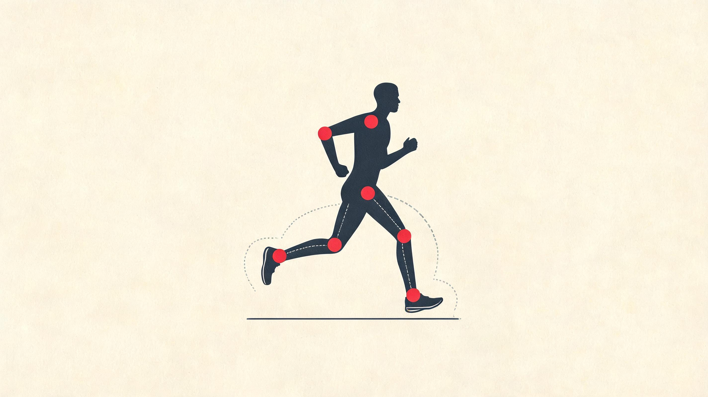
不是钟摆 · 落地压扁存能 · 推离回弹放能 · 一秒弹两次
步幅基本锁死 · 真能拧的只有节拍 · 一推就牵动全身
触地时间 · 步幅 · 上下颠幅度 · 大半跟着步频走
不是弹得高 · 重心贴着地滑过去 · 像滑轨弹簧不像兔子跳
跑步是一台弹簧,你只有一个旋钮
每一步跑步,身体在 0.7 秒里干了八件事。这一章先把这台机器看清楚,再回答一个最实际的问题:它你到底能调哪里——答案少得意外,基本只有一个旋钮。
▾ 本章 10 节 · 点击跳转
跑步不是走得快——是机器换了:走路那台叫钟摆,跑步这台叫弹簧。而这台弹簧你真正能拧的旋钮基本只有一个,叫步频;触地时间、步幅、上下颠的幅度,大半是它的影子。
1.1从走到跑,是机器的切换
从走到跑不是量的渐变,是机器的切换。配速大约从 7『30「/km 加快到 6』00」/km 的某个临界点,身体里那台机器悄悄换了——走路那台叫钟摆,跑步那台叫弹簧。
走路是个钟摆
你撑住一条腿,另一条腿往前迈,重心顺着一段弧线划过去。抬到最高点的那一刻,势能最大、动能最小;落回两脚之间,势能换成动能,又往前荡一段。一存一释,一抬一沉,像挂在祠堂屋檐下那种老式落地钟,可以荡一辈子不停。
Cavagna 1976 年在米兰用力台测过这件事。他让人走过去,让人跑过去,看力的曲线。结果是:走路时大概六七成的能量根本不是你肌肉给的,是重力给的——你只是钟摆上挂着的那个铜锤。剩下三四成才需要代谢供能。所以你散步一小时腿不酸,不是体能好,是大半时间钟摆在替你做功。
跑步是个弹簧
跑步把钟摆拆了。脚撑地的那一瞬,身体不是被举高的,是被压扁的——腿被动屈曲,跟腱和足底筋膜被牵拉,把冲击能量存进弹性结构里。然后推离瞬间,弹簧反向回弹,把人抛回空中。
所以重心和势能的关系反过来了:中支撑期不是最高,是最低,大约比平时站着低 6-12 厘米。这件事最反直觉的推论是——跑姿要「高弹高跳」是浪费,要「扁着滑过去」才高效。能量的暂存场所从钟摆的几何高度差,换成了肌腱韧带的弹性形变。
切换发生在哪一刻?发生在双支撑期消失、两脚同时离地的瞬间。走路任何时候都有一只脚在地上,有 20–25% 的周期里两脚同时贴地;跑步刚好相反,每步开头和结尾各有一段两脚都不沾地的时间,合起来约 20–30%。这就是「跑」和「快走」在生物力学上的唯一硬区分:跑步必然飞。
这个切换不是渐变的——大约在 2.1 m/s(约 8 km/h)有一个清晰阈值。低于它人会本能走,高于它人会本能跑,中间地带能量代价骤升,身体会主动避开。所以 7『30「 配速跑很别扭,不是你的问题,是物理在劝你换挡。
这里有个常被忽略的推论:走路热身对跑姿肌群其实没用。走路支撑相占 60%、摆动 40%,跑步刚好颠倒。两套时序不一样,激活的肌群也不一样。真正能从「摆」切回「弹」的,是动态拉伸 + 跑步专项动作(高抬腿、跨步跳),不是走两公里。
钟摆和弹簧的故事说完了。剩下的细节,在一只脚 0.7 秒里。
1.2一只脚 0.7 秒里的八件事
跑步步态周期 (gait cycle) 的惯例:从一侧脚——通常是右脚——初触地起,到同侧脚再次触地止,记为 0% → 100%。这套划分是 Perry 等人 1980 年代为走路做的,跑步研究里被延展也被压缩,骨架没变:八个事件,首尾相连。
支撑期占整个周期的 35–45%,5K 配速下大约 40%,800m 冲刺时能压到 22%;摆动期占 55–65%。这和走路恰好反过来——走路的腿大部分时间在撑,跑步的腿大部分时间在飞。
支撑相 (Stance Phase, 0–40%)
① Initial Contact (IC, 0%)——初触地。一只脚的某一部分(取决于着地策略,详见 1.5)触及地面的瞬间。这是步态周期的「零点钟」,决定接下来 200 ms 内冲击力如何穿过身体。膝关节此时屈曲约 5–10°,踝处于轻微背屈或中立位,髋伸约 20° 左右。
② Loading Response (LR, 0–10%)——负重反应,又称吸收期。整个体重在 50 ms 内被加载到这条腿上,膝关节迅速屈曲到 35–45° 以缓冲冲击。这是离心收缩 (eccentric) 的高密度阶段:股四头肌、腓肠肌、臀大肌都在被拉长的同时产生张力,把垂直方向上几吨级的冲量「接住」。这段时间是软骨、跟腱、跖筋膜承受应力的最高峰——大多数跑步损伤的力学根源都在这 50 ms 里。
所以一步路你以为是「抬腿—落地」两件事,实际是 8 件——前 4 件脚在地,后 4 件脚在空中。这 8 件里只有第 5 件(推离 PS)真正在产生前进动力,前 4 件全在「接住自己」,后 3 件在飞和准备落地。
③ Midstance (MS, 10–25%)——中支撑期。COM 通过支撑腿正上方,腿被压缩到最短,膝屈曲达到峰值,踝背屈到 10–15°。在弹簧-质量模型里,这是弹簧最大压缩的瞬间,储存的弹性势能即将释放。
④ Terminal Stance (TS, 25–35%)——终末支撑。COM 越过支撑腿前方,腿开始延伸,踝从背屈快速切换到跖屈,跟腱弹性回弹。髋关节伸展,准备进入推离。
⑤ Pre-Swing / Toe-Off (PS, 35–40%)——预摆动 / 离地。脚趾推离地面,踝完成跖屈到 -20° 左右。这是跑步唯一存在正向地面反作用力推进分量的瞬间。如果上一阶段的弹性回弹被时序很好地匹配,几乎不需要额外消耗代谢能。
摆动相 (Swing Phase, 40–100%)
⑥ Initial Swing (ISw, 40–55%)——早摆动。腿离地后,髋屈曲、膝迅速屈曲到 90–110°(高速跑可达 130°),通过缩短腿的转动惯量 (moment of inertia ∝ 长度²) 来降低摆动所需扭矩。这就是为什么跑得越快的人膝盖收得越高——这是钟摆惯量优化,不是表演性动作。
⑦ Mid-Swing (MSw, 55–85%)——中摆动。大腿继续前抛,小腿在前抛过程中由于惯性「鞭打」展开。此时髋屈曲达到峰值约 30–35°。
⑧ Terminal Swing (TSw, 85–100%)——终末摆动。腘绳肌组离心收缩,主动减速前摆的小腿,把它「收回」到身体下方,准备触地。这个阶段腘绳肌承受峰值张力,是跑步中腘绳肌拉伤最常见的瞬间——特别是冲刺中。
假设一位 70 kg 业余跑者跑 180 spm,他的完整周期是 667 ms。我们用 Coros 慢动作回放看看一只脚里发生的事——以及当后程崩盘时,每个数字会怎么走形。
0 ms · 触地:右脚刚落地,踝微背屈,膝屈 10°,髋屈 30°。之前 50 ms 大脑已经把股四、腓肠、臀大「上膛」。
50 ms · 灌入:体重在 30 ms 内全部压上来,膝屈到 40°,地面以约 2.5 倍体重的力反推你。如果你刚才落得太远(overstride),这帧就是膝痛的起点。
140 ms · 弹簧底:重心通过支撑腿正上方,腿被压到最短,跟腱拉长几毫米——按肌腱刚度算大约存了 30-40 焦耳,相当于举一瓶矿泉水做半个深蹲的能量。
280 ms · 推离:跟腱回弹,踝跖屈,弹性能在 100 ms 内释放为前进动量。脚趾离地。
340 ms · 飞:你完全悬空。右腿屈膝 110° 收回,左腿正在准备触地。这一帧你做什么都没用——只能等。
600 ms · 刹车:右腿前甩到峰值,腘绳肌离心制动,防止小腿「踢」得太远。冲刺中腘绳拉伤,基本都发生在这一帧。
667 ms · 再触地:周期重启。
想象那位跑者 35 公里之后开始崩——600 ms 那一帧腘绳肌已经不能干净地刹车,小腿落得越来越远,触地角度变成 overstride,然后 50 ms 那一帧的膝痛开始来。一个 667 ms 周期里的微小走形,在 1500 步累加之后就是后半程的崩盘。
真正能练的不是「推得更猛」,是「刹得更稳」——后面几章会反复回到这个点。
术语小注:不同教材里,支撑期会写成 stance / support / contact,摆动期写成 swing / recovery / aerial,意思都一样。「腾空相」在跑步语境特指两脚同时离地,一个周期里出现两次——推离后到对侧触地一次,对侧推离后到本侧触地再一次。
1.3三个关节,三个平面,一起转
跑步不只是从侧面看的那件事。下肢三个关节同时在三个解剖平面里转——矢状面 (前后)、冠状面 (左右)、水平面 (旋转)。任何一个平面失控,另两个平面就要代偿,代偿久了就是损伤。下面先讲三关节在矢状面的标志角度,然后把冠状面和水平面补上。
髋关节 (Hip) · 矢状面
髋关节运动学是钟摆 + 推进双重角色。触地瞬间髋屈曲约 30°,负重反应中保持屈曲位以稳定骨盆;中支撑期髋开始伸展,在推离瞬间达到峰值髋伸 -10° ~ -15°(伸展为负值)。这个 -10° 的伸展是推进力的几何来源——髋伸时髂腰肌被预拉伸,准备摆动相的爆发屈曲。
业余跑者最常见的力学错误,是髋伸不足(insufficient hip extension)。久坐导致的髂腰肌紧张让骨盆前倾,跑步中髋只能伸到 0° 或微伸,推进力不足以靠髋驱动,身体就改用小腿「扒地」代偿——这是足底筋膜炎和跟腱炎的力学起点之一。
膝关节 (Knee) · 矢状面
膝关节是冲击吸收的主战场。触地瞬间屈曲约 5–15°(后跟着地者偏伸,前掌着地者偏屈),负重反应中迅速屈曲到 40–50° 峰值,然后中支撑期开始伸展,推离时仍保持 15–20° 微屈(从不完全锁直)。摆动相早期屈曲到 90–110° 峰值,中摆动后开始展开,触地前主动减速。
膝的负重反应屈曲不是「被动塌陷」,而是主动的离心控制。股四头肌在膝屈曲过程中长度增加但持续产生张力,把竖向冲击转化为肌肉拉伸势能,再在中支撑后通过弹性回弹释放。如果股四力量不足,膝屈曲幅度会过大(>55°),或者反过来过小(<35°),都会增加髌股关节应力——前者增加髌韧带牵拉,后者增加髌股关节面接触压力。
踝关节 (Ankle) · 矢状面
踝是跑步弹簧系统的主开关。触地角度因着地策略而异:后跟着地者触地时踝背屈 5–10°(脚尖朝上,跟先着地),前掌着地者触地时踝跖屈 5–20°(脚趾在前)。负重反应中踝快速背屈到 10–15° 峰值(中支撑期),这是跟腱被拉长储能的时刻;然后跖屈反弹,推离瞬间达到 -20° ~ -25° 的最大跖屈,把储存的弹性能释放为前进推力。
整个支撑期踝关节角速度可超过 600°/s,跟腱内的应变能在 100 ms 内完成「储-放」循环。这是任何当下的肌肉收缩机器都难以匹敌的能量密度——后面 Ch2 会专门拆解。
冠状面 (Frontal Plane) · 骨盆下垂与髋内收
冠状面运动学是稳定性的指标,也是损伤研究的热点。最关键的两个度量:
髋内收 (hip adduction)——支撑相中,大腿相对骨盆向内倾倒的角度。健康跑者峰值在 10–15°,内收过度 (>18°) 意味着臀中肌力量不足或激活时序紊乱,身体重心向支撑腿外侧偏移。
对侧骨盆下垂 (contralateral pelvic drop, Trendelenburg sign)——支撑相中,非支撑侧骨盆相对水平面的下降角度。正常 <5°,如果 >8° 称为Trendelenburg 步态,是髂胫束综合征、膝前侧疼痛、跟腱病变的高危信号。
这两个指标本质上是同一件事的两面:臀中肌(以及深层的小臀肌、髋外旋肌群)不能在单腿支撑时把骨盆「端平」,代偿就发生在膝盖的内扣 (knee valgus) 和足的过度内旋 (overpronation) 上——这就是为什么膝痛的源头常在臀部。
水平面 (Transverse Plane) · 旋转
水平面旋转最容易被肉眼忽视,但能量学上很关键。骨盆每一步绕垂直轴旋转约 ±5–8°,胸廓反向旋转 ±7–10°——两者反向,以保持角动量守恒。这就是上肢摆动的力学动机:手臂的反向摆动平衡下肢的转动惯量,如果不让手臂摆,胸廓就必须更激烈地反旋,代谢成本上升约 3–13%(Arellano & Kram 2014 经典实验)。
另一个值得记的指标是垂直振幅 (vertical oscillation, VO)——重心一上一下的距离。精英 6-9 cm,业余 9-12 cm。每多 1 cm 振幅,每步要多花 7-10 焦耳做抗重力功;一公里大约 1500 步,马拉松累计多耗约 120 千卡——够你提前 1-2 公里撞墙。
这套冠状面和振幅指标个体差异大,我引用的数字是研究里的中位数。骨盆下垂多少算「过度」、髋内收多少算「代偿」,每个跑者都不太一样——别拿别人的数据当自己的标准,看自己的趋势比看绝对值有用。
① 测:用 Garmin/Coros/Stryd 跑表跑 5 公里 E 配速,记录 vertical ratio(振幅 / 步幅)。如果跑表没这个字段,改记 GCT balance(左右触地时间差)。
② 改:如果 VO ratio > 8% 或 GCT 不对称 > 2%,接下来 2 周做对侧单腿臀桥(仰卧屈膝,单腿上举,对侧脚撑地推起骨盆)3 × 12/腿,每周 3 次。冠状面失稳几乎全部来自臀中肌。
③ 看:4 周后重测 vertical ratio,目标下降 0.5-1.0 个百分点。如果 GCT 不对称没改善但单侧训练量已加倍,去看康复师——可能是隐藏伤病代偿。
1.4这台弹簧,你只有一个旋钮能拧
弹簧的故事讲完了。剩下半章要回答一个问题:这台一秒弹两次的机器,你到底能调它哪里?答案少得让人意外——真正握在你手里的旋钮,基本只有一个,叫步频。后面几节会反复回到它。
跑得多快,说到底就一个式子:每分钟落几次脚,乘上每步往前挪多远。前者是步频,后者是步幅。听上去你有两个旋钮可拧,但其中一个并不真在你手里——下面就拆这件事。
步幅这个旋钮,其实是锁死的
很多人第一反应是「跑快点就把步子迈大点」。问题是步幅的天花板不是你的腿长,是你这台弹簧蹬地能蹬出多大的力。每把步子加长一截,落地那一下要回弹的力就得跟着往上走;力给不出来,身体只好把脚往前甩得更远去够距离——脚一落到重心前头,就成了 overstride,每步先踩一脚刹车再蹬。所以没有力量打底硬拉步幅,拉出来的不是速度,是膝痛。对绝大多数业余跑者,这个旋钮已经拧到力学上限,再使劲也只是空转。
步频这个旋钮,才是真能拧的那个
步频是每分钟脚落地的次数。世界顶尖马拉松选手不管配速怎么变,稳稳挂在每分钟一百八九十步;多数业余跑者在一百六到一百七出头。差的这十几二十步,看着是节奏问题,其实是一条多米诺骨牌的第一张——
步频一慢,每步就被迫跨得远,脚就在地上多赖一会儿,落地点也跟着甩到重心前头,于是冲击变大、身子上下颠得更高。一个旋钮没拧对,后面四个毛病顺着倒下来。反过来,把这第一张骨牌扶正,后面那几张自己就站回去了——这正是这半章的主轴:你不必一个一个去修触地时间、振幅、落地角度,它们大半是步频的影子,跟着源头动。
那些跑表字段,几乎都是步频的影子
跑表上一长串花哨数字,挑要紧的认三个,你会发现它们都被步频牵着走:
触地时间——一只脚从落地到离地多久。精英长跑能压到两百毫秒以内,业余常在两百二到两百八,走路要六百。它短,是因为弹簧硬、跟腱回弹快;但你没法直接「想短就短」,提了步频它自然往下掉。
腾空占比——一个周期里你有多大比例飘在空中。短跑名将 Bolt 巅峰能飞到将近八成时间不沾地,精英长跑约七成,业余六成出头。飞得越久越爽,代价也越实在:落地那一下,单腿要独自接住的力就越大。所以这是笔等价交换——想多飞,腿就得更能扛,急不来。
左右脚对称度——两只脚触地时间差多少。差得多说明一侧在替另一侧扛活。Coros 这类跑表都给得出这个数,但别迷信「越对称越好」:伤后恢复期硬追对称,反而会压住本来不疼那条腿的发力。看自己的趋势,别拿绝对值较劲。
设一位业余跑者,轻松配速下步频每分钟一百七十出头,触地时间偏长,身子上下颠得也明显——三个数都在精英区外一截。他没去单独修触地时间,也没去硬压上下颠的幅度,因为那俩本就是步频的影子。
他只做一件事:打开节拍器,把目标定在每分钟一百八十出头,跟着踩。头两周别扭,腿像被人催着抬;过了三四公里就忘了节拍器还在响。几周后关掉再跑,步频自己稳在了高位,跑量一点没加。回头一拉数据，触地时间短了、上下颠的幅度也降了——没练任何力量动作,纯粹源头一推,影子自己往回收。
这大概是单一改动里回报最高的一招。但有个前提:只对本来步频偏低的人管用。本就一百八十开外还硬往上顶,跟腱会比你先喊停。我自己备上马，也是先用 Coros 把日常步频盯住，再谈别的。
所以记住这半章的总开关:步频拧对,触地时间、步幅、上下颠的幅度会自己落进合理区;盯着某一个单点死磕,练到吐血也撬不动——因为它不是源头,只是影子。下面几节就是顺着这台弹簧,一处处看这个源头怎么牵动全身。
1.5高手不是弹得高,是压得平
承上一节那台弹簧,这节只澄清一个被广为误传的画面:什么叫「跑得轻盈」。多数人以为是弹得高、跳得欢,恰恰相反。
在腰上绑个小灯,侧面慢镜头拍你跑,重心走的是一条上下起伏的波。波越平,你越省。前面 §1.3 已经算过这笔账:身子每多颠一厘米,一场马拉松累计多烧的力气,够你提前一两公里撞墙。这节不重复那笔账,只接着往下推一个反直觉的结论——
精英跑者一点都不「轻盈」,他们是在死死压着重心,不让它往上蹦。很多业余跑者把轻盈理解成「弹起来」,于是越跑越像兔子蹦,身子一上一下幅度大得很。真正高效的样子正相反:重心几乎贴着一条水平线滑过去,腿只在身体正下方做小幅的压缩和回弹。更像一根装在滑轨上的弹簧水平推进,不像一只上蹿下跳的兔子。
这跟弹簧的本性是一回事。腿压扁存下来的那点能量,大半是用来把向下砸的劲扳成向前的劲,把人往上抬只是顺带的副产品。所以「像踩弹簧一样跳起来」这句教练口头禅是反的——弹簧要的是把腿压扁、贴着地滑过去,不是把人弹高。一弹高,身子上下颠的幅度就飙，脚反而在地上赖得更久。这又绕回步频:颠得高的人,十有八九步频也偏低,把脚步频率一推上去,自然就不容易往上蹦了。
1.6一个撑了三十年的弹簧模型,顺手记两个实用数
前面一直在用「弹簧」打比方。它不只是比方——1990 年起，整个跑步力学就架在一个叫弹簧模型的简化上。这节交代它从哪来,再顺手挑两个你跑表上真用得着的数,其余的推导一概略过。
1990 年 McMahon 和 Cheng 在哈佛把跑步腿简化成最朴素的样子:一根弹簧,顶上挂着你的体重。触地压扁存能,推离回弹放能,就这么一来一回。神奇的是,单这一个模型,就能相当准地算出人和袋鼠在各种速度下腿有多硬、上下颠多高、脚在地上待多久、自己会挑多快的步频——一个简化打中四五个参数。从此它成了跑步力学的标准底座,三十多年里成千上万篇论文都在它上面打补丁,没人推翻得了。能撑这么久,在生物力学里已经算奇迹。
它当然只是个一阶近似:假设腿是根没重量的纯弹簧,既没算肌肉烧的能量,也没算肌腱回弹对不准拍子的损耗。知道它的边界就够,细节后面的章节会补。这里只挑两个能落到跑表上的用法:
第一,腿硬不硬,大脑替你随时在调,你不用操心。从草地换到塑胶跑道,从慢跑切到冲刺,腿这根弹簧的软硬会自动变,让「腿 + 地面」加起来的总软硬大致不变。所以换个场地你不必重新学跑步——身体早算好了。
第二,这根弹簧累了会变软,而变软就是该收手的信号。疲劳和年纪都会让腿弹性掉下来。有些跑表给「腿部刚度」这个字段:长跑后半程掉个一成左右是常态,要是掉到两成开外,身体已经在喊你减速了，再硬撑就是受伤前夜。比起一堆花哨指标,这个数挺实在。
1.7脚后跟还是脚前掌先落地,真有那么要紧吗
这是跑圈吵得最凶的一个话题。落地那一瞬脚的哪块先碰地,分成后跟、中足、前掌三种。2010 年那篇著名的赤足跑论文之后,这架吵了十五年没停。我不站队,只讲清楚一件事:它远没有你以为的那么要紧。
三种模式说穿了就是脚先着地的部位不同:后跟着地脚跟先碰、脚尖翘着,七到九成业余跑者都是这样,厚跟跑鞋还会把这比例推得更高;中足着地整个脚掌几乎同时拍下去,精英长跑里常见;前掌着地脚掌前部先碰、脚尖朝下,赤足跑者、短跑选手和部分东非精英在用。值得提一句:精英里前掌着地的比例确实比业余高出一截,但顶级选手用后跟着地也不稀奇——Kipchoge 在不同比赛里就被分析成过中足或轻微后跟。所以这事没有一个「精英标准答案」。
力学差异(只列证据明确的)
| 指标 | RFS 后跟 | MFS 中足 | FFS 前掌 |
|---|---|---|---|
| FSA 角度 | +8° ~ +30° | -1.6° ~ +8° | -20° ~ -1.6° |
| 冲击峰 (Impact Peak) | 明显(1.5–1.8 BW) | 较弱或不明显 | 几乎无 |
| 负载率 VLR | 高(60–100 BW/s) | 中(40–70) | 低(30–50) |
| 主动峰 Active Peak | 2.5–3.0 BW | 2.4–2.9 | 2.3–2.8 |
| 踝跖屈力矩 | 较低 | 中 | 高 |
| 跟腱负荷 | 低–中 | 中 | 高 |
| 膝伸力矩(峰值) | 高 | 中 | 较低 |
| 胫骨应力 | 胫骨前(应力骨折) | 中 | 胫骨后(后肌腱) |
| GCT(同速度) | 较长 | 中 | 较短 |
| 跑步经济性 RE | ≈ | ≈ | ≈(无显著差异) |
这张表读懂一行就够:没有哪种着地方式在省力或防伤上压倒别的。后跟着地把冲击塞给膝和胫骨,前掌着地把冲击塞给踝和小腿。改着地方式从来不是消除损伤,是把损伤从一个地方搬到另一个地方。2014 年 Hamill 和 Gruber 的系统综述就是这个结论,后来一堆 meta 分析反复证实。
更要紧的是另一件事:脚怎么落地不是你的标签,是速度说了算。同一个人,马拉松配速可能后跟先着地,5K 变中足,冲 400 米间歇又成了前掌。速度一快步子就长,身体被逼着让脚尽快碰地、缩短刹车,最快的办法就是前掌先点。所以「我是个后跟跑者」这种自我标签,本身就站不住。
那到底要不要刻意改?对绝大多数人——没有反复发作的力学伤病,就别碰。真有膝痛或胫骨疼,该动的还是那个老旋钮:把步频提上去,脚自然落回膝盖正下方,着地角度跟着收敛,膝和胫骨的负荷就降了。你看,绕了一圈,落地策略这道难题最实际的解法,又回到了步频上——而不是去硬掰脚掌,那只会让身体用更糟的方式补偿。(具体怎么提、怎么自检,见章末的操作清单。)
1.8稳不住的那条腿,毛病大半出在屁股
弹簧每次落地只撑两百毫秒出头,身体得在这点时间里把从脚到躯干这条链稳住,别让劲从哪个关节漏掉。跑姿一堆失稳的毛病看着五花八门,根却常常是同一个。
实验室把这些失稳信号测烂了,名字一长串:落地时另一侧骨盆往下掉、膝盖往里塌、脚往里翻过头、上身要么太直要么栽得太前。但你不用一个个去记。它们里头一大半,根都扎在一个地方——臀部的稳定肌没力气把骨盆端平。单腿撑地的那一下,这块肌肉端不住,骨盆一歪,膝盖就跟着往里塌、脚跟着往里翻。所以跑者常纳闷膝盖疼为什么去练屁股,道理就在这:疼在膝,病在臀。这也是为什么前面 §1.3 反复提臀中肌——它是这条链上最爱掉链子的一环。
剩下半个根,你已经认识了,就是脚落得太靠前——overstride。脚一落到重心前头,每步都先踩一脚刹车。怎么看?侧面瞄一眼:落地那一瞬,小腿该差不多是竖直的,要是明显往前伸出去,就是落远了。而怎么收回来?还是那个旋钮——把步频提上去,脚自然就落回身体正下方了。所以这条链上两大类失稳，一类回到臀,一类回到步频，没有第三个要你操心的玄学。
1.9摆臂不是打节奏,是替你省力
很多人把摆臂当成跟着腿打拍子的伴奏，可有可无。其实它是个藏起来的省力装置——不让它摆，你会跑得更累。
道理在于:你跑步时身体不能整个绕着转,不然就原地打圈了。可两条腿一前一后甩，每步都在给身体一个扭劲。这扭劲总得有人抵消——要么靠两条胳膊反方向摆掉,要么靠上身的肌肉自己拧回来。后者很费劲。胳膊一摆，正好把这扭劲轻松对冲掉。
有个很干净的实验能说明它多值钱。2014 年 Arellano 和 Kram 让人用四种姿势在跑步机上跑:正常摆臂、抱着头、手背后、手抱在胸前，测各自费多少氧。结果对比正常摆臂，抱头多费百分之三，抱胸多费九，背手多费十三。胳膊自己摆当然也要花点力气，可它省下的远比这多——净算下来，它是个不折不扣的省力装置。
落到动作上记四句就够:胳膊前后摆，别横甩过身体中线(横甩反而把扭转做大);肘弯成直角左右,和腿反着来;肩膀放松别耸;手别攥拳,攥着拳前臂白白费力。这些都不用刻意练，跑顺了身体自己会找到。
1.10身体早替你挑好了一个最省配速,可惜是局部最优
收尾这节，把整章那个旋钮和你的训练接上。先讲一件事:没人催的时候，你会自己挑一个配速跑——那个配速藏着最后一块拼图。
让人自由跑，他会自然滑到那个每公里最省力气的速度。比这慢，腾空收不到位、肌腱白存了能量；比这快，风阻和机械损耗陡涨。把速度和耗氧画出来，是个 U 字，谷底就是这个最省配速。这是大脑自己优化出来的——给定速度下，硬加快或硬放慢步频，都会让账单变贵。
问题在于：业余跑者被身体挑中的那个谷底，往往太低了。不是大脑找对了，是肌腱弹性、力量、稳定性都还不够，它只能在你现有的本钱里找一个凑合的低点——找到的是局部最优，不是全局最优。这正是为什么多数业余跑者的自选步频偏慢，又绕回了这章的主轴。训练真正在做的事，就是把这个谷底往更高的步频那边搬。
怎么搬？不复杂，但反人性:你得逼大脑离开它选好的那个舒服配速。一直跑在舒适区，等于天天巩固那个局部最优，练再多也不动；只有让大脑反复经过你真正想要的那个目标配速，它才会替你重算这条 U 曲线，慢慢把谷底挪过去。我自己冲 sub-3 盯的就是这条线——上马 10 月才见分晓，但逻辑是清楚的:你不把大脑赶出舒适区，它永远不会替你重算。
所以一章兜回原点:从落地到回弹，从触地时间到自选配速，所有指针都戳向同一个旋钮——步频。下面三个清单，就是围着它怎么测、怎么改、怎么盯。
协议 1 · 步频测定与改造
- 测什么: 当前自然步频 SPM,目标 175-185 (身高 >180 cm 可允许 170-180)
- 工具: Garmin/Coros/Apple Watch 任一跑表 cadence 字段,或免费手机 App 「Beat Counter」 跑 5 分钟数 30 秒乘 2
- 步骤:(1) E 配速跑 10 分钟,记录稳态步频。(2) 算出目标 = 当前 +5% (不超过 +10%)。(3) 用节拍器 App 设到目标值,跟着踩 2-3 周。(4) 关掉节拍器再跑,看自然步频是否上来。
- 频率: 节拍器训练每周 3-4 次,每次 10-20 分钟即可,不必整跑都用
- 判读: 4-6 周后自然步频上升 5-10 spm 视为成功;同时 GCT 下降 20-30 ms,VO 下降 1-2 cm 是连带证据
协议 2 · 慢动作着地自检
- 测什么: 触地瞬间小腿胫骨角 (与垂直线的夹角),理想 -2° 至 +5°;前伸 >10° = overstride
- 工具: iPhone 240 fps 慢动作 (Settings → Camera → Record Slo-mo),或安卓 super slow-mo 模式
- 步骤:(1) 找人在跑步机侧面 2 米处拍 30 秒,镜头与髋同高。(2) 截图触地瞬间。(3) 用图片测角工具 (Protractor App) 量胫骨与垂直线夹角。
- 频率: 每月 1 次,跑姿改造期每 2 周 1 次
- 判读: 角度 >10° = overstride,先提步频 5%。<5° 但有膝痛 = 检查触地点是否在重心前过远,看脚后跟落地点的水平投影是否超出膝盖。
协议 3 · 垂直振幅追踪
- 测什么: Vertical Oscillation (VO) cm 或 Vertical Ratio (%),后者更稳定;目标 ratio <8% (精英 <5%)
- 工具: Garmin HRM-Pro 心率带 (内置加速度计) 或 Stryd 跑步功率计,普通光电心率手表给不出准确 VO
- 步骤:(1) E 配速跑 5 公里,导出活动数据。(2) 看 Vertical Ratio 平均值。(3) 与历史趋势对比,而非单次绝对值。
- 频率: 每月一次同配速同距离的「参考跑」,形成长期曲线
- 判读: Ratio 上升 = 跑姿在恶化 (常见于跑量陡增、未恢复、伤病早期),反向工程是检查是否近期跑量超过 10% 周增、是否睡眠/营养下降。Ratio 稳定 = 状态稳定;下降 = 跑姿在优化或经济性提升。
这一章就到这。它从头到尾只想让你带走一件事——
跑步是一次次受控的落地和回弹,你能真正拧的旋钮基本只有一个,叫步频;触地时间、步幅、上下颠的幅度、落地的脚怎么摆,大半是它的影子,跟着源头动。
钟摆换成弹簧的那一刻起，整章讲的全是怎么把这台弹簧伺候顺:压得平、回弹接得稳、节拍踩得对。剩下的会落在别处——这台弹簧里的「力」到底怎么传，下一章细拆;怎么把步频改造排进一周的课表，训练那章讲。但力学这一章，记住那一个旋钮就够本了。
步态运动学要点
- 走 ≠ 慢跑:支撑/摆动相比例颠倒 (走 60/40 vs 跑 40/60),能量交换从倒立摆切换成弹簧。
- 步态周期 7 事件:IC → LR → MS → TS → PS → ISw → MSw → TSw,支撑相约 40%、摆动相约 60%。
- 三关节运动学:髋伸 -10° 推离最大、膝着地后屈 40-50° 吸收冲击、踝推离 -20° 跖屈贡献最大功率。
- 时空参数关键数字:精英步频 180-200 spm、触地时间 < 200 ms;业余步频 160-180、GCT 250-300 ms。
- SLIP 弹簧模型:跑步是弹簧-质量,腿刚度 10-30 kN/m;垂直振幅 6-10 cm 与垂直比是经济性的核心指标。
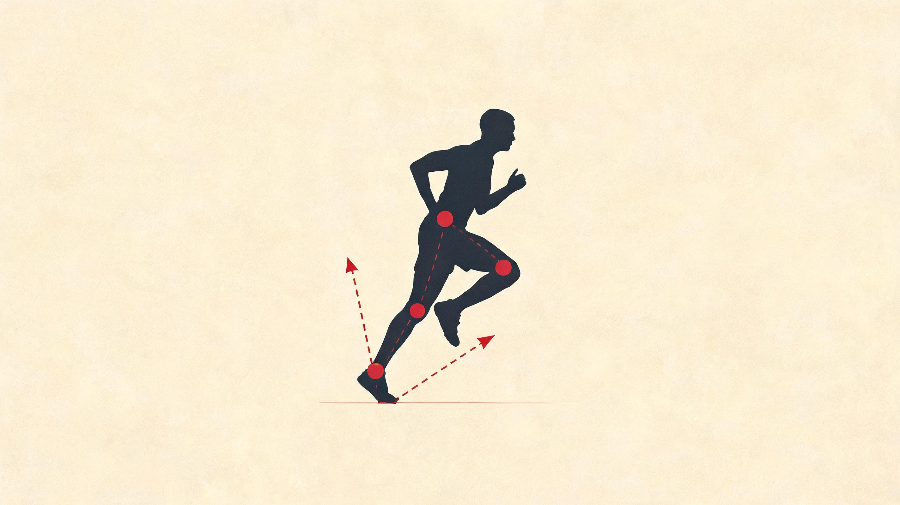
50 ms 内达峰 · 后跟着地者明显 · 跑步伤病的力学起点
负重相 + 推离相承担 · 膝/踝峰值负荷 · 跑步经济性核心
跟腱弹簧储释 · 推进力 35%+ 来自这一弹性 · 非肌肉代谢
负载率 · 高 VALR = 应力骨折与胫骨夹痛风险高
跑步是一场受控的摔倒
这一章只想把一件违反直觉的事讲透:你跑步时,根本没法主动「蹬地」。地面给你的那股力,是你落下去之后它被动反推的——你唯一能决定的,是落地之前那一帧,腿摆成什么样、肌肉绷没绷紧。
▾ 本章 10 节 · 点击跳转
跑步不是你在推地,是你一直在往前摔、再用另一条腿把自己接住。所以你能练的从来不是「蹬得多用力」——那一脚的力你管不着,是地面还给你的;你能练的,只有落地前那一帧把腿摆对、把弹簧绷紧。
先记住一个动作:接球。
一个棒球手接快球,不是球到了手心才去抓——那样只会被砸疼、球还弹掉。他在球到之前手套就张好、手腕就绷住,球一进套,顺势卸力再回弹。跑步落地是一模一样的事:你不是踩地,是用腿这只手套去接住正在往下落的身体。接得好不好,全看球到之前那半帧——手套绷没绷紧、摆没摆对位置。球到手了你再使劲,晚了。
这一章讲的所有东西——地面反作用力、负载率、那几根弹簧、跑步经济性——拆到底都是在回答一个问题:怎么把这一接,接得又稳又省力。先从那股「球」的力说起。
2.1那股「球」的力,到底多重
把一台力台埋进地面,跑者踩过去,200 ms 里能录到一段力的曲线。这条曲线叫地面反作用力 (Ground Reaction Force, GRF)。它就是飞进你手套的那颗球——一次落地里跑姿、着地、伤病风险,全压在这组波形里。
它有多重?70 kg 的你,每一步被地面顶上来的力大概是体重的两到三倍,也就是一步被一两百公斤顶一下。一公里一千多步攒起来,差不多是扛着一只成年河马走完这一公里。这就是为什么跑量猛增比配速猛增更容易伤——单次那一下没变,只是接球的次数翻倍了。
这颗球往三个方向砸:往上顶你的最重,往前往后的推你减速又推你前进(后面 2.3 专门算这笔账),左右晃的最小却最坑——每步都晃几公里下来够把髂胫束磨出毛病。下面这张图,就是它落进手套那 200 ms 的全程。
三个方向大小天差地别,但只有往上那条最值得盯。它的形状,藏着你接球接得稳不稳。
2.2腿被打两下:被动撞,和主动接
往上那条曲线常常有两个驼峰。读懂这两个峰,就读懂了一次落地里身体到底挨了什么。
第一个峰来得极快——落地后二三十毫秒就到顶,大概一点几倍体重。这是被动挨的一下:脚跟砸地的瞬间,一道冲击波顺着骨头往上窜,快到肌肉根本来不及反应,只能由骨头、软骨、脚跟那块脂肪垫硬扛。这就好比球已经砸到手套边上、你手还没收住——纯被砸。前掌先落地的人几乎没有这个峰,因为小腿在落地前就绷紧了,等于手套提前张好,把这一下接掉了。
第二个峰晚一百毫秒左右才到,两到三倍体重,跑得越快越高。这一下是你主动接住的——肌肉和肌腱全力顶住,把往下落的身体稳住再往上送。
所以一次落地,腿其实挨了两下:前半帧被动撞,后半帧主动接。关键是,被动那一下来得太快,你练不了它;能改的只有一件事——别让脚伸太远去够地,把步频提上来、步幅收回来,这一撞自然就轻。这道理后面 2.3 会算得明明白白。
那一撞有多伤,看的不光是多重,更是多快砸到顶——这叫负载率。同样一点七倍体重,十毫秒砸到顶和三十毫秒砸到顶,对骨头的伤害差好几倍。Davis 2016 年在 BJSM 那篇回顾就发现:有应力骨折史的跑者,负载率比常人高两成上下,可峰值力本身差不了多少。骨头怕的是「砸得急」,不是「砸得重」。所以负载率是跑步伤病里最靠谱的一个预警信号,比触地时间、垂直振幅都准。
麻烦是普通跑表测不出它,得靠力台或专门的鞋垫。但有个土办法,比任何跑表都直观:听脚步声。找段安静的柏油路跑两百米,竖起耳朵——「啪、啪」又响又尖,就是负载率高;「踏、踏」低频闷声,就是低。修法很简单,跑前花一分钟光脚原地慢跑、再蹦二十个小跳把弹簧叫醒,几周后那声音自己就闷下去,小腿前缘那点隐痛也跟着消。要是你以前犯过胫骨夹痛,听一耳朵脚步声,比盯任何跑表数据都管用。
2.3你推不动地面
这一节是整章的命门。很多跑步教练让你「主动蹬地、用力把地推开」——这话在力学上是错的。你压根没法主动产生那股向前的力。
道理还是接球。球往哪个方向弹,取决于你手套怎么摆、怎么卸力,但弹回去的劲儿是球自己带来的,不是你手心生出来的。跑步一样:地面那股反推,是你落下去之后它被动还给你的。你能控制的只有落地的姿势——髋摆在哪、腿什么角度、肌肉绷没绷。脚一沾地,后面那两百毫秒你就再使不上劲了,身体走的是早就设好的弹簧反应。
所以真正的发力窗口,只有落地前那一帧——大概五十毫秒,脚还在空中八到十厘米。这一帧大脑提前给腿「上膛」,小腿、大腿、臀部一起绷紧但先不收缩,像扳机扣到一半。睡不够、跑太累时,这一帧会慢个五到十五毫秒——这就是「今天腿感觉发沉」的真正源头,不是腿没劲,是手套张晚了。
既然蹬不动地,那变快、省力靠什么?靠把「白挨的那部分力」减到最少。脚每一步都落在重心前面,落地前半程身体被往后拽一下减速——这是制动,躲不掉。但脚伸得越远(也就是 overstride,落点离重心超过十几厘米),这一拽就越狠,你后半程就得多费同样多的劲把它推回来。这才是脚伸太远真正的代价:不是「脚步重」,是每步都在还一笔看不见的账。
怎么把这笔账压下去?把步频提个一成、步幅顺势收回来,落点离重心就近了,这一拽轻一成多。这就是「提步频能降冲击」的全部秘密——不是脚步变轻了,是几何上让那只手套接得离身体更近、被拽得更少。
2.4真正接球的,是脚踝不是大腿
那这只手套,主要是身体哪个部位在出力?多数人会猜大腿、猜屁股。错了。把一次落地里三个关节各干了多少活摊开看——答案有点反常识。
下面这张图把每个关节在一次落地里净出的功画了出来。先记结论:踝最大,髋次之,膝几乎是负的。
这张图把业余跑者最常忽略的一件事摊开了:跑步最大的能量生产者是脚踝。不是大腿,不是屁股——是脚踝、跟腱、足底连成的那只「脚踝手套」,贡献了一次推离里近一半的正功。膝盖净出的功几乎是负的,它在吸冲击,是避震器,不是引擎;髋负责平衡和补一脚推进。
所以跑步的力量训练,重心该压在小腿、跟腱和脚底,而不是一门心思练股四和臀。前者是发动机,后者只是稳定器——这个次序,很多人练反了。
2.5这只手套自带三根免费弹簧
脚踝出了近一半的功,可小腿肌肉那点代谢功率根本不够本。差出来的那一大块,是几根弹性结构在落地时存进去、推离时弹回来的——这部分动力跑步「白送」,不烧氧、不累。
最强的一根是跟腱,差不多是人体最猛的天然弹簧,硬度接近钢丝绳。一次落地里它被拉长五毫米上下,70 kg 的人能存进去三四十焦耳,推离时把其中约三分之一直接弹回来变成动能(Lichtwark 2007 测过)。这一份力不烧 ATP、不耗氧、不产生疲劳——纯赚的。另外两根帮衬的:足弓那张筋膜,落地压扁、推离脚趾一翘就绷紧回弹,贡献约一成七;髌腱也存一点。碳板跑鞋干的事,说穿了就是给这套弹簧外挂一根更硬的杠杆，把回弹放大。
这几根弹簧——尤其跟腱——好不好,有个特别朴素的家用测试:单腿提踵,脚跟踮到最高再慢慢放下,三秒一次,能连做二十五次算合格,十五以下就是「软」。假设一位跑者左腿能做二十二次、右腿只有十八次,那右侧明显弱——跟腱出问题，往往就先从弱的那条腿来。练法是循证最稳的一组:站姿提踵练腓肠肌、坐姿提踵配三秒慢放练比目鱼肌,每周两次坚持四周,提踵次数能涨三到五成,跑起来推离更「脆」、触地时间缩十几毫秒。注意，它练的是肌腱刚度，不是肌肉力量——后者光靠猛跳反而练偏。
2.6弹簧白送,得有个前提:接得快
这几根弹簧不是摆那儿被拉一下就行。它存能、放能的时机,得跟肌肉发力的时机严丝合缝——错半拍,存进去的劲就漏成热,白接一场。
还是接球手:好的接球是「啪」一下,球进套立刻借势弹出去;要是手套软绵绵地兜着球磨蹭半天,那股劲就泄光了。跑步落地一样,从绷紧、接住、到弹回去这一套(运动科学叫拉长-缩短周期),最怕的就是中间那一帧拖太久——触地时间超过五十毫秒,存的弹性能就大量散成热。这就是「触地时间长 = 跑得费」的全部原因。也正因如此,这套接-弹的效率比单纯靠肌肉硬蹬高出三五成——你蹲一下再跳,永远比直挺挺原地起跳跳得高,就是这股借力在帮你。
这一节是力学篇里最像「训练」的一节,所以收尾留个问题给你自己:你上一次做跳深、单脚跳是什么时候?要是想不起来,那就是答案——你身上那套接-弹的机器,怕是很久没被叫醒了。
2.7所有这些,最后都折成一个数:油耗
前面六节折腾的所有力学细节,最后都收进一个数——跑步经济性。说白了就是同样的配速,你每公里烧多少氧。烧得少,就是接得省、跑得经济。
它跟最大摄氧量(VO₂max)是一对:VO₂max 是发动机最大功率,经济性是这台发动机的油耗。两个 VO₂max 一样的人,油耗差一成多,马拉松能拉开六到八分钟。所以精英之间比的从来不是发动机——他们峰值都顶到天花板了,差距全在油耗。这也解释了一件怪事:你练到第五年 VO₂max 早就不动了,却还在变快,因为油耗还能再降一两成。下面这张表,就是已经被反复验证、真能改油耗的那些力学因素。
| 因素 | 方向 | 机制 |
|---|---|---|
| 跟腱刚度 | ↑ 越高越好 | 接-弹效率提升,弹性回弹更多 |
| 垂直振幅 VO | ↓ 越低越好 | 每步克服重力做功减少 |
| 触地时间 GCT | ↓ 越短越好 | 接球那一帧更短,弹性散失少 |
| 水平速度波动 | ↓ 越平稳越好 | 制动加推进冲量平衡,少花加速钱 |
| 步频 | 个体最优值附近 | U 形曲线,偏离都增加耗氧 |
| 体重 | ↓ 一定范围内 | 每公斤多约 1% 耗氧 |
| 胫骨/大腿长度比 | 较小为佳 | 转动惯量降低,摆动相能耗减少 |
| 跑鞋质量 | ↓ 越轻越好 | 每 100 g 鞋重 ≈ 1% 多耗氧 |
| 跑鞋鞋底回弹率 | ↑ | 外加弹簧,放大 SSC 效益(超临界跑鞋) |
这张表不要扫一眼就过。最值钱的是开头三行——跟腱刚度、垂直振幅、触地时间,全是「把球接快、接脆」的同一件事,正好对应前面那只手套。它们靠提踵、提步频、跳绳跳上去,几周到几个月见效,代谢上几乎不要钱。后面那些(体重、鞋、肢长比)边际收益小得多,别本末倒置——尤其别为了油耗去硬减重,力量丢了得不偿失。
2.8想改跑姿,只有一条性价比最高
把前面所有指标连起来,常见那几个「跑姿修正」到底改了什么、值不值得改,一句话能说清。
结论先放这:对业余跑者,真正该做、且性价比甩开其它一条街的,只有提步频——把当前步频提个一成。这一下,落点离重心近了、垂直晃动小了、那一撞的负载率降近两成、膝盖力矩也跟着轻——冲击降、油耗微升、伤病风险显著降,而代价几乎为零,几周就适应。手套接得离身体更近,全身一起受益。
剩下那些都得掂量。改前掌着地能让脚跟那一撞几乎消失,可它只是把冲击从膝盖、胫骨搬到跟腱和小腿肚——你本来跟腱就紧的话,这是雪上加霜。收步幅、加前倾方向没错,但硬来都会出岔子,而且它们本就是步频提上去之后自然发生的事,犯不着单独去抠。所以一句话:别动着地方式,先把步频提起来。当年一堆人读了 Lieberman 那篇 Nature 就去硬改前掌,改三个月跟腱隐痛,最后多半又改了回去。
2.9说到底,你只管接球前那一帧
把前面所有方程合起来,跑步就缩成开头那句话:一场受控的摔倒,而你只管接球前那一帧。
每一步都是从「失控」开始的:重心已经甩到支撑脚前面去了,你对这只脚早没了控制权。要是什么都不做,身体就接着往前栽。跑步干的事,就是用另一条腿在对的时间、对的位置把自己接住——落地这一下,把往下的劲卸掉再弹回去,往前的劲顺势带过去,能量就这么从上一次腾空接力到下一次腾空,全靠那几根弹簧周转。接早了制动太狠,接晚了重心掉太多,劲就漏成热。
这个比方还逼出两条扎实的推论:身体得永远微微前倾,好让自己一直处在「正往前栽」的姿态,站直或后仰等于一脚把刹车踩死;跑得越快不过是栽得越急——倾角更大、摆腿更快、弹得更猛,骨子里还是同一件事。这套对谁都成立,只是烈度因人而异。那它落到你每天的跑步上,到底该怎么用?
2.10盯三条线,胜过追任何「标准跑姿」
实验室那套力台你做不了,也不用做。日常真正值得长期盯的,只有跑表上三条线。
这三条,都是「手套接得快不快」的可穿戴代理:步频(目标一分钟 175–185 步,个子高可略低、矮可略高)、垂直振幅(越小越好,精英不到 5%)、触地时间(越短越好,目标 230 毫秒以内)。它们的趋势,比任何「理论最佳跑姿」都更能告诉你力学有没有在变好。反过来,要是跑量在涨、这三条线却一起往坏走,那就是危险信号——说明你在拿意志力和心肺硬扛,而不是靠力学跑。跟腱、胫骨出问题之前,这三条线常常连着两三周悄悄变差,只是当时没人盯。
我全马 PR 3:20,在往 sub-3 推。这一章读下来,真要我动手改的其实只有一件:别再瞎琢磨「蹬地发力」「换前掌」这些我控制不了的东西,就盯 Coros 上那三条线。
做法很省事:步频警报设到 178 左右,让 Coros 替我把节奏拎住;每趟跑完拉一眼垂直振幅和触地时间。不看单次数值,看几周的走向——这三条慢慢变好,就说明那只手套接得越来越脆。哪天跑量加上去、它们却集体掉头,我就知道该退一步而不是硬顶。跟腱出事,往往就藏在这种没人看的两三周里。
力学篇到此为止。砸进手套的球、被动撞与主动接的两个峰、脚踝那只自带弹簧的手套——讲来讲去就一条主线:跑步是把自己往前摔、再接住、再还回去,而你只管接球前那一帧。下一篇换个问法:这只手套一接一弹要烧能量,身体怎么供上这口劲?氧气、ATP、乳酸,下章见。
力学动力学要点
- GRF 三分量:垂直 (2-3 BW)、前后向 (制动+推进)、内外侧 (稳定)。垂直双峰 = 冲击峰 + 主峰。
- 跑步是受控的摔倒:重心始终在支撑点前方,推进力主要来自臀大肌髋伸 (~50%),不是小腿蹬地。
- 关节功率分布:踝产生最多正功 (35-50%),膝主要吸收功,髋平衡产生与吸收。
- 弹性储能 30-50%:跟腱储 35% + 足弓 17% + 髌腱/IT 带;Windlass 机制让推离时足底筋膜紧绷抬升足弓。
- RE 的力学根源:腿刚度、垂直振幅、肌腱刚度、肌肉协同——力量训练能提升 4-8%。
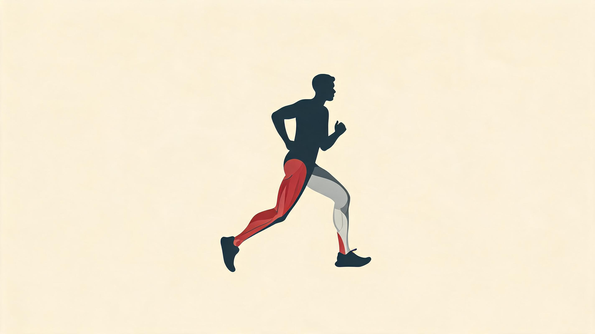
不是腿在推地 · 是接住自己再弹回去 · 每公里接发一千五百次
不是哪里痛练哪里 · 断点常在你看不见的上游一环
都长在镜子照不到的地方 · 也都从没被认真练过
推离那帧 · 踝出力六成 · 髋三成五 · 股四头只是配角
下肢动力链 · 链条只在最弱的那一环断
这一章只想让你记住一件事:跑步不是腿在推地,是一条从脚到躯干的链在接住你、再把你弹回去。链条只在最弱的那一环断——而最弱的那几环,偏偏长在你镜子里看不见的地方。其余的解剖细节,都是为了让你认出这几环。
▾ 本章 6 节 · 点击跳转
把你的下肢想成一根传力的链子,每一步都做同一件事:落地把冲击接住存进肌腱,推离再放回地面。链子一定从最弱的那一环先断,而最弱的三环——臀、比目鱼、足底——恰好都是你平时看不见、也从没认真练过的。你练的不是把强的练更强,是去补那根最细的环。
先认一个比方,这一章后面都靠它:你的下肢是一条传球的链。
脚一落地,球(也就是地面砸上来的那股冲击)从脚底接起,顺着踝、膝、髋一路往上传;推离的时候反过来,从髋一路传回脚尖,最后从跟腱和足弓里弹出去。一公里跑下来,这条链单腿要接发一千五百次球,每一次砸上来的冲击大约是你体重的两三倍。所以跑步真正吃功夫的地方,从来不是「使劲蹬地」——是稳稳接住自己,再干净地传回去。一个环接不住,球就掉,后面的环只能扑过去替它捡——这就是大多数跑步伤病的来路。
而大众最爱说的那句「跑步靠大腿」,基本是把球场看反了。真正发力把你往前送的,是臀大肌、比目鱼肌、足底这几块藏在身后、看不见的肌肉;镜子里你最在意的股四头肌,大半时间在做的其实是离心刹车——接球的,不是传球的。一个能在器械上踢起七十公斤、臀肌却怎么也叫不醒的人,五公里配速会输给一个臀肌灵醒的瘦子。链子的两头,往往比中段还弱。
下面先把这条链上的环挨个认一遍——重点只放在最容易掉球的那几环。认全了,这一章最后会收回到一句话:你该把有限的训练时间花在哪。
3.2先把链上的环看一眼
下面这张图按「在跑步里干什么」给下肢肌群上色:金色在传球(推进),红色在接球(离心减速),绿色管缓冲,蓝色管弹性储能。你不用记肌名,只要先记住一件事——传球的那几块(金、蓝),大半藏在身体背面。
这张图最值钱的一句话:跑步真正吃饭的肌肉,几乎全长在镜子照不到的地方。臀大、比目鱼、足底——这条链上最关键的几环,恰好也是你平时最容易忽略、最少练到的。接下来三节,我们就盯着这几环看。
3.3髋:发动机,但常年熄火
髋是这条链上力臂最长的一环,真正把你往前送的劲大半从这儿出。可对久坐的人来说,它常年处在熄火状态——肌肉还在,神经却叫不醒它,跑起步来它只是个看客。这有个名字,叫「臀肌沉睡」。
臀大肌是你全身最大的一块肌肉,有黑猩猩同名肌的好几倍大。它有个怪脾气:走路时几乎不出力(你慢走时摸一把臀部,是松的),一跑起来却成了主发动机——推离那一下,全身往前的劲大约三成是它给的。Lieberman 和 Bramble 2004 年在《Nature》上专门拎出这块肉讲过:两百万年前的直立人靠在烈日下把猎物追到中暑来打猎,就是这块肌肉、这副跟腱和足弓被磨出来的。你今天跑步用的还是这套老家伙,只不过被椅子坐废了一半。
它为什么会「熄火」?道理不绕:你天天坐着,髋前面那截肌肉(髂腰肌)被压短、绷紧,反过来就把后面臀大肌的点火信号摁住了——一个绷着,对面那个就醒不了。验证它只要趴下抬一条腿,感觉哪块先收紧:正常是臀大肌先点火、腘绳肌跟上;熄火的版本是腘绳肌抢着先动,腰跟着往下塌,臀全程没露面。
臀大肌旁边还有块臀中肌,管的是单腿落地时把骨盆「端平」。跑步说到底就是左右腿轮流单脚落地,每一步都得它撑一下。它一弱,对侧骨盆就往下掉,膝盖跟着往里塌,然后髌骨轨迹乱掉,跑者膝就来了。健身房里那句「膝痛找臀」不是口号,是这条链的必然——膝在链子中段,出事的源头常在它上游一环。这就是「链条从最弱处断、而断点常不在你痛的地方」头一个例子。
假设一位跑者备赛中段连着几周这样过:工作日椅子上坐十小时,周末一口气拉三十公里长跑。跑完第二天臀不酸、腰先酸,他以为是核心弱。趴下抬腿一测,果然腘绳抢先——臀彻底熄了火。补八周单腿臀桥加蚌式,长跑后的酸点才从腰挪回臀。这种事,在跑团里见得不算少。
3.4小腿:那块被冷落的耐力心脏
如果说臀大肌是发动机,那比目鱼肌就是这条链的耐力心脏。它常年被旁边的腓肠肌抢了风头——腓肠肌隆起、好看、上镜,可真正扛长跑的是它。这一环我多说两句,因为它正是大多数人「跑半小时小腿就垮」的根。
小腿上这两块肌肉分工很有意思。腓肠肌跨膝、踝两个关节,腿伸直时使得上劲,管的是起跑、冲刺这种爆发活;比目鱼肌只跨踝一个关节,膝盖一弯,就剩它单独干活了——而你跑长距离时膝盖始终微弯,所以那活几乎全压在它身上。一个数字说明分量:马拉松配速下,你每一步踝关节往后蹬的力,六成以上来自比目鱼肌。它不上镜,却是你能不能撑到终点的那块肉。Hébert-Losier 2017 年那篇综述把这个分工讲得很干净。
这个分工还藏着一个最实用的训练点:想单独练到比目鱼,你得坐着练。坐姿提踵把膝盖弯到 90°,等于把腓肠肌「关掉」,逼比目鱼单独发力;健身房里你常看见的那种站着提踵,练的其实是腓肠——对长跑帮助有限。这一点几乎所有业余跑者都搞反了。
① 测:单腿连续提踵,脚跟贴地起、踮到最高,约 3 秒一次。能做 25 次/腿 = 比目鱼合格;不到 15 次 = 弱环,这就是你跑长距离半小时后「小腿垮」的源头。
② 改:坐姿提踵 4 × 15-20,下放慢到 3 秒,每周 2 次,练 8 周。负重从徒手起,适应了再加。这一招对长跑成绩的回报,比多练核心、多练大腿都直接。
③ 看:8 周后重测次数,目标 25-30。同时留意跑 10 公里以上时,小腿能不能把节奏撑到最后,而不是半小时就泄气。
3.5足部:链条末端那张弹簧
这是链条最末、也最被现代鞋宠坏的一环。一只脚里塞着 26 块骨、20 多块肌肉,跑步时它要在零点几秒内连做两件相反的事:落地变软吸震,推离变硬弹射。这套「软硬开关」叫 Windlass 机制——脚趾往上一翘,足底筋膜像被绞盘卷紧,足弓抬起来,整只脚瞬间从减震垫切成弹板。
这张弹簧的弦,就是你脚底那条足底筋膜——从脚跟扯到五个跖骨头的一条厚胶原带。Ker 1987 年那篇经典论文测过,光这条弦在推离时被动储下的能量,就能占一整步的近两成。撑着这把弓的,还有四层、约 18 块小肌肉。问题就出在它们身上:你常年穿着支撑足够的厚底鞋,这些小肌肉无事可做,日久就「用进废退」——脚不缺缓震,缺的是一只会自己工作的脚。这又是一环看不见的弱环,而且是被现代生活主动养弱的。
这里顺带翻一桩旧账。1990 年代到 2000 年代初,「过度旋前要配矫形鞋垫」几乎是跑步医学的铁律,跑鞋店按你的足弓高低卖鞋,成了一门生意。可 2010 年后接连几篇大样本研究(Knapik 2014、Nielsen 2014)发现:按足型选鞋,伤病反而可能更多。共识慢慢转了向——足弓是个功能问题,不是形状问题;练那些小肌肉、改善踝活动度、调步频,远比换鞋垫靠谱。一条教条从立起来到被推翻,常要二十年,这中间被它误导的跑者不在少数。
① 测:闭眼单腿站 30 秒。能稳稳站住 = 合格;5-10 秒就晃倒 = 足底已经「失明」很久了。
② 改:短足练习——坐着光脚,脚趾别动,主动收足弓、把前脚掌往脚跟方向「缩」,维持 5 秒 × 10 次/脚,每天 2 组。这是叫醒足底小肌肉的入门。
③ 看:四到六周后重测闭眼单腿站,目标稳定 30 秒。跑步时若能感到「脚趾也参与了推离」、跑后脚心轻微发酸,就是它们被叫醒了。
3.6把链子串起来:它靠弹性省力,靠核心不漏力
挨个认完几环,得退一步看整条链怎么协同。两件事:一,这条链一半的劲不是肌肉使出来的,是肌腱当弹簧弹出来的;二,核心不是发力的,是别让传球漏掉的那双手。
先说弹簧。你大概以为跑步全靠肌肉收缩往前蹬,其实每一步里差不多一半的机械能,是肌腱被动存了再放的——着地时跟腱、足弓被拉长,把能量存住;推离时一松,弹回去。所以为什么跑得好的人看着那么省力?不是他更使劲,是他使劲的比例更小:能量主要在肌腱里进进出出,肌肉只在旁边把张力绷住。这套「拉长再缩短」的机制 1979 年 Komi 在芬兰研究跳高起跳时发现,后来才知道跑步每一步都在用——同样的肌肉,先反向拉长再收缩,能多输出两三成的功。
这件事直接戳破一个执念:跑姿好不好,关键真不在抬腿多高、前倾多少度,而在这套弹簧用得充不充分。两个同配速的人,一个动作「难看」但弹性十足,一个教科书般标准却全靠肌肉硬蹬,前者反而更省。Saunders 2006 年那篇讲跑步经济性的综述说得很直白:别再盯着姿势改了,把弹性练出来,姿势是结果。跳绳、单腿跳这类弹跳训练,比任何「跑姿矫正」都管用。
再说核心。多数人一听「练核心」就想到练腹肌,这是错的。跑步里核心几乎不出推进力,它干的是把腿生成的劲干净地传到地面、再传到躯干,中间一点不漏——它是这条传球链上不让球掉地的那双手,不是发球的人。所以你不需要练仰卧起坐、俄罗斯转体(跑步本身每分钟就让躯干扭一百七十多次,扭转练得够多了);你要练的是抗扭转的能力:Pallof Press、单边负重走、Dead Bug 这些。
说了一圈,谁在哪一步真正出力,有没有硬证据?有。下面这张图把一个完整步态周期拆成五段,看髋、膝、踝三个关节各自的力矩贡献——这是排训练优先级的客观依据,不是我凭感觉。
这张图把「跑步靠大腿」彻底敲死:推离那一帧,踝的力矩贡献六成以上、髋接近三成五、膝不到三成。换句话说,你最在意的股四头肌,在真正发力的那一刻只是个配角;它力矩最高的中支撑期,干的还是接球缓冲、不是传球推进。一个被错置了几十年的训练优先级,在这张图面前没什么好辩的。
3.7那就把训练时间花在最弱的环上
认了一圈环,该收口了。结论其实就一句话——既然链子从最弱处断,你那点有限的力量时间,就该全砸在最弱、又最看不见的那几环上,而不是接着练镜子里早就够用的肌肉。
反复出现的弱环,来回就那三组:臀、比目鱼、足底。共同点很一致——平时不起眼、镜子照不到,可一到跑步这件专项动作上,它们几乎决定你的上限。下面这张表把整章收成一份你能照着排的时间预算:每周能给力量的时间是死的,先做 P0,有空再做 P1,P2 锦上添花。腘绳和核心也在表里——它们不在最弱那三环,但漏了照样掉球。
| 优先级 | 对象 | 每周时间 | 训练动作 | 评估指标 |
|---|---|---|---|---|
| P0 | 臀大肌 + 臀中肌 | 30 min | 单腿臀桥、蚌式、髋外展、后弓步 | 单腿臀桥 30s 无侧倾 |
| P0 | 比目鱼肌 | 15 min | 坐姿提踵慢离心 3s × 20 | 连续单腿提踵 25 次 |
| P1 | 腘绳肌（离心） | 20 min | 北欧腘绳、单腿罗马尼亚硬拉 | H : Q ≥ 0.6 |
| P1 | 核心抗回旋 | 15 min | Pallof Press、Dead Bug、鸟狗 | 30s 单边静态保持稳定 |
| P2 | 固有足肌 + 平衡 | 10 min | 短足练习、单腿闭眼站、毛巾抓握 | 闭眼单腿站 30s |
| P2 | SSC / 弹跳能力 | 15 min | 跳绳 3 × 60s、单腿跳、深蹲跳 | 反复跳 60s 心率上升 ≤ 30 bpm |
表里的「评估指标」那栏,顺手就是一套躺沙发上能做的自测:单腿臀桥能不能稳 30 秒不侧倾、单腿提踵能不能连做 25 次、闭眼单腿能不能站住 30 秒。三分钟做完,缺哪环一目了然。三项以上不达标,那这一两个月别急着堆跑量,先把这几环补起来——地基没夯实就加楼层,塌的还是地基。
我全马 PR 3:20,目标推到 sub-3。整章读下来,我没打算把每块肌肉名字背全——我只挑出自己最可能掉球的那一环先补。对我来说大概率是比目鱼:我跑长距离到后段,垮的常是小腿节奏而不是心肺。
所以我会先做那个单腿提踵自测,看左右腿各能连做几次、差多少。然后把坐姿提踵塞进每周两次的力量里,慢离心下放,练满八周再回测。至于「臀有没有醒」「足底灵不灵」,Coros 帮不上忙——这几环是力量和神经的事,得靠上面那几个 30 秒动作去测,跑表测不出来。
这正是这一章想交给你的判断:别再把时间砸在镜子里那几块早就够用的肌肉上,找出你这条链最细的那一环,先补它。链子从最弱处断——你的成绩也一样。
这章就到这。能量进了这条链,要么被干净地传出去,要么在某一环里悄悄散掉;所谓「跑步经济性」,无非是让散掉的那份尽量少、传出去的那份尽量多。它从来不是靠「练得更狠」换来的——是靠每一环都不太弱。链条只在最弱处断,这是这条发力链你只需要带走的一句话。
下肢发力链要点
- 后侧链是真正发动机:跟腱 → 腓肠肌 → 腘绳肌 → 臀大肌 → 竖脊肌,业余跑者三大薄弱环节都在这条链上。
- 髋部核心三肌:臀大肌 (推进主力)、臀中肌 (防 Trendelenburg 骨盆下垂)、髂腰肌 (摆动期髋屈)。
- 双关节肌的复杂性:股直肌、腓肠肌、腘绳肌跨两关节,功能更复杂,也最常被拉伤。
- 比目鱼肌是被低估的英雄:慢肌占 80%+,长跑耐力主力,精英长跑者比目鱼肌横截面积显著大。
- 核心 = 力量传递通道,不是力量产生器:抗回旋 + 骨盆稳定才是其在跑步中的真正功能。
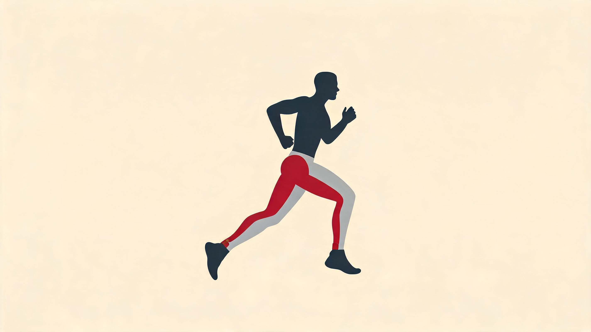
不是疲劳的凶手 · 心肌偏好它超过葡萄糖 · 慢肌主动抓来烧掉
不是「开始产乳酸」 · 是「产得比清得快」的那条线
不是排队接力 · 第一秒就全开 · 只是占比在变
不是少产乳酸 · 是练那根更粗的排水管
能量代谢 · 一笔被冤枉了一百年的化学账
你跑表 App 里那个「乳酸阈」,背后藏着运动生理学最大的一次翻案。乳酸被当了一百年的累人元凶,后来发现它根本是身体内部的燃料。这一章只讲透这一件事——其余的供能细节,都是为了让你看懂这笔账。
▾ 本章 6 节 · 点击跳转
乳酸不让你累,它是你跑步时身体内部流转的一种燃料。让你累的是它身边那一堆并行的化学变化,乳酸只是顺手留下的指纹。所以「乳酸阈训练」练的从来不是少产乳酸,是把清除乳酸的那根管子练粗。
先说一个被冤枉了一百年的案子。
1907 年,英国生理学家 Hill 给了一个特别顺嘴的解释:剧烈运动产生乳酸,乳酸让肌肉变酸,酸的肌肉就累了。简洁,好记,统治了运动生理学七十年——直到今天还躺在不少跑表 App 的「乳酸」说明里。
但它是错的。1980 年代,加州大学伯克利的 George Brooks 给乳酸打上同位素标记,追它在体内到底去了哪。结果发现:乳酸根本不是堆在那儿等着害你,它是被身体抢着消费的——慢肌纤维主动从血里把它抓进线粒体烧掉,心肌甚至更爱烧乳酸,胜过烧葡萄糖。Brooks 给这套流转起了个名字,叫「乳酸穿梭」。三十年后他在 2018 年那篇 Cell Metab 综述里下了定论:乳酸是糖酵解和有氧氧化之间的运输货币。
这一章就讲这桩翻案。要看懂它,得先知道肌肉到底烧的是什么钱、这钱有几条产线——下面四节是铺垫,第五节是正主。
4.1肌肉只认一种钱:ATP
不管你是冲百米还是跑百公里,肌肉收缩只认一种支付方式:ATP 这个分子断一截,放出能量。慢肌快肌都一样,一百年都没变过。
麻烦在于这种钱身上现金极少——全身就存八十来克 ATP,够你以马拉松配速烧十秒钟。十秒。所以这事的关键从来不是「你存了多少」,是「印得有多快」:全力跑的时候,肌肉重造 ATP 的速度能飙到静息的两三百倍。三大供能系统,说白了就是为这套高速印钞准备的三条产线。它们不抢生意,谁该上、上多少,看你跑多快、跑多久。
4.2三条产线,从第一秒就全开着
教科书爱画那张三色阶梯图:0–10 秒磷酸原,10 秒–2 分钟糖酵解,2 分钟以上有氧。这图没说谎,但它会骗你——让你以为三套系统是排队接力。其实它们从你迈出第一步起就全部在转,只是谁出力多、谁出力少,一直在变。
把它们想成三种付钱的方式,各有各的脾气:
磷酸原 · 手里现金
爆发力第一,几乎没副产物。但兜里就这么点,全力六到八秒就空。起跑、冲线、坡道加速、每一次变速,都是它在掏钱。
糖酵解 · 信用卡
不用氧就能快速出钱,400 到 1500 米全靠它顶。代价是会刷出乳酸和酸。但请记住这张卡——下面那桩翻案就出在它身上。
有氧 · 抵押贷款
出钱最慢,但额度近乎无限。5K 以上的项目几乎全靠它。马拉松九成八的能量,都是它一笔一笔给的。
这里有两个被教科书画歪、但你必须扭过来的点。
第一,糖酵解根本不是什么「无氧系统」。它静息时也在不紧不慢地转。它分解葡萄糖的那十步,有氧没氧时一模一样,差别只在最后一步的产物丢给谁——氧够用,丢给线粒体接着烧;氧跟不上,就还原成乳酸,顺手让上游那十步能继续转下去。所以乳酸的出现不是「缺氧报警」,是糖酵解为了自己能转下去,顺手生产的中间产物。这是第五节那桩翻案的伏笔。
第二,所谓「系统切换」根本没有开关那一下。第一秒三套全开:现金响应最快,信用卡两三秒到位,抵押贷款要一到三分钟才放满款(你越没练好越慢)。剩下的全程,就是这三笔钱的比例在悄悄重新分配。没有谁交班给谁,只有谁说话更大声。
4.3从 100 米到 100 公里,谁说了算
把「三套同时在线」翻译成你看得懂的配速。下面这张表是训练有素跑者全力比赛的近似占比——不同研究上下飘个 10% 很正常,但相对大小很稳。
| 项目 | 完赛时长 | ATP-PCr | 糖酵解 | 有氧氧化 | 限速因子 |
|---|---|---|---|---|---|
| 100 m | 10–12 s | ~50% | ~45% | ~5% | 神经爆发 + PCr 储备 |
| 400 m | 45–55 s | ~10% | ~55% | ~35% | 糖酵解功率 + H⁺ 耐受 |
| 800 m | 1:45–2:30 | ~5% | ~35% | ~60% | 糖酵解 × 有氧最复杂的混合区 |
| 1500 m | 3:30–4:30 | ~3% | ~20% | ~77% | VO2max + 乳酸耐受 |
| 5 km | 14:00–20:00 | ~1% | ~10% | ~89% | VO2max + 跑步经济性 |
| 10 km | 30:00–45:00 | ~0% | ~5% | ~95% | 乳酸阈 LT2 |
| 半程马拉松 | 1:10–2:00 | 0% | ~3% | ~97% | LT2 + 糖原储备 |
| 全程马拉松 | 2:00–4:30 | 0% | ~2% | ~98% | 糖原 + RE + %VO2max 维持 |
| 100 km 超马 | 7:00–12:00 | 0% | ~1% | ~99% | 脂肪氧化率 + 肠道耐受 + 神经 |
这张表读一遍,很多事就通了。为什么 800 米公认最难受?它正卡在信用卡和抵押贷款的交界,两套系统都被顶到极限,谁也不让谁。而再往下看,从 5K 到马拉松,那一栏有氧占比全是 89% 往上——意思很直白:我们这些跑半马全马的人,真正要操心的不是冲刺爆发,是那台慢吞吞的抵押贷款引擎能开多猛、撑多久。我自己冲 sub-3 也是同一个理:全马九成八靠有氧,那条决定它上限的乳酸阈,才是真正要伺候的东西。而要伺候好它,得先把乳酸这桩冤案翻过来。
4.4翻案:乳酸是燃料,不是元凶
现在回到那桩冤案,把它彻底翻过来。这是这一章唯一真正想让你带走的事——前面三节都是为了让这一节立得住。
Brooks 那一连串同位素实验,证明了两件事。一,乳酸是糖酵解再正常不过的中间产物,任何强度下都在一边产一边被烧,从没真正「堆」住过。二,它是被身体当宝贝抢着用的:心肌的燃料里有四成上下是乳酸(跑起来更高),慢肌纤维也专门从血里把它捞进线粒体烧掉。
那让你腿沉、让你想停下来的那股劲,到底是谁?是乳酸身边那一堆同时发生的事——氢离子让肌肉变酸、磷酸盐堆起来、钾离子漏出去、钙离子的调度乱了套。乳酸只是这场混乱顺手留下的一枚指纹。警察循着指纹破案没错,但把指纹本人当凶手抓了一百年,冤。
把这一句焊死在脑子里:血乳酸读数,是「糖酵解这张信用卡现在刷得多猛」的仪表,不是「你有多累」的仪表。
那「乳酸阈」到底是哪条线?
正因为翻了案,现代生理学家把它叫「乳酸阈」,而不是「乳酸堆积阈」。这条线标的不是「你开始产乳酸的速度」——你一直在产。它标的是另一个东西:产得开始比清得快的那一刻。打个最直观的比方,你的身体是一个浴缸:
- 水龙头 = 糖酵解产乳酸的速度。跑得越快,开得越大。
- 排水管 = 线粒体把乳酸捞去烧掉的速度。这根管子越粗,你越能扛。
慢跑时,水龙头小、排水管富余,缸里水位(血乳酸)稳稳停在 1–2 mmol/L,纹丝不动。加速,水龙头拧大;到某个点,出水开始比排水快——浴缸开始蓄水,血乳酸一路往上爬。那个临界点就是乳酸阈。生理学家还把它拆成两条:第一条线(LT1,约 2 mmol/L)是水龙头刚开始滴出水的地方,大致就是你「还能完整讲完一句话」的最快配速;第二条线(LT2,约 4 mmol/L)是出水明显压过排水、缸里开始蓄水的地方,大致是你全力能撑一小时的配速,比半马再慢个十来秒。马拉松成绩看哪条线?看 LT2——它比 VO2max 更准,因为它直接告诉你能在多高的强度上扛多久。
顺带说一句,4 mmol/L 这种数字别太当真。精英选手可能 3 就到 LT2,高糖酵解型的人 5 还能稳住,看个体。很多业余跑者买个乳酸仪测了一年,最后扔进抽屉——道理在这,但对我们大多数人,知道这个机制、会用浴缸这套去判断就够了,不必跟那几个小数点死磕。
它去哪了:三条去路
那被「清掉」的乳酸,具体去了哪?三条路。一是就地烧:同一块肌肉里,快肌区产的乳酸递给隔壁慢肌纤维,送进线粒体当场烧掉。二是送出去烧:随血液漂走,被心脏、歇着的肌肉、肾、脑接过去当燃料(心脏尤其偏爱它,胜过葡萄糖)。三是回炉重造:肝脏把乳酸捞回去,重新拼成葡萄糖再放回血里——这条贵,但能续上血糖,马拉松后半程它最忙。一笔燃料,绕一圈又回来接着用,这才是「乳酸穿梭」四个字的分量。
所以这里藏着整章最值钱的一个翻转——你练的不是水龙头,是排水管。
同样的配速,练得好的人血乳酸更低,这不是因为他「产得少」,是因为他那根排水管粗得多:线粒体更多、烧乳酸的能力更强、把乳酸搬进搬出的转运蛋白表达更高。所以「乳酸阈训练」的本质,从头到尾都不是去压制乳酸的生产,是去把清除它的那套机器练壮。你练的是排水管的口径,不是去关水龙头。
4.5糖和脂肪:存得多的烧得慢,烧得快的存不下
引擎讲完了,说说烧的料。这一节只为回答一个跟乳酸表亲的问题:既然脂肪量大得吓人,为什么马拉松还会撞墙?答案藏在「存量」和「出料速度」的一笔死结里。
| 底物 | 主要储存形式 | 典型储量 (70kg) | 能量密度 | 最大氧化速率 | 限速因子 |
|---|---|---|---|---|---|
| 肌糖原 muscle glycogen | 骨骼肌内 | 300–500 g | ~1700 kcal | ~4 g/min | 糖原合成速度 + 训练适应 |
| 肝糖原 liver glycogen | 肝细胞内 | 80–110 g | ~400 kcal | ~1 g/min | 维持血糖优先,运动后期耗尽 |
| 血糖 blood glucose | 循环系统 | ~5 g | ~20 kcal | ~1 g/min | 胰岛素/胰高血糖素调节 |
| 肌内甘油三酯 IMTG | 骨骼肌内脂滴 | ~300 g | ~2700 kcal | ~0.7 g/min | HSL/ATGL 酶活性 + 线粒体 |
| 脂肪组织 adipose FFA | 皮下/内脏脂肪 | 10–15 kg | 90,000+ kcal | ~0.4 g/min | 脂肪动员速率 + 运输 + 摄取 |
| 蛋白质 | 骨骼肌等 | ~12 kg LBM | 48,000+ kcal | ~0.1 g/min | 仅紧急时调用,长跑后段 5–10% |
| 酮体 ketones | 肝产生,血液运输 | 微量 | ~7 kcal/g | ~0.5 g/min | 需 keto-adaptation 或外源酮酯 |
这张表只要看懂一对数:糖原存得少(够烧个把小时),但出料快(4 g/min);脂肪存得多到离谱(够烧好几天),出料却慢(0.4 g/min)。一快一慢,差出十倍。
撞墙这件事的真相就压在这十倍里:它不是「能量耗尽」,是出料速度跟不上。马拉松跑到 30 公里,你身上还挂着几万千卡的脂肪没动——但脂肪最快只够供你 6:30 到 7:30/km 的配速。你要跑 4:30、5:00,差额必须靠糖。糖原一见底,大脑就悄悄把油门往回收(它在保护你别低血糖晕过去),配速被硬生生压到脂肪能跟上的速度。那一下腿不是「没劲」,是大脑不让你使全力。所以撞墙的解法也清楚:赛前把糖原仓库填满(carb-loading),平时多跑 Z2 把脂肪利用率练上去好省着糖用,比赛中一路补糖(每小时 60–90 克)。这几招的细账,留给后面讲补给的章节。
4.6把这笔账翻译成你的训练
乳酸这桩账翻清楚了,顺手就能把整章拼成一句你能拿去用的话。先认识一个老但好用的框架。
Joyner 1991 年给马拉松表现写过一个至今没人推翻的乘法式子,拆开看就三个零件:
- 发动机有多大(VO2max)——你一分钟最多能吸进、烧掉多少氧。业余五十上下,Kipchoge 估八十四。它划死你 5K 的天花板,练个一年能涨一两成,之后基本就顶到遗传的天花板了。
- 这发动机能开多猛、撑多久(能维持的 %VO2max)——这本质上就是你的乳酸阈 LT2,也就是前面那根排水管。马拉松大概在八成到八成八的发动机上跑。这才是我们这些跑长距离的人真正能撬动的零件。
- 油耗高不高(跑步经济性 RE)——同样配速谁烧的氧少。两个 VO2max 都是 70 的人,马拉松能差出十分钟,差就差在这。它是个慢变量,VO2max 早饱和了它还能在五到十年里偷偷涨——所以你四十岁能跑赢三十岁的自己。
三个零件是相乘的,任何一个动一动都会被另外两个放大。但对一个冲 sub-3 的业余跑者,排序很清楚:发动机大概率早就够用了,真正卡你的是 LT2 那根排水管,和省油那门手艺。而练 LT2,练的就是这一章从头讲到尾的那件事——把清除乳酸的能力练壮。这也正好接上前面所有铺垫:三套引擎、那张占比表、糖和脂肪的死结,最后都收束到这一根排水管上。
我全马 PR 3:20,目标是把它推进 sub-3。整章读下来,真正要我去动手的其实只有一件事:搞清楚自己那根排水管现在多粗——也就是真实的 LT2 配速。
做法不复杂:找一段平直没干扰的路,热身够,然后用「能咬住但不会崩」的最快配速,匀速跑满 30 分钟(后半段别掉速)。跑完取后 20 分钟的平均心率,那就是我的乳酸阈心率;平均配速,就约等于 LT2 配速。Coros 全程记着,事后一拉曲线一目了然。
多数业余跑者第一次做完会愣住——原来自己天天的「轻松跑」,其实一直挂在 LT2 边上下不来。这就是越练越累、却不见涨的根。知道了这条线,日常慢跑老老实实压回它下面,阈值课才真打在排水管上。头几周慢得不甘心,扛过去,三五周后那条线自己就会往前挪。我盯它,比盯任何花哨指标都管用。
这一章就到这。其余的细节会落在别处:心肺怎么响应这些刺激,下一章讲;怎么把它们排成一周的课表,训练那章讲;赛前怎么填糖原、赛中怎么补,补给那章讲。但能量代谢这一章你只要带走一句话就够本——
乳酸不是来害你的,它是你身上流转的燃料;你跑得快不快,看的不是少产乳酸,而是那根排水管练得有多粗。
能量代谢要点
- 三大供能系统是耦合不是开关:第 1 秒起三系统全部在线,占比按强度+时长动态加权。
- 乳酸是燃料不是废物:乳酸穿梭 (Brooks) 让肌肉间、肌肉-心脏、肌肉-肝持续传递。真正引起疲劳的是 H⁺、Pi、K⁺。
- 底物利用 crossover:50% VO2max 处糖类供能首次超过脂肪。训练让 crossover 右移 = 糖原节约 = 撞墙推后。
- 耐力表现三角模型:Performance ≈ VO2max × %VO2max maintainable × (1/RE)。三者乘积关系,任一改进都被另两个放大。
- 撞墙不是耗尽是功率不足:30 km 处肌糖原降至临界,脂肪最大氧化率只够支撑 6:30/km 配速,神经被迫降配速。
主要参考:[Brooks 2018 · Cell Metab][Brooks & Fahey 2005][Joyner & Coyle 2008 · J Physiol][Joyner 1991 · J Appl Physiol][Cavagna 1976][Beattie 2014][Blagrove 2018][Bassett & Howley 2000][Bouchard HERITAGE 1998][Hawley & Leckey 2015]
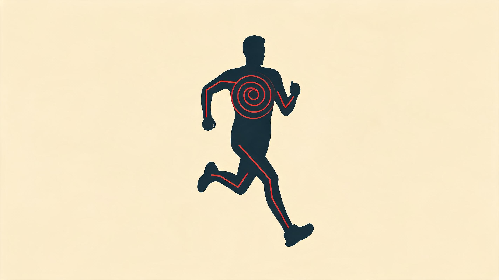
VO₂max 卡在这 · 一分钟能运出去多少氧 · 练它靠少量很狠的间歇
乳酸阈卡在这 · 氧运到了能烧掉多少 · 练它靠大量很慢的跑
运力强不代表卸得快 · 缺一头另一头就浪费
快不到间歇 · 慢不到 Z2 · 灰区里两头都没练到
心肺系统 · 一条线上的两个瓶颈
把耐力说成「心肺好」,其实糊到没法用。这一章只想让你带走一件事:它是两块独立的天花板——心脏管把氧运出去,线粒体管把氧用掉,谁是你的短板,练法完全不同。其余细节都是为了让你认出自己卡在哪。
▾ 本章 6 节 · 点击跳转
耐力不是一件事,是两件:一台泵(心脏)决定你一分钟最多能运出去多少氧,这是 VO₂max;一群小炉子(线粒体)决定运到了能烧掉多少,这是乳酸阈。两块天花板各管各的,练法还相反。大多数人卡在中间那块灰区,两头都没练到——这才是越练越累不见涨的根。
把氧从肺送到腿,我一直觉得最贴切的画面是一条物流线。
肺是码头,氧在这上车。血是货车,心脏是发动机,把一车车氧批量推到全身。到了腿上,真正干活的是肌肉细胞里那些叫线粒体的小炉子——它们是收货的店铺,把氧从车上卸下来,就地烧掉换成力气。一头管运,一头管用,中间靠血这条路连着。这条线哪一段最窄,你的耐力就卡在哪。
所以先记住这一章唯一的骨架:运力(心脏一分钟能推出去多少氧)和卸货(线粒体一分钟能烧掉多少氧)是两件事。运力大不代表卸得快,反过来也一样。下面拆的就是这两段——它们对应你跑表上完全不同的两种课。
5.1一句开场:96 这个数,是天生还是练的
这是心肺生理学吵了几十年的老问题。一个具体的人能帮我们把它讲清楚。
1992 年冬奥前,挪威人给一个 24 岁的越野滑雪选手测 VO₂max。跑步机一路加坡度到力竭,仪器上跳出 96 ml/kg/min——有记录以来人类最高的几个值之一,差不多是普通成年男的三倍。这人叫 Bjørn Dæhlie,后来十年拿了八枚冬奥金牌。问他秘诀,他耸肩:我从小住在森林边上,放学就滑雪,有一颗大心脏,可能是天生的,也可能是练了二十年。
这句话其实就是答案。后来 HERITAGE 那项家族研究给的结论是:VO₂max 大约一半看遗传,另一半看训练,而训练带来的改善在不同人身上能差到 0 到 60%——同一份计划,有人涨得多,有人几乎不动。Dæhlie 是两头都占满了。我们普通人改不了基因那一半,但能改的那一半,值得用对方法。怎么用对,就看你的短板在运力还是卸货。
5.2中央这一段:心脏不是越跳越快,是越装越多
先看运力这一头。心脏一分钟运出去多少血,生理学叫心输出量,公式简单到一句话:每跳射出多少 × 一分钟跳几下。
一分钟跳几下就是心率,不用解释。每跳射出多少叫每搏量,这个量才是训练真正改造的东西。久坐的人一跳射七八十毫升,业余跑者能到一百三四,精英能上两百。差的不是心跳快——恰恰相反,练出来的人静息心率特别慢。我自己常年三十多到五十多。五届环法冠军 Indurain 据说静息能低到二十八。
道理就藏在物流线里:同样一分钟要运这么多氧,你要么派很多趟小货车(跳得快、每趟装得少),要么派几趟大货车(跳得慢、每趟装得满)。练出来的人是后者——车装得满,自然就不用频繁发车。所以静息心率慢不是心脏虚弱,是它一次能干别人好几次的活。
那这台泵的上限卡在哪?卡在每跳能装多少,也就是大货车能造多大。这件事的关键是个反直觉的点:每搏量涨上去,主要不是因为心肌变强了,是因为心脏的腔被撑大了。你长跑那几个月,大量的血一遍遍把左心室这个腔往大里撑,装货的车厢就变大了。所以想扩这台泵,靠的是把车开起来、装满、反复跑——这正是为什么堆跑量比偶尔冲几下短间歇更能把心脏养大。
但车厢不会无限大。它涨到某个点就饱和,之后再想多运,只能靠把车开快——也就是靠拉高心率。下面这张图把这两段拆开了:
这条曲线把一件训练上的事说透了:车厢(蓝线 SV)在你跑到中等强度时就已经撑满,再往上全靠开快车(红线 HR)硬顶。所以低强度慢跑那一段,跑的累计时长就是在养车厢;而真要把这台泵逼到极限、给腔体最大的撑大信号,得用很狠的强度——经典处方是 4 组 4 分钟、各跑到接近最大心率,反复让心脏在装满血的状态下使劲。怎么把这条曲线落到自己跑表的分区上,后面训练那章会写一套能照着做的监测法,这里先不展开。
5.3外周这一段:店铺的卸货工,才是长跑真正的短板
运力讲完了,看另一头。氧坐着车到了腿上,接下来全看店铺收货收得快不快——也就是肌肉里线粒体这群小炉子,一分钟能把多少氧从血里捞出来烧掉。
这一头的差距比你想的大。同样一车氧路过,练得好的人能卸下七八成,久坐的人只卸下不到三成,剩下大半又被车拉走了。差在哪?差在店铺的卸货能力:线粒体的数量、烧氧那套酶的活性、还有把氧从血管搬到细胞的那段路有多短。这些全长在腿里,跟心脏没关系。
而这正是乳酸阈卡住的地方。上一章讲过,乳酸是糖酵解一直在产的中间燃料,身体也一直在烧它;什么时候产得开始比烧得快、血乳酸往上爬,那条线就是乳酸阈。说白了:店铺卸货烧氧的速度,跟不上车队送来的速度时,乳酸就开始堆。所以练乳酸阈,练的从来不是心脏,是把线粒体这群炉子练多、练壮——卸货工多了、手快了,同样的车流就接得住,那条线自然往后挪。怎么练?靠大量低强度、拉长时间的有氧跑,在线粒体生成的那条信号通路上反复点火。慢跑不是凑数,是在给店铺招工。
到这里两块天花板就都摆出来了,可以并排看一眼差在哪:
VO₂max
75ml/kg/min
瓶颈在运力:心脏车厢 + 总血量
主要练法:少量很狠的间歇
能涨多少:遗传 + 训练 30–40%
乳酸阈
88% VO₂max
瓶颈在卸货:线粒体 + 烧氧的酶
主要练法:阈值跑 + 大量 Z2
能涨多少:训练 25–35%
跑步经济性
180ml/kg/km
同配速谁烧的氧少
主要练法:堆跑量 + 慢变量
能涨多少:训练 5–15%
血液总量
13g/kg
运力的另一半:车有多少
主要练法:大跑量 + 高原
能涨多少:训练 5–10%
看清这两块独立,有一个最值钱的推论,也是这一章想让你带走的话——大多数业余跑者卡在中间那块灰区,运力和卸货两头都没真正练到。
这件事是 Seiler 这些人推崇的极化训练背后的道理:八成时间压在很慢的有氧(招卸货工),两成时间放在很狠的间歇(撑大车厢),偏偏拒绝中间那块。为什么拒绝?因为不上不下的中等强度——快不到间歇、慢不到 Z2,心率挂在七八成那块——它既给不了线粒体偏爱的那种低强度持续刺激,也给不了心脏腔体扩大需要的那种最大张力。两头都差一口气。很多人天天的「轻松跑」其实一直挂在这块灰区里,跑得不轻松,又没刺激到任何一头,于是越练越累还不见涨。真正的进步,来自把训练拉到两个极端:大量很慢 + 少量很狠。中间地带,是性能的坟场。
5.4身体怎么响应:四个齿轮,错着时间上链
知道了要练哪两头,还得知道身体多久才给你回报——不然你会在不该放弃的时候放弃。心肺的适应不是一刀切同时发生的,是几样东西错着时间常数,像四个齿轮先后上链。
最先动的是血。开练头一两周,身体让肾少排点水,血浆就多出一两成——车没变多变大,但路上的血先稠了点,每跳能射出去的量立刻涨一截。所以你常听人说「练了一周心率就降了」,降的这几拍几乎全是这个,是血多了,还不是心脏长大了。这阶段血红蛋白浓度会短暂掉一点(血被稀释了),是良性的,别急着补铁。
接着是造血。再过几周,肾分泌的造血信号一直挂在高位,骨髓开始加班造红细胞,全身血红蛋白的总量涨上来——这才是真把货车队扩编了。精英比久坐的人这一项能高出三四成,差距比单看浓度大得多。
最后才轮到腿里的店铺。大概六周往后,工作肌里的毛细血管才开始变密(氧从血到炉子的路变短),线粒体和烧氧的酶才大量积累。这一段最慢,但它是卸货能力的物质基础,也是乳酸阈真正往前挪的窗口。下面这张图把这几样的先后画出来了:
这张图就一条用处:新计划至少给它八周,别四周就嫌没进步换计划。头两周心率降那几拍是假象,只是血多了;真正决定你马拉松后程崩不崩的那群线粒体,六周之后才开始大量长。四周就换,等于把最值钱的那段红利全扔了。所以新周期前一个月,老老实实把跑量八成压在慢跑上,先把血和店铺养起来,别急着堆间歇。
5.5顺手收三笔小账
主线就这两段。再有三件常被问到的事,放在这条物流线里一句话就通,不值得单开一节。
第一,小腿是你的第二台泵。心脏只管把血推出去,血还得自己流回来。回流靠什么?很大一部分靠小腿——每次落地,小腿肌肉一挤,就把腿里的血往心脏方向顶一下,静脉里的单向阀门防止它倒流。180 的步频,等于每分钟多了一百多次「补射」。所以练完腿肿、小腿胀,八成是这台泵没用够;比起冰敷,慢悠悠遛个十来二十分钟对消肿更管用。恢复日要动一动,不是为了练心,是为了让血别淤在腿里。
第二,喘,有时候是腿被断了粮。呼吸肌(主要是膈肌)平时几乎不累,但你冲到极限、它快撑不住时,身体会判断「喘不上气比腿酸危险」,于是紧急把本该流向腿的血挪一部分给呼吸肌。结果就是 5K 最后一公里那种怪感觉:腿明明还能动,却抬不起来。不是腿没劲,是粮被抢走了。这也是为什么呼吸肌也能练——把它的耐力练上去,这个抢粮的时刻就往后推,后程能多撑一会。
第三,高原是高级武器,不是新手药丸。住在两千多米的地方,空气稀薄,身体被逼着多造红细胞——等于免费给车队扩编。但有个坑:海拔高了你跑不快,训练强度反而掉。所以顶级选手玩的是「住高练低」——睡在高处占低氧的便宜,下到低处保住训练强度。这套对基础扎实的人有用,对跑量还没堆起来的人,上去蹲三周大概率只是花钱买疲劳。
5.6把这条物流线接到你的跑表上
两段讲完了,落到能动手的一件事:这条线上,有一个指标比任何花哨数据都便宜、都灵——静息心率。
它便宜在哪?不用上跑步机、不用抽血,晨起躺着量一分钟就有。它灵在哪?它直接反映你这台泵的效率:车装得越满,同样的运量就越不用频繁发车,静息心率自然往下走。所以它是训练有没有起效最快的内部仪表。注意是静息心率,不是最大心率——最大心率几乎练不动,每过一年还往下退一两拍,那是窦房结天生的红线,别拿它当进步指标。
怎么用:晨醒后别下床、别看手机,躺着量一分钟,连量七天取中位数(不取平均,躲开某天没睡好的异常值),记下来当基线。一个月后再量。降了五到八拍,说明这台泵在变强,中央那一头练对了;要是不降反升,而且连着三天往上走,那是过训或者睡眠债的警报,该减量了,不是该咬牙。
设一位跑者:35 岁、78 公斤,过去半年没系统练。今天起每周四练——三次慢跑加一次间歇。这十二周,这条物流线会照着上面那张图,一段段松开。
头两周,血先多。肾少排点水,血浆涨一两成,每跳射得更满,静息心率从七十掉到六十出头,同配速下心率明显低了几拍。这是血变多,不是心脏长大——血红蛋白浓度短暂下降是稀释,别补铁。
四到八周,车队扩编。骨髓加速造红细胞,全身血红蛋白总量涨起来;同时间歇反复把每搏量顶到高位,左心室那个腔慢慢被撑大一两毫米。静息心率降到六十,同样的慢跑跑起来心率稳多了。
八到十二周,店铺招工。中央那头红利吃得差不多,接力交给腿里:毛细血管变密,线粒体和酶活性涨上来。外在表现最实在——乳酸阈配速比刚开始快了一二十秒每公里,同样的慢跑跑完第二天恢复明显更快。
这十二周最大的坑在第六周前后:那时血带来的便宜已经吃完,腿里的好处还没显出来,人最容易因为「不涨了」起换计划的念头。回头看,八到十二周才是乳酸阈真正往前掉的窗口——四周就放弃,等于把后半段全扔了。我自己备上马盯的也是这条线:静息心率用 Coros 每天晨起记着,一个月拉一次曲线;比起去追那些花哨指标,盯它降不降,对冲 sub-3 这件事实在得多。
这一章就到这。心脏怎么把氧运出去、线粒体怎么把氧用掉,是耐力的两块独立天花板——其余那些腔室、瓣膜、公式的细枝末节,知道得再多,也改不了你该练哪一头。剩下的接力会落在别处:线粒体到底怎么把氧、底物、ADP 拼成 ATP,下一章讲;怎么把这两头排进一周的课表、把静息心率这套监测落地,训练那章讲。但心肺这一章你只要带走一句就够本——
耐力不是「心肺好」一件事,是运力和卸货两件事;你大概率不是练得不够,是两头都卡在中间那块灰区,谁也没真练到。
心肺系统要点
- Fick 方程:VO2 = SV × HR × (a-vO2 diff)。中央 (心) ~75% + 外周 (肌肉摄氧) ~25%,需要不同训练手段。
- 运动员心脏离心性肥大:腔扩大、壁不显著厚,与病理 HCM 在形态对称性和可逆性上有本质区别。
- 训练适应时间序列:1-2 周血浆量扩张 → 4-8 周红细胞质量 → 6-12 周毛细血管密度。Hbmass 是耐力金标准。
- 呼吸-步态耦合:常见 2:1 或 3:1,精英 3:1/4:1;呼吸肌占总 VO2 10-15%,高强度时会偷四肢血流。
- VO2 动力学:精英 τ = 25-40s,业余 40-60s;τ 慢 = 启动慢 = 间歇耐受差,可训练。
主要参考:[Bassett & Howley 2000][Saltin & Calbet 2006][Lundby 2017 · Acta Physiol][Levine 2008 · J Appl Physiol][Joyner & Coyle 2008][Tanaka 2001][Morganroth 1975][Dempsey 1996][Wilmore & Costill 2008]
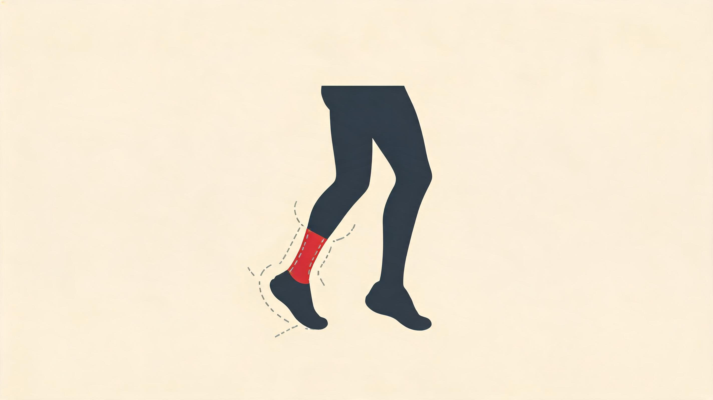
最快那座 · 几周就跟上你 · 也最爱骗你「还能加」
慢得多 · 没声音不喊累 · 跟腱髌腱伤都从这道差里来
最慢那座 · 修一轮要几个月 · 应力骨折栽在修复窗口
别拿快钟的速度逼慢钟 · 跑量增幅给慢组织留追赶时间
肌、腱、骨,走得不是同一个钟
这一章只讲一件事:你的身体不是一座钟,是好几座走得快慢不同的钟。肌肉几周就跟上你,肌腱按月、骨按季——你的伤,几乎全长在这个时间差里。下面所有的纤维、弹簧、骨头,都是为了让你看懂这一点。
▾ 本章 15 节 · 点击跳转
肌肉 4-6 周就跟上你,肌腱要半年到一年,骨按季度算。这几座钟不同步——你心肺和腿都喊「能加量」的时候,跟腱和胫骨还在原地。跑者绝大多数过用伤,就长在这道时间差里。
先把这一章要讲的那道差,摆在你面前。
跑了三个月,你大概会有这种体感:呼吸顺了,腿不那么累了,配速悄悄往前挪。于是顺理成章——加量。这一步几乎人人都走,也几乎是所有过用伤的起点。
因为你感觉到的「变强」,是你身上跑得最快的那几座钟报的信:神经、心肺、肌肉,几周就响应。而跟腱、骨头这几座钟,慢得多,这会儿还没动。它们没有声音,不会喊累,等到它们出声,往往已经是伤。这一章就讲这几座钟各自走多快,以及怎么按最慢那座的节奏来排你的跑量。
6.1先认认你腿里那几种零件
要讲清楚每座钟走多快,得先认认表盘里的零件。骨骼肌不是一块均匀的「肉」,是一块马赛克——同一块股四头里,有偏耐力的纤维,有偏爆发的,还有一堆夹在中间的。它们各干各的活,也决定了训练能改什么、改不了什么。
按里头那根发动机分子(肌球蛋白重链,MHC),人的肌纤维大致三型,我把它们想成三种性子的工人。
耐力老黄牛
红色、慢、几乎不知疲倦。线粒体多、毛细血管密,靠有氧吃饭。出力不大,但你跑一上午它也不喊累。长跑、马拉松、超马,主要是它在干。
肌骨适应要点
- 肌纤维募集 size principle:慢肌先,快肌后;跑步主要 I + IIa,长跑后段被迫征召 IIx (慢成分 VO2 来源)。
- 肌腱 vs 肌肉的时间错配:肌肉适应 4-6 周,肌腱 6-12 月——突然加量是跟腱炎、髌腱炎的力学根源。
- 跑步保护膝盖,不是损伤:Alentorn-Geli 2017 综述,跑者膝 OA 3.5% vs 久坐 10.2%。U 型曲线,极量才上升。
- DOMS 不是乳酸引起:离心收缩造成微撕裂 + Ca²⁺ 紊乱 + 炎症,乳酸在运动后 1 小时已清除。
- 抗肌少症的双引擎:跑步 (有氧) + 力量训练 (含爆发力) 才能完整对抗 60+ 岁后 II 型纤维的选择性丢失。
→ 长跑、马拉松、超马
两栖中间派
粉红、中等耐力。既能有氧又能无氧,是最能被训练捏动的那种——常年耐力练它会往老黄牛那头靠,常年冲刺练它会往爆发那头偏。5K 到 10K、阈值课,主要靠它。
→ 5K-10K、混合训练
爆发暴脾气
白色、极快、一会儿就累趴。力气大,但撑不过半分钟。短跑、起跑、终点冲刺是它的舞台。你慢跑时它基本在睡觉。
→ 100m-400m、起跑、终冲
当然纤维不总是「纯」的——约三到四成的纤维是混血,卡在两型之间,这些就是能被训练拨来拨去的中间态。先记住这点,下面讲「能不能改型」会用到。
什么人长什么纤维
这事几代人(Costill、Saltin、Trappe)在跑者腿上取样测过,图谱相当一致:精英长跑选手腿里,老黄牛常占七到九成;精英短跑选手反过来,爆发型占七八成。普通人大致一半一半,但个体差得很开——天生偏长跑的和天生偏短跑的,可能差出快一倍。
纤维比例这事,基因占大头——双胞胎研究里,同卵双胞胎的纤维比例几乎一个样,异卵的差很多。常年耐力训练能把爆发型几乎全部拨成中间派,中间派再往老黄牛那头挪一小幅,但完全变过去基本不发生。所以有句话听着残酷却是真的:不是练成了马拉松型,是马拉松型的人才扛得住马拉松训练。这也是为什么这一章不教你「改造天赋」,只教你别让现有的零件受伤。
6.2你没法命令身体「只用快肌」
一块肌肉里这么多种工人,谁先上工不是你说了算。Henneman 1965 年讲清楚了一条铁律:身体永远从最省力的工人开始叫——小的先上,大的最后。
这个顺序简单说就是:走路慢跑,只叫老黄牛;配速提上去,中间派补位;只有你真拼命快跑或大力一跳,爆发型那批才被叫醒。
关键在于,这个「先小后大」的顺序你反转不了。你没法命令身体「今天只派快肌、用慢配速跑」,生理上做不到。想练到爆发型,只有两条路:要么真的跑得够快(快到老黄牛和中间派忙不过来),要么跑到 30 公里以后——前面那两批的糖原烧光了,身体被迫把爆发型硬拉出来顶班。后面这一种,就是马拉松撞墙在肌肉层面的样子。一句话:想练快肌,没有偷懒的捷径,你必须真的跑快或跳高。
反过来这条铁律也给了个提醒:要是你只跑轻松慢跑,等于天天只用老黄牛上工,中间派和爆发型长期闲着,几年下来就萎缩、退化,冲刺能力崩。所以每周留一两次真正的快——短冲、间歇,只占总跑量一成都不到——就是为了别让那批快肌睡死过去。这也是 80/20 训练法里那 20% 高强度的意义。
6.3纤维能改多少型,一句话
纤维能不能互相变,是争了几十年的老问题。但对你只需要记一句:能拨动的只有中间那一档,两头基本焊死。
爆发型变中间派,容易又快——任何像样的耐力训练,几周就能看到。中间派往老黄牛那头挪,只能挪一点点,而且学界还在吵到底是练出来的、还是「本来就慢的人才坚持得下来」。老黄牛反向变快?只在脊髓损伤这种神经断了的极端情况下见过,正常训练驱动不了。决定往哪边微调的,是你怎么练(慢长 vs 快猛),不是你练了多少。说到底,天赋划下的边界你挪不了几寸——这又把话绕回这一章的本分:与其妄想改造零件,不如照顾好它们别坏。
6.4肌肉最大的力,出在被拉长那一下
肌肉不是开关,不是「用力 / 不用力」两档。它能产多大力,看它当下的状态——其中最反直觉的一条,藏着跑步伤病的一大半答案。
先说个一句话就懂的:肌肉缩得越快,反而越没劲。你想想搬重物——慢慢举得起来的东西,要你「啪」地一下快速举,就举不动了。这是 Hill 1938 年用方程锁死的规律。
但真正反直觉的是另一头:肌肉被外力拉长的时候,它能扛的力反而最大——比静止使劲还高出五成到八成。这就是离心收缩。
这一条为什么对跑者性命攸关?因为跑步的着地,几乎全是离心。脚一落地,大腿前侧、小腿这些肌肉在几十毫秒里被体重硬生生拉长,却还得咬住产生大力去刹住身体。这是腿最吃劲、也最容易受伤的一瞬。下坡跑为什么腿比上坡还酸?就因为它把这个「被拉长还得使劲」放大了。也正因如此,后面治跟腱、治髌腱,最管用的全是离心训练——专练肌肉「被拉长还扛得住」的这一面。
6.5你的每条腿,其实是一根弹簧
跑步不是一脚一脚「踩地」那么费劲。每一步,你的腿都像弹簧一样先被压扁、再弹开——着地时被拉长、把能量存进去,推离时再把它弹还给你。这是哺乳动物的腿能跑这么省的核心机关。
这根弹簧分三拍:落地时被压(肌肉和肌腱被拉长,存能);中间极短的一个停顿(短到不及一眨眼的零头);然后弹开(把存的能量加上肌肉自己使的劲,一起推你向前)。中间那个停顿越短,弹得越脆,能量漏得越少——精英和业余的差距,很多就藏在这一拍上。
这么弹一下,比老老实实「主动收缩」推地省得多:功率高出近一倍,耗的能量反而更少。哪些肌群在每一步里扮弹簧,看下面这张表。
| 肌群 | 着地(离心) | 过渡 | 推离(同心) |
|---|---|---|---|
| 股四头肌(尤其 VL 股外侧) | 大幅离心(膝屈) | ~30 ms | 等长 / 小幅同心 |
| 腘绳肌(BF/ST/SM) | 初触地前主动离心(刹车小腿) | ~20 ms | 同心(髋伸 + 屈膝末段) |
| 小腿三头肌 + 跟腱 | 大幅离心(踝背屈) | ~40 ms | 同心(踝跖屈) |
| 臀大肌 | 髋屈 → 等长 | -- | 同心(髋伸推进) |
| 髂腰肌 | 等长 → 略离心(髋伸末段) | -- | 同心(摆动腿屈髋) |
这里头跟腱是最大那根弹簧:每一步它存了又还的能量,差不多顶你这一步总消耗的三到五成——也就是说,你跑起来有三分之一到一半的功,是这根弹簧白送的,不花肌肉的钱。但「白送」有条件:那一压一弹的节奏得对、弹簧本身得够硬。步子迈太大、步频太低、跟腱发软,这笔免费的功就漏掉了。怎么把它捡回来,Ch4 弹性能那节细说;这里你只要记住一件事——这根免费的弹簧,正是下面讲跟腱时,为什么伤它就这么伤的原因。
6.6这才是正题:你身上那几座钟,各走各的
前面认完零件,现在把这一章的正题摆上来。「开始跑步」这一下,在你身上同时拨动了好几座钟——它们起步的早晚、走的快慢全不一样。下面这张图,就是这几座钟的全家福。看懂它,你才知道该听哪座钟来排跑量。
读这张图,记住一个顺序就够:醒得越早的越靠不住,醒得越晚的越要命。
最先醒的是神经(头几周)。开始跑的前几周力量涨得最猛,但你的肌肉根本还没变粗——涨的全是神经在重新调度,把原有的肌肉用得更顺。新手「突飞猛进」就是这么来的,可惜这进步是张空头支票:它让你觉得「还能跑更多」,身体其实还没真的变强。
接着是肌肉这一摊(几周到几个月)。毛细血管变密、线粒体变多变好——这才是真正的「心肺进步」开始落地。值得说一句:耐力训练几乎不让腿变粗,所以纯跑步的人小腿不会练成肌肉块;想补力量得另加深蹲硬拉。这一层 Andersen 那批经典研究八周就能测到。
到这里,醒着的全是快钟:神经、心肺、肌肉,几周到几个月,都点头说「行,加量吧」。问题就出在——慢的那两座钟,这会儿一声不吭。
假设有个跑者 28 岁,过去几年基本只走路,现在开始跑,每周 3 次、每次半小时多的轻松跑。第一天跑完气喘、腿微酸,他觉得「还行」。他看不到的是,身体里好几座钟正错开了起步——一场齿轮没对齐的接力。
第 1 周:神经先醒。动作变协调了,力量看着涨了一成多。但肌肉一点没变粗——这是张空头支票。
第 2 周:血量先到。血浆涨上来,每跳泵出的血多了,静息心率降几下。他以为心肺变好了,其实大半只是水多了。
第 4 周:毛细血管、线粒体才真正开建。到这儿,「心肺进步」才算落到实处,之前都是表面功夫。
第 6 周:肌肉微调,跟腱和骨还在睡。肌纤维刚开始有点变化;而跟腱的适应连零头都没走完,骨头更是毫无反应——他的胫骨此刻只是在默默攒微损伤,没有任何信号给他。
于是 6 周后,他觉得自己神勇,一咬牙把月跑量翻倍——这正是跑者受伤高峰的那扇窗。神经、心肺、肌肉都点了头,跟腱、足底、胫骨在无声呐喊。头几个月的跑量,每周别加超过 5-8%,把那 10% 的老规矩再收一收,就是给慢钟一点追赶的时间。
6.7跑完第二天腿酸,跟乳酸没关系
「昨天跑了 20K,今天大腿都不是自己的」——这种隔了一两天才冒出来的酸痛,叫 DOMS。流传最广的说法是「乳酸堆积」,这是错的。乳酸半小时内就清得差不多了,而这种酸要一两天后才到顶。时间都对不上,根本不是它。
真正在痛的,是上一节那件事的账单:跑步着地全是离心,肌纤维被反复「拉长着使劲」,落下一堆微小的撕裂——身体随后派炎症去清理修补,炎症一上来才把那些小坑放大成「痛」的警报。所以痛的不是乳酸,是你腿上那些被拉伤的小口子在被打扫。下坡跑、半马后段、第一次跳箱,这种超出平时离心负荷的刺激,基本必酸。冰浴按摩能让你感觉没那么痛,但里头修好仍要四到七天——别把「不痛了」当成「好了」。
有意思的是身体记仇也长记性:同样的折腾,两周内再来一次,第二次酸痛就减半,这个保护能管六到九周。所以真要防比赛日腿崩,聪明做法是赛前四到六周故意安排一次受控的离心刺激(一趟中等下坡、一次跳跃),提前给比赛日上个保护。你上一次主动安排离心刺激,是什么时候?想不起来,那这层保护多半已经过期了。
6.8肌腱这座钟,慢肌肉整整一档
肌肉几周就跟上你,肌腱却要按月、按季才回应。这两座钟错开的那段距离,就是跑者过用伤最深的力学根源——这一节是整章的核。
肌腱为什么这么慢?一句话:它几乎没有血供。肌肉里血管密布,养料随到随用;肌腱中心却像一根晒干的橡皮筋,养分主要靠慢慢渗进去。没有血,就没有快速施工的物料——所以它修得慢、长得也慢。你跑量一涨,肌肉那边热火朝天地适应,肌腱这边还在慢悠悠地搬砖。
它也不是完全不变。常年跑步会让肌腱悄悄变硬、变粗一点,弹簧效率更高——但幅度比肌肉小得多,时间也长得多。这一快一慢的差,排成下面这张表,是全章最该盯住的一张:
| 组织 | 明显适应起点 | 主要适应窗 | 完全成熟 |
|---|---|---|---|
| 神经驱动 | 2-3 天 | 2-6 周 | 4-6 周 |
| 毛细血管 / 线粒体 | 2 周 | 4-12 周 | 6-12 月 |
| 肌纤维 CSA | 3-4 周 | 4 月-1 年 | 2-3 年 |
| 肌腱 | 3-4 月 | 6-12 月 | 2-5 年 |
| 骨密度 BMD | 6-12 月 | 1-3 年 | 5-10 年 |
| 软骨 | 6 月+ | 1-3 年 | 不完全适应 |
这张表把那道差摊开了:跑到 8 周左右,你的耐力、力量、跑姿协调感都明显进步,多数人到这就觉得「可以加量了」。但同一时刻,肌腱才走完总适应的两成不到,骨密度甚至还没起步。每一次跑量大跃升,肌肉和心肺点头,肌腱和骨还没准备好——跟腱炎、足底筋膜炎、应力骨折,几乎全长在这扇「腿跑得动、结缔组织跟不上」的窗口里。「每周跑量别加超过 10%」这条老经验,翻译过来就一句:等等你的肌腱和骨。
跟腱是这里头最该敬畏的一根。它是人体最大最强的肌腱,也是上一节那根最大的弹簧——精英长跑选手的跟腱比业余的明显更粗,弹簧储能上限也更高。但它同时是跑者最爱出毛病的部位之一,跟腱病在跑步损伤里占了不小一块。栽进去的诱因翻来覆去就那几样:跑量骤增、突然改前掌落地却没练小腿、跑鞋后跟高度一下子变太多、坡道练过头。
而它的脾气也很拧:静态拉伸救不了它(被动硬拉反而可能拉出新的小撕裂,拉伸该拉的是肌肉);真正管用的是慢速离心——慢慢「下放」让它在被拉长里受控地承重,这正是后面要讲的 Alfredson 那套。记住一条:跟腱不吃「拉松」,只吃「受控地承重」。
6.9骨是活的,而且它的钟最慢
「骨是活的」不是修辞。Wolff 1892 年就讲明白:骨会顺着你给它的机械刺激重新长。跑步是给骨的强刺激,但它是这几座钟里走得最慢的一座——慢到肌肉跑完一整轮适应,它才刚睡醒。
骨内部一直有两拨工人在拉锯:一拨拆旧骨,一拨砌新骨。你给它的冲击够大,砌的就压过拆的,骨变密;长期不给冲击(久坐、卧床、游泳骑行这种没冲击的运动),拆的压过砌的,骨一年年变薄。用进废退,跟肌肉一个道理,只是它反应慢得多。
这里有个特别反直觉、又特别实用的细节:骨听的不是「你压了多重」,是「你压得多快」。同样的力,来得越猛、越脆,对骨的刺激越强。所以跳绳、短跑、跳跃这种「砰」的一下,比闷头慢跑更能把骨喂壮;而一味堆慢跑量(又慢又多),刺激反而平淡,堆过了头甚至会让骨变薄——这也是为什么大跑量的精英长跑选手,骨密度有时还不如适量跑的人。
把骨密度和跑量画在一起,是一条U 形曲线:不跑,骨没刺激,密度低;适量跑,密度升到最高;跑量过大又叠上吃不够,密度反而掉下来。两头都不好,中间才是甜区。
6.10应力骨折,栽在修复窗口而非跑量
应力骨折不是摔出来的,是骨自己没修过来——微损伤攒得比修得快,小裂缝慢慢连成一道真骨折。它占跑步损伤里不小一块,女性发生率明显高于男性。
这里有句话最该记住:同样跑 60 公里,A 骨折了 B 没事,差别从来不在那 60 公里本身,在 60 公里之外的修复窗口里。骨修一轮要好几个月,期间它要三样东西——吃够(能量、钙、维 D、蛋白)、有时间、有不被打断的节奏。连着上强度不留缝,它就一直拆得比砌得多。很多人把「我又没跑多少」当挡箭牌,真相往往是「我没让骨把上一轮修完」。能量吃不吃得够,是应力骨折藏得最深的第一变量——尤其女性,跑量加大又赶上月经紊乱,是经典的危险三连。
6.11「跑步伤膝」,流行病学正好反过来
膝盖里那层软骨没血管、没神经,自己几乎不会修——所以它对「用」的反应,跟你的直觉完全相反:不是越省越好,而是越不用越坏。
软骨靠什么吃饭?靠你动。它没有血管送养料,全靠关节一压一松像泵一样把营养挤进挤出——压下去挤出废水,松开来吸回新鲜养分。这是它唯一的进食方式。所以反过来推就很直接:不动,等于让软骨饿死。卧床、打石膏、坐轮椅的人,关节软骨会萎缩,这是临床事实,不是理论。
「跑步磨膝盖」大概是关于健康最普遍的误解,而证据整个反过来。一份纳入十几项研究、十一万多人次的 meta 分析,把不同人群的膝/髋关节炎患病率摆在一起:
看明白没?久坐的人关节炎最多,业余跑者反而最少,只有跑到精英那种极端跑量才又回升——又是一条 U 形曲线:低端因为没刺激,高端因为过量。MRI 直接拍过:规律跑者的膝软骨比久坐者还厚一点,质量也更好,不是「磨薄了」。道理和软骨那张嘴完全自洽——不刺激就退化,适度刺激就长厚,过度才损伤超过修复。所以「跑步伤膝」准确的写法是「跑太多 + 跑姿烂 + 不修复 = 伤膝」;适量好好跑,反过来是护膝。下次有人跟你说跑步伤膝,你可以回他一句:真正伤膝的,是他坐着说这话的那把椅子。
6.12脚底还藏着第二根弹簧
讲完跟腱那根大弹簧,你脚底其实还埋着第二根——足底筋膜。它和跟腱一样属于「免费储能」的一员,也和跟腱一样,会因为同一个原因受伤。
足底筋膜是从脚跟绷到脚掌前端的一条张力带。每一步着地它被拉长存能、推离时回弹,是跟腱之外脚上最大的一根弹簧。所以足底筋膜炎说穿了和跟腱病是同一种病:反复一压一弹,修复追不上微损伤的累积——又是慢组织被快节奏逼出来的伤。包住肌肉的那张筋膜网、连接骨头的韧带,也都是同类的慢结缔组织,逻辑一样,这里不展开了。
6.13跑步不伤腰,反而护腰
「跑步伤腰」是另一条流行误解。和膝盖那条一样,事实正好反过来——跑步对椎间盘是有益的载荷,真正伤腰的还是椅子。
椎间盘结构
每个椎间盘由外周的纤维环(多层胶原斜向编织)和中央的髓核(富含蛋白多糖和水的胶状物)组成。椎间盘内压随姿势变化,坐姿(尤其前倾坐姿)的椎间盘内压可达直立的 1.5-2 倍。
椎间盘成年后无血供,营养全靠相邻椎体软骨终板扩散,机制和关节软骨的「载荷-减压泵」一样。所以长期不运动等于椎间盘营养差;长期久坐则是椎间盘内压持续高、单向扩散受阻——两头夹击。
Belavy 团队 2017 年拿七十多个长期跑者和三十个久坐者做了椎间盘的 MRI,结果一边倒:跑者的腰椎间盘含水更足、质量更好、也更高(没脱水萎缩),而且跑得越多这好处越明显。道理和软骨一模一样——椎间盘成年后也没了血供,全靠一压一松把养分泵进去,久坐就是让它长期被压着、又喂不饱。
这里得老实说一个局限:Belavy 的对照组是「久坐者」,不是「也健身但不跑的人」,所以这差距里有一部分其实是「久坐之恶」,未必全是「跑步之善」。即便打了这个折,结论也够翻案了:椎间盘要的是一压一松的循环载荷,最怕的是被椅子一直压着不动。
6.14人老,先丢的是快肌
从 30 岁起,你的肌肉就在悄悄流失,每年丢一点;过了五十加速;到七十五岁以后,丢得最狠的偏偏是快肌——力量和爆发力断崖下跌。这就是肌少症,直接连着老人摔倒、骨折、失能。
关键在于老化挑食:它专挑快肌下手。而你前面已经知道,光跑步几乎不练快肌——所以纯跑步对抗肌少症,是方向对了,却盯错了纤维。一个常见的怪现象就是这么来的:有人六十岁还能跑马拉松,起身爬楼却喘——他练了一辈子耐力(老黄牛),没人管那批快肌,被时间一点点磨没了。要保住快肌,目前证据最硬的方案就一句:跑步之外,每周加两三次力量训练(深蹲、硬拉、提踵这类大动作),配上吃够蛋白。这件事越早开始越好——肌少症不是非来不可的命,是能被训练大幅推迟的过程。
6.15小结:别用快钟的速度,逼慢钟
回到开头那句话:你身上不是一座钟,是好几座走得快慢不同的钟。这一章绕了一大圈,讲到底就为让你信这一件事——并照着它排你的跑量。
把全章收成一句话:跑步训练真正的瓶颈,几乎从来不是你的心肺,是你的结缔组织。所有「跑量一加就受伤」的故事,本质都一样——你拿肌肉那座快钟的速度,去逼跟腱、骨头那两座慢钟。它们没声音,不会喊累,等出声就是伤。聪明的跑者,按全身最慢那座钟的节奏排周期,不按最快那座。
我全马 PR 3:20,目标推进 sub-3。整章读下来,对我最要命的不是怎么把发动机练大,是怎么别在加量时把跟腱和胫骨逼坏——这两座慢钟,正是我冲 sub-3 路上最可能让我前功尽弃的地方。
设想一个我很怕踩中的典型坑:一个跑者稳定跑了一年、周跑量 30 公里,为备半马,四周内硬加到 60 公里。第三周开始,跟腱晨起发紧,跑前得先走五分钟才「暖得开」。这就是肌腱时间错配的标准剧本——心肺、肌肉四周就追上了两倍跑量,他自我感觉「还能跑更多」;可跟腱要半年到一年,这会儿连日常磨损都还没修平,微撕裂在悄悄攒。主观感觉在撒谎:肺和腿都说 OK,跟腱在无声抗议,而它早期就「晨起紧」这一个微弱信号。等跑起来都疼,多半已是腱病,得养三到六个月。
所以我给自己定了两条死规矩。一是跑量增幅压在每周 5% 以内——那条人尽皆知的 10% 法则,对盯着 sub-3、本就在高位加量的我,太激进了。二是把 Coros 当那座慢钟的耳朵:除了看配速心率,我盯每周跑量的环比涨幅,也留意晨起跟腱那点紧绷感——它一冒头,我就立刻砍量 30%、把间歇和上坡停掉,只留轻松跑,再补上慢速提踵的离心练习,给跟腱一个追赶的窗口。慢钟不会主动报警,我得替它把表看着。
下一章离开组织,进系统——把这些组织级的适应,拢到 VO₂max、阈值、跑步经济性这几个整体指标上去,看不同强度的训练,怎么一刀一刀雕出你的成绩。
纤维型
遗传主导,训练微调 IIx↔IIa
拉长-缩短周期
跟腱储能,免费 1/3 推进功
肌腱时间错配
4-6 周肌肉 vs 6-12 月肌腱
骨与软骨
载荷需要,U 形受益曲线
参考:Costill 1976 / Saltin 1977 / Henneman 1965 / Hill 1938 / Trappe 2015 / Andersen & Henriksson 1977 / Magnusson & Kjaer 2003 / Alfredson 1998 / Wolff 1892 / Alentorn-Geli 2017 / Belavy 2017 / Aagaard 2010 / Hamill & Gruber 2014 / Lieberman 2010 / Huijing 1999 / Roos & Dahlberg 2005
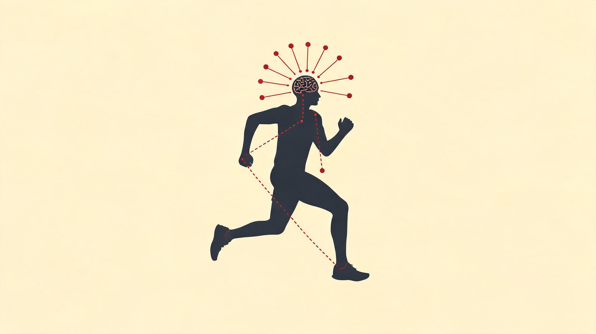
前扣带皮层提前关闸 · 先于肌肉投降 · Noakes 中枢调节器
叠加抽搐测出来的肌肉余量 · 距离越长,大脑扣得越多
脑力先累一场,腿就早崩 15% · Marcora 实验,外周指标全没动
咖啡因、剩余距离、心理训练——三个都不在腿上
中枢调控 · 喊停的那个人不在你腿里
把「跑不动」当成肌肉用完了,是一百年的误会。这一章只想让你带走一件事:决定你还能撑多久的,不是腿里的乳酸,是大脑里那个一直盯着仪表、随时准备收帆的安全官。其余的脊髓、运动单元、神经递质,都是为了让你看懂这个判决怎么下出来的。
▾ 本章 9 节 · 点击跳转
你的大脑是条长跑船上谨慎的老船长。腿是水手,真能再使劲;但风浪一大,船长会在桅杆断之前就下令收帆,把你叫停。所以「跑不动」从来不是肌肉的化学崩溃,是船长替你做的保命决定——他的职责是把船开回港,不是证明桅杆的极限。这一章讲的,就是这场你和船长之间的谈判。
这章绕不开 Tim Noakes。1990 年代末他在开普敦大学问了一个让整个运动生理学界尴尬的问题:如果疲劳真的是「乳酸堆积、ATP 耗竭」那么纯化学,人为什么力竭之后还能立刻加速冲线?他翻马拉松和铁人三项的录像,看到的是同一种画面——运动员喊着不行了,看到终点线却能突然换挡。
这个悖论挑战了 Hill 1925 年以来统治了 70 年的「灾难性疲劳」模型。Noakes 2001 年正式提出中枢调节器(Central Governor)假说:大脑前扣带皮层把化学、机械、心理、经验四路信号实时整合,主动下调肌肉的招募,防身体真崩。你「跑不动」,是船长决定你不该再硬撑了。这个理论刚提出时被传统派围攻「软科学、不可证伪」,但过去 20 年的影像和电生理证据越来越站它这边。这一章就顺着这条线往下走——船怎么开(脊髓和运动单元),船长凭什么收帆(疲劳的两个出口),收帆的钮在哪(咖啡因、剩余距离、心理训练)。
7.1一句话从念头到落地,要穿过五层
「我要再跑一公里」这句话从念头到迈出去,要穿过五层组织。先把这条船的舱室认全,后面所有的适应、疲劳、收帆都发生在它上面。
最高层是大脑皮层,管意图和决策。初级运动皮层(M1)在中央前回,每一小块大致对应一块肌肉,跑步的下肢指令源头其实藏在两半球的深处;辅助运动区(SMA)专管动作序列,把「跨步、推离、摆腿」烧成一套程序,省得你每一步重新想;前运动皮层(PMC)处理躲坑、在人群里调步幅这类情境反应;顶叶整合空间感,告诉你「身体在哪、地面在哪」。再下一层是皮质下:基底节管「启动开关」和「自动化」——你不必每步告诉脚怎么落地,正是它把整套程序烧成了不用意识管的回路(帕金森病就是这套机制失灵,患者连站起来都难);丘脑是中转站;小脑是误差校正中心,它不发起动作,但每个动作都要经它事后审核,把「预测的」和「实际感觉到的」一比,差值送回去,下一步就微调一次——所以小脑坏了的人能「想」出动作,精度却全无。
再往下是脑干,管姿势和平衡;最低层是脊髓,这里有一台完整的自动节律机,下一节专讲。最终输出端是α 运动神经元,胞体在脊髓前角,轴突伸到肌肉,在神经肌肉接头点火,接上 Ch3 讲过的肌纤维收缩。本章只关心「信号怎么走到这一步」。
7.2脊髓里那台自动驾驶
如果跑步每一步都要皮层发指令,你不可能边跑边想问题。事实上稳态步态根本不用皮层介入——节律的源头在脊髓本身。这就是船长能放手让船自己开的原因。
Sherrington 1910 年做过一个当时极有争议的实验:他把猫的脑干在中脑水平切断,只留脊髓和外周联系,把这只「没脑」的猫放在跑步带上。结果只要给一点电刺激,四肢仍能协调地迈步,屈肌和伸肌按正常相位交替。这说明步态节律的核心在脊髓——不需要皮层、不需要小脑、不需要意识。这套机制后来叫中央模式发生器(Central Pattern Generator,CPG)[Sherrington 1910]。它的解剖基础是脊髓腰膨大里一群互相抑制又互相兴奋的中间神经元:一组激活屈肌、一组激活伸肌,一边响起另一边就沉默,响着的那边累了、抑制松开,另一边接管,来回往复，产生 1.5–3 Hz 的节律——和跑步步频严丝合缝。
所以大脑只发「开始」和「停止」两条指令,中间的踏步全由脊髓自己维持。这就是你能边跑边听播客、边背单词的神经基础——稳态跑步时运动皮层的代谢需求只比静息高 5–8%,几乎和思考重叠。新手跑得「脑子累」,是皮层介入太多;熟练之后皮层卸载、CPG 接管,这就是跑步「自动化」最直接的神经事实。值得留一句保留:人类的 CPG 比啮齿动物更受皮层节制,到底自主到什么程度,学界至今没有定论。
7.3肌肉不是一块,是几百个独立小马达
船长收帆,收的到底是什么?要先知道肌肉在神经眼里长什么样:不是一整块发力的组织,是几百到上千个独立可控的运动单元。「出多大力」在神经层面就一句话——多少个单元在以多快的频率放电。
一个运动单元(motor unit)就是一个 α 运动神经元加上它支配的全部肌纤维。这是肌肉最小的可控单位:神经元一放电,它管的肌纤维全体同步收缩;而单条肌纤维不能被部分激活,要么开要么关。同一块肌肉里的单元大致分三类,跟肌纤维类型一一对应——这张表后面反复用得到:
| 类型 | 纤维类型 | 放电频率 | 疲劳性 | 跑步角色 |
|---|---|---|---|---|
| S (Slow) | I 型(慢肌) | 5–15 Hz | 极抗疲劳 | 有氧巡航 · 维持姿势 |
| FR (Fast Resistant) | IIa 型 | 15–40 Hz | 中抗疲劳 | 中高速持续 · 节奏跑 |
| FF (Fast Fatigable) | IIx 型 | 30–60+ Hz | 易疲劳 | 冲刺 · 末段加速 |
关键在派谁出场的顺序。神经元胞体越小,越容易兴奋,所以招募几乎是物理决定的:先 S、再 FR、最后 FF——这就是 Henneman 1957 年的大小原则[Henneman 1957]。慢跑只叫得动小单元,代谢省，能撑几小时;速度上到节奏跑,FR 加入；接近全力时 FF 才上场,只能撑几十秒。这条顺序不可逆——你想练出末段那一脚 FF,只能靠冲刺、间歇、重负荷把它逼出来。慢跑一百公里也叫不到 IIx,大小原则不允许你跳过队伍直接拉队尾的人出来。记住这套「从小到大、逐级点名」,因为船长收帆,收的就是从大单元开始一级一级把人遣回去。
7.4力竭有两个出口:肌肉真没了,还是船长关了闸
「我跑不动了」这句话,在不同距离里物理含义完全不同。短跑里肌肉是真的用完了;马拉松里肌肉还有余量,是船长主动把闸关上的。分清这两个出口,是这一章的枢纽。
第一个出口叫外周疲劳:肌纤维本身或神经肌肉接头的发力能力下降了。机制集中在代谢和离子失衡几条——无机磷堆积让肌钙蛋白对钙不敏感、钾离子外溢让肌膜传导减弱、肌浆网放钙减少让兴奋-收缩脱钩、糖原耗竭让能量断供(细账在 Ch5、Ch6)。它的判定标志很硬:你给神经一个电刺激,肌肉照样收缩,但收缩力下降了——肌肉本身「做不到」。100 米末段、800 米力竭、举重最后一次失败,都是典型的外周疲劳,水手是真的划不动了。
第二个出口叫中枢疲劳:肌肉明明还有发力能力,中枢却主动下调了对运动神经元的驱动。怎么证明它真实存在?Gandevia 评估法:让人用尽全力收缩,同时给一个超最大电刺激。如果电刺激还能在自主收缩之上再叠加出一截力量(叫叠加抽搐),就说明肌肉还能再发力,只是大脑没让它发[Merton 1954; Gandevia 2001]。这一截「叠加出来的力」,就是船长扣在手里没让你花的余量。它有多大?
- 100 米冲刺后:叠加抽搐 < 5%——船长几乎拉满,力竭以外周为主
- 10K 比赛后:8–15%——中枢和外周各出一半
- 马拉松后:20–35%——船长扣下的远多于肌肉真用掉的
- 100K 超马后:可达 40%+——船长成了主要限制
距离越长,船长扣得越多。这就解释了那个长期被误读的画面:精英选手撞墙后并不是腿真的不能动了,他们能在半小时后慢慢走完赛后流程、甚至跳上领奖台——肌肉余量充足,只是中枢在比赛中拒绝继续输出。谁在做这个「拒绝」、依据什么——下一节正主登场。
7.5中枢调节器:船上那个谨慎的老船长
船长凭什么收帆?Noakes 2001 年的中枢调节器模型把这件事压成一句话:运动表现是大脑实时调控的输出,不是肌肉的物理极限。
Noakes 团队盯上了几个「灾难性疲劳」模型(肌肉用完就停)解释不了的现象:如果真是力竭,马拉松末段功率该一路往下掉,可精英选手常能在最后两公里加速；告诉运动员「还剩 1 公里」和「还剩 5 公里」,同样配速下他的努力感和心率立刻不同；最戏剧的是被告知比赛取消的那一刻,濒临力竭的生理参数瞬间松回轻松。这些都指向同一个结论:疲劳不是一个单一物理量,是大脑把代谢信号(乳酸、温度、糖原)、机械信号(地面反作用力、关节角度、肌张力)、心理信号(动机、剩余距离、对手位置)整合之后,生出的一种有意识的感觉,目的是不让船真的触礁——脱水昏倒、心血管崩溃、横纹肌溶解。
这位船长的舱室是前扣带皮层(ACC)。它大量接收来自外周(温度、化学、痛觉)、皮质下、其他皮层的信号,整合成一种统一的努力感。努力感越过某条线,它就下调对 M1 的驱动——你感觉「跑不动了」,输出自然往下掉。所以 30 公里撞墙时腿不是用完了,是船长提前从大单元开始遣返了一批人,这就是为什么你过线后还能笑着合影。要改的不是肌肉,是船长收到的情报:剩余距离、咖啡因(阻断腺苷)、心理训练——三个钮都在大脑里,不在腿里。
最硬的一锤是 Marcora 2008 的实验:让骑车人骑到他们自认为的「力竭」,然后立刻测一个 5 秒最大功率冲刺——结果人人都能输出比「力竭」前更高的功率。也就是说,「力竭」那一刻肌肉里还有货。但船长模型和外周模型不是对立的:外周的化学信号正是船长决策的关键情报,只是船长保留最终拍板权。这也顺带说清了 EPO、咖啡因、心理预期这些「非肌肉」干预为什么真能改成绩——它们不改肌肉的物理能力,只改船长对「还能开多远」的估计。这套理论 2000 年代初引发过激烈争论,但二十年的影像和电生理证据越来越支持它的核心:运动表现是大脑预测加实时的控制行为,不是肌肉的被动响应[Noakes 2001; St Clair Gibson 2006]。
设想一位假设跑者 X:70 公斤,目标 3:45 完赛,平均配速 5:20/km。练了 16 周,数据都告诉他「今天稳了」。前 20 公里按计划走,努力感(RPE)12–13,心率 162。接下来这一程,看船长怎么一格一格收帆。
0–15 km · 船长闭着眼。糖原 85%,核心温度 37.8°C,血糖稳。所有情报都在安全区,中枢驱动几乎拉满。腿在跑,大脑在听播客——CPG 干绝大部分活,皮层只在拐弯时搭把手。
15–25 km · 第一波情报涌进来。肌糖原掉到 50%,核心温度 38.5°C,化学感受器开始报警(肌内氢离子升、无机磷涨)。船长把这些加上「还剩 17 km」、加上「上次也是这儿掉的速」一起加权,判出「还能撑,但储备在动」。努力感从 13 升到 15。腿有点沉,这是船长在调高你对身体的注意力,还没动闸。
25–30 km · 船长开始收帆。肌糖原 25%,核心温度逼近 39°C。船长做的是预测——按这个消耗速度,半小时后就进危险区。于是它把驱动下调 5–10%,先遣返一批大单元。腿在物理上没问题,脂肪还剩好几万千卡,但闸已经在落。努力感跳到 17。
30–32 km · 撞墙 · 船长大幅收帆。肌糖原 15%,连大脑供糖都告急,船长触发「保命协议」,FF 和 FR 几乎全部沉默,只留 S 勉强支撑。配速从 5:20 跌到 6:30。这不是意志崩溃,是船长替你做了保命决定。
32–42 km · 半开闸。身体转纯脂肪加残糖供能。有意思的是,这时若有人告诉他「还剩 5 km」,船长会动态重算承受上限,他能找回一点节奏;看到终点拱门,船长把储备全放出来——这就是最后 200 米奇迹冲刺的真相:不是肌肉突然有劲了,是船长终于肯把帆全张开。
复盘:跑者 X 完赛 3:58,比目标慢 13 分。如果他赛前懂船长在干什么,至少三件事能改——20–25 km 间补一根含咖啡因的凝胶,延后收帆点;25 km 后把「还剩 17 km」换成「还剩 X 个 5K」,主动改喂给船长的剩余距离情报;提前用脑耐力训练把「最大可接受努力」抬高一截。马拉松后半程是和船长谈判,不是和肌肉硬拼。
7.6Marcora 把努力感变成一个可测的数
Noakes 的「船长」还有点含糊。Marcora 2008 年之后把它具体成一个能测量的变量:努力感。一句话——力竭,发生在「努力感等于你今天愿意忍的上限」那一瞬,不是身体不能继续。
Marcora 认为努力感的源头在中枢,不在肌肉。他的实验设计极巧:用神经肌肉阻断剂削弱肌肉对中枢指令的响应,逼受试者做同样动作时得调出更大的中枢驱动——结果他们报告的努力感显著上升,哪怕外周反馈没变[Marcora 2009]。这反过来证明努力感是大脑「我得使多大劲来发这个动作」的内感受,不是肌肉传上来的酸胀。它给船长假说第一次配上了可测的刻度:努力感正比于中枢驱动需求,而不是外周代谢状态；训练能动的不是「肌肉极限」,是把「最大可接受努力」这条上限往上抬(意志训练、脑耐力训练 BET)。所以回头看那个「看到终点能再加速」的现象就通了:大脑发现快结束,可承受上限放大,努力感预算一下子松了。
更让人坐不住的是这条上限会被脑力工作偷走。Marcora 团队 2009 年的实验:一组人先做 90 分钟高强度认知任务(持续注意力),另一组看 90 分钟纪录片,然后两组都骑车做时间至力竭测试。认知任务组的成绩比对照组掉了 15%(平均从 12 分半缩到 10 分 40 秒),可最大功率、心率、乳酸、摄氧量这些外周指标全都没有显著差异——唯一变的是努力感:同样的功率,「感觉更费劲了」[Marcora 2009 BMC]。
背后的机制可能是腺苷:它是 ATP 代谢的副产物,会抑制神经元兴奋性,长时间认知任务后在 ACC 累积,等于先给船长灌了点疲劳信号。这也解释了咖啡因为什么管用——它是腺苷受体的拮抗剂,占着受体却不激活,等于把腺苷的抑制信号屏蔽掉。反过来,既然脑力疲劳能拖累表现,那训练大脑对疲劳的耐受就能提升耐力:Marcora 团队验证过,常规耐力训练前先做 30 分钟认知任务,12 周后受试者的耐力提升明显高于单纯耐力训练组——这就是脑耐力训练(BET)的核心,把「意志力」从一种品格,变成可训练的生理变量。更朴素的应用是:真正的难课别戴耳机、别追剧,逼大脑自己扛注意力。那些喜欢一边跑一边追剧的人,可能始终没真正练到船长。
7.7努力感这把尺:Borg RPE
努力感虽然主观,但 1962 年瑞典生理学家 Gunnar Borg 给它配了把可量化的尺,至今还是耐力科学里的「主观金本位」。它便宜、不会骗你,是你随身带着的那个船长读数。
Borg RPE 6–20 量表的设计很巧:数字 6 到 20,乘以 10 大致就是该努力下的心率。6 是静息,20 是极限,13 是微喘但能讲完整句子,17 是几乎说不出话。它不是「自我感觉」——稳态下 RPE 和心率、乳酸、摄氧量的相关系数能到 0.85 以上。跑表会骗你(GPS 漂移、心率带丢信号),RPE 不太会。所以它比任何花哨指标都灵：同样配速,RPE 比上周高 2 分以上,不是矫情,是船长在喊「再扛要进坑」,该减量了。下面这张表把强度区、说话能力、对应课表对齐,跑的时候照着估就行:
| RPE 6–20 | 状态(能不能说话) | 对应训练 / 课 |
|---|---|---|
| 6–8 | 能聊天唱歌,完全不喘 | 恢复跑——赛后溜腿、复训第一天 |
| 9–11 | 能完整讲句子 | 有氧基础、真正的 Z2 LSD,80/20 里那个「80」 |
| 12–13 | 讲长句开始要「换气切句」 | 马拉松配速、长距离最后段——业余最易卡死的灰区 |
| 14–15 | 只能讲短句 | 节奏跑、阈值跑、半马配速、1 小时全力上限 |
| 16–17 | 只能蹦关键词 | VO₂max 间歇、5×1000m,每周不超过 1 次 |
| 18–19 | 蹦一个词 | 无氧间歇、5K 最后 1K、Yasso 最后两组 |
| 20 | 撑不过 30 秒 | strides 短冲、坡道冲刺、最后 200 米 |
用法就一条:训练里把心率、配速、RPE 三组一起记。三者一起看才靠谱——RPE 比心率早 5–10 分钟反应,又不像 GPS 那样漂移；哪天 RPE 和心率严重背离(RPE 高、心率却不高),往往就是中枢疲劳的早信号。
7.8跑者高潮不是内啡肽,是内源大麻素
说完累,说说爽。关于跑者高潮的神经机制,过去半个世纪翻过一次案:从内啡肽假说,到内源大麻素假说。前者基本是错的,后者才是当下证据指向的答案。
1970–80 年代发现长时间跑步后血液里 β-内啡肽升高,它和吗啡共用一种受体,有镇痛和欣快作用，于是「跑步释放内啡肽 = 自然的吗啡」传遍全世界,统治了三十年公众认知。问题是:β-内啡肽是个 31 个氨基酸的大分子肽,根本过不了血脑屏障——血里的内啡肽升高,和大脑里的内啡肽水平没有可推断的关系。这条数据从一开始就是误导。
真正的答案是内源大麻素。2003 年 Sparling 等人首次测出运动后花生四烯酸乙醇胺(anandamide)显著升高;2015 年德国 Fuss 团队给出了决定性证据:小鼠跑轮后表现出抗焦虑、镇痛、欣快(典型的跑者高潮),但把 CB1 大麻素受体敲除或药理阻断,这些行为全部消失;反过来阻断阿片受体却没有影响[Fuss et al. 2015 PNAS]。内源大麻素是能穿过血脑屏障的小分子脂质,跑步中的肌肉微损伤加炎症直接刺激它的合成。它和外源大麻共用 CB1 受体,产生类似的放松、欣快、痛觉钝化、时间感扭曲——这正是跑者高潮的现象学,和吗啡那种「沉醉」完全两回事。触发条件也对得上:中等偏高强度(60–80% 最大心率)持续 30–45 分钟以上,慢走不够强,百米冲刺不够长,必须是稳态长程。
当然,真实的跑者高潮是多种递质的鸡尾酒——多巴胺管奖赏、GABA 管放松、血清素稳情绪、去甲肾上腺素管专注，不是单一通路。「哪种分子才是源头」学界并未完全收敛,小鼠跑轮模型能不能完全外推到人也还在争。但有两件事可以确定:第一,β-内啡肽过不了血脑屏障,血浆内啡肽这条从一开始就是死路;第二,CB1 通路在动物模型里是必要条件。中文跑步圈里「跑者高潮 = 内啡肽」至今大量出现在正规科普里——下次看到,你可以心里多问一句「那它是怎么过血脑屏障的?」
7.9真正最大的受益者,可能是大脑本身
急性跑步给你几小时的神经化学红利;长期规律跑步则带来大脑结构层面的可测变化——海马体增厚、白质更完整、皮层更厚。我们谈跑步总先想心血管、体重、肌肉,但过了 40 岁,大脑可能才是最大的受益者。
核心角色是 BDNF(脑源性神经营养因子),常被叫做「神经元的肥料」。它促进神经元存活、突触可塑性、新生神经元、髓鞘形成。急性有氧运动 30–60 分钟后,血清 BDNF 升高 30–200%；长期训练让基础水平也上调。这就是「运动是天然抗抑郁药」的分子基础之一,也是为什么晨跑后两三小时常被叫做「写作解题的黄金窗口」——BDNF、多巴胺、去甲肾上腺素三重峰值同时在线。
更硬的是结构证据。van Praag 1999 年发现小鼠跑轮 30 天,海马齿状回的新生神经元是对照组的 2–3 倍,而且这些新细胞被整合进了既有回路,直接改善学习和记忆。人身上,Erickson 2011 年的标志性研究:120 名 55–80 岁老人随机分组,有氧组每周 3 次步行(强度逐渐提到 70% 心率储备、每次 40 分钟),6 个月后海马体体积增加约 2%；对照组按预期萎缩约 1.5%,同时有氧组的空间记忆显著更好[Erickson et al. 2011 PNAS]。2% 听着不大,但海马体每年正常老化也就萎缩 1–2%——等于 6 个月的规律运动「逆转」了一年的脑老化。
临床上更让人意外。Blumenthal 团队的 SMILE 研究把中老年重度抑郁患者随机分到舍曲林(标准抗抑郁药)、有氧运动、或两者合用三组。16 周后三组缓解率相当,运动单独组甚至略胜；10 个月随访时,运动组的复发率显著低于药物组[Blumenthal 2007]。对中度抑郁,跑步和 SSRI 效果等同,没有副作用,停了之后复发率还更低——这是临床精神科很少有人愿意正面承认的事实。海马体增厚、BDNF 上调、情绪递质平衡，这些对生活质量(情绪、专注、记忆、抗焦虑、对抗痴呆)的影响,有可能比对身体的好处更值钱。如果你只能挑一个跑步的理由,挑大脑。
这一章就到这。船怎么开、船长凭什么收帆、爽从哪来、大脑怎么因此变厚——核心始终是同一句:决定你能跑多远的那个人,坐在你脑子里,不在你腿里。下一章会从船长走出来,回到外周——训练负荷、超量恢复、过度训练,讲疲劳-恢复-适应的时间动力学。但中枢这一章你只要带走一句就够本——
「跑不动」几乎从来不是肌肉的极限,是大脑那位老船长替你收了帆;你想跑得更远,真正要谈判的对象,是船长,不是腿。
神经系统要点
- CPG 中央模式发生器:脊髓内的节律振荡器,跑步是'自动驾驶';大脑只发开始/停止,所以可以边跑边想问题。
- 中枢调节器模型 (Noakes):大脑 ACC 整合多源信号主动下调输出,防真正力竭——疲劳是保护不是力竭。
- 跑者高潮不是内啡肽,是内源大麻素:Fuss 2015 阻断 CB1 受体即消除跑者高潮,内啡肽通路不影响。
- 心理疲劳影响耐力 15%:Marcora 实验,90 min 认知任务后 TTE 下降 15%——大脑累了肌肉也受影响。
- 跑步与脑健康:BDNF 显著上调、海马体增大 2% (Erickson 2011)、抑郁焦虑等效抗抑郁药 (Blumenthal SMILE)。
主要参考:[Noakes 2001][St Clair Gibson 2006][Marcora 2009][Marcora 2009 BMC][Merton 1954; Gandevia 2001][Henneman 1957][Sherrington 1910][Fuss et al. 2015 PNAS][Erickson et al. 2011 PNAS][Blumenthal 2007][Borg 1962]
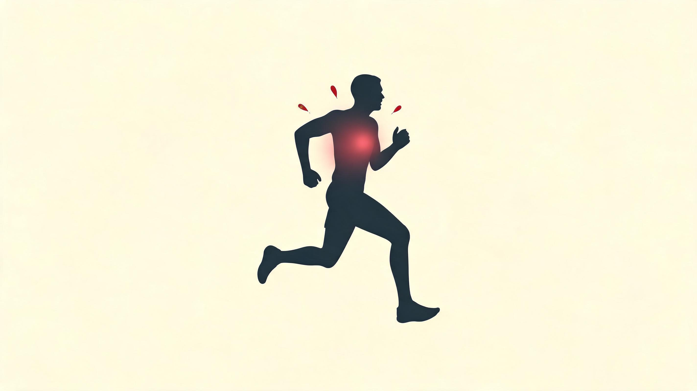
急性升起来帮你扛 · 慢性挂高位就开始拆房子
中等运动感冒少一半 · 极量后那两周风险翻几倍
EA < 30 = 这家过不下去了 · 跟瘦不瘦没关系
跑步八成的力变成热 · 散不掉就出人命
激素、免疫、体温
跑步不只是腿在动。激素、免疫细胞、汗腺这三套看似不相干的系统,其实在算同一本账——这家还能不能再支出一笔。这一章只讲透这一件事:你为什么跑得多反而老感冒、大热天为什么会突然崩、女跑者为什么会停经。答案都在这本账上。
▾ 本章 7 节 · 点击跳转
把身体当成一户过日子的人家。你跑的每一步都是一笔支出,激素、免疫、体温这三套系统,本质上是同一个会计在盯同一本账:这钱花得起,还是得砍。变强从来不是白来的——是你先把这本账跑穿一次,身体再连本带利补回来,顺手把预算重置高一点。
这家会计的脾气,1936 年一个叫 Selye 的人就摸清了。
他在《Nature》上发了 74 行的短信,拿白鼠做实验:冷、热、毒物、外伤、过度运动——六件性质完全不同的事,白鼠的反应却是同一套:先警戒,再硬扛,扛不住就垮。他管这叫一般适应综合征。说白了就是:不管你拿什么去为难这具身体,它的账房先生都只会一种应对——先把能调的钱全调出来应急,事后慢慢补,补得过来就长本事,补不过来就破产。
你今天每跑完一次,身体走的就是这套流程的微缩版:支出、恢复、补过头一点点(超量恢复)。但 Selye 当年也写明了不乐观的那一半:钱一直在花、却从不留时间补,这家就会从硬扛直接跌进破产——这就是后来说的过度训练。这一章讲的,就是这本应激经济的账——激素、免疫、热,三个互相纠缠的科目,合起来决定你是变强还是崩盘。
8.1这本账要分两栏记:今天的支出,和长年的预算
激素这件事,只用一栏记会得出自相矛盾的结论。一次跑步,血里皮质醇能飙到 4 倍;可常年训练的人,基线皮质醇反倒比久坐者低。同一个激素,两个方向。不是它精分,是你把两栏账记混了。
跑步当下血里那阵激素波动,是今天的应急支出。它只服务一件事:把眼前这一公里跑下去——动员能量、调高心率、压住炎症。跑完几小时到几天,数值就归位了。本质是一次掏空钱包的临时调度。
连续训练 8 周以上,基线浓度、受体灵敏度、整条轴系的设定值被整体改写,这是长年的预算重置。它服务的不是这一公里,是「用更低的代价跑下一公里」。本质是把储蓄方式、传感器灵敏度、整套设定点都往耐力型重新校准。这一栏才是训练真正的红利——也是过度训练的暗礁:同一条曲线越过某个点,红利就翻成赤字。
所以读任何运动激素的说法,先问一句:讲的是哪一栏?这是不被矛盾结论绕进去的第一步。
8.2跑一趟,账上五笔钱接力着动
从你系鞋带、起步前 30 秒开始,血里的化学环境就变了。这套反应粗分五波,按时间先后接力——秒级、分钟级、十几分钟级、小时级、整场级——每一波拨一笔钱,办一件不同的事。
第一波,儿茶酚胺(秒级)。肾上腺素和去甲肾上腺素从肾上腺和交感神经末梢出来,起步几十秒就升几倍,中高强度能到静息的 10-20 倍。它干三件事:心跳加快加猛、把血从内脏挪到腿上、点着脂肪和糖原的分解。有意思的是精英跑者这一波的峰值往往比业余的低——他们靠受体更灵敏,同样的钱办更多事。这就是「经济性」在分子层面的样子。
第二波,胰岛素降、胰高血糖素升(分钟级)。起跑 5-10 分钟后这对反向开关一拉,逼着肝脏停下存糖、开始往血里放糖,接济正在干活的腿。所以跑步中血糖反而稳——不是你吃了,是肝在拼命供。但这套供给在 90 分钟以上会力竭,肝糖原一空,血糖陡降——这就是马拉松后段撞墙的内分泌底子。
第三波,皮质醇(十几分钟级)。下丘脑、垂体、肾上腺这条 HPA 轴,是身体应对一切压力的统一通道——跑步、考试、失恋,走的都是这条。它按强度分档:轻松跑基本不升;中等强度撑过 30 分钟,升五成到一倍;高强度间歇或 90 分钟以上长距离,升 2-4 倍,能挂 4-6 小时;超马更是一路升到赛后一两天。所以皮质醇是这家的压力账:急性升起来帮你扛过这一小时;可慢性长期挂在高位,它就开始拆房子——免疫降、骨密度降、肌肉被分解。
第四波,生长激素(小时级)。它从垂体脉冲式放出来,中高强度运动是已知最强的触发器之一,10-20 分钟高强度能让它升 10-20 倍。但它自己不砌墙,是跑到肝脏点着 IGF-1,后者才是真去骨、肌、腱里干活的那个。生长激素是工头,IGF-1 才是泥瓦匠。关键在于:它自然的最大一波出现在深睡前那几个钟头——所以夜跑完熬夜刷手机最毁恢复,跑出来的红利全被熬夜砸了。
第五波,水盐(整场级)。出汗后,抗利尿激素和醛固酮一起上岗,前者保水、后者保钠,把汗丢的水盐拉回来。麻烦出在跑得太长又只灌白水时:水进得多、盐没补，血钠被稀释,就成了运动相关低钠血症——超马最危险的内分泌副作用,后面还会撞见一次。
8.3八周以后,整本预算被改写
急性那五波是一阵风。规律训练 8 周往上,整套工作点会朝更省、更耐受、更灵敏的方向迁过去。同一套激素,基线被重设——这笔红利你摸不着,但它定了你下一节训练课的天花板。
HPA 轴这边,练出来的人基线皮质醇(尤其清晨那一峰)往往低于久坐者,同样强度跑步皮质醇升幅也比新手小三五成。这叫应激钝化,是好事——同一笔压力,身体学会了少花钱应对。可同一条曲线越过某个点就翻面:训练量长期压过恢复,基线皮质醇反向升高、本该早高晚低的节律被拍扁成全天偏高。钝化失败、反应越来越剧烈,这就是过度训练的预警。
胰岛素那边则是耐力训练最划算的一笔代谢红利:规律有氧 12 周,肌肉对胰岛素的敏感性能涨三成到一倍——转运蛋白上调、毛细血管变密、线粒体变好。对预防 2 型糖尿病的效用,甚至超过单纯减重。下面这张表把几个主科目的两栏账并排摆出来——左边良性,右边过量,看一眼就知道你那本翻没翻面:
| 激素 | 急性反应 | 慢性适应(良好) | 慢性适应(过量) |
|---|---|---|---|
| 肾上腺素 / 去甲肾上腺素 | ×10-20 峰值 | 基线下降、受体敏感性升 | 基线持续偏高 |
| 皮质醇 | ×2-4(>30min) | 基线略降、节律稳定 | 基线升高、节律扁平 |
| 生长激素 / IGF-1 | GH ×10-20 脉冲 | IGF-1 基线升 | IGF-1 反常下降 |
| 胰岛素 | 下降(配合糖原动员) | 敏感性显著升高 | 可能出现胰岛素抵抗 |
| 睾酮 (男性) | 短暂升高后回落 | 基线维持 | 基线降低、T/C 比下降 |
| 瘦素 (leptin) | 变化不大 | 基线略降、食欲调节正常 | 显著降低、月经紊乱 |
| T3 (甲状腺) | 无显著急性反应 | 基线稳定 | T3 下降(适应性低代谢) |
这张表里最该单拎出来的一栏是睾酮/皮质醇比(T/C 比),它是过训最经典的生物标志。道理顺着账本想就通:睾酮管建设(合成),皮质醇管应急(分解),两者一比,就知道这家现在是在盖房子还是在拆房子。T/C 高,身体在建设期;T/C 低,身体在拆迁期。相对基线掉了三成,疲劳在累积、该减量;掉了五成,典型的过训信号。光看绝对睾酮值容易误判,比值才是真信号——每 3-6 个月晨间空腹查一次就够。
顺带破一个被营销文案带歪的说法:单次跑步后睾酮短暂升 10-30%,常被读成「跑步增睾酮」。慢性层面恰好相反——周跑量过 60-80 公里的男跑者,基线睾酮往往比久坐者还低 5-15%。想提睾酮,力量训练才是正路。这也是严肃跑者每周必须配两次力量的原因之一:不只为经济性,也为内分泌这本账平衡。女跑者那头,这本账一旦入不敷出,后果更直接——月经会先停。这就接到下一节最要命的一栏。
8.4免疫和 REDs:同一本账透支的两张催款单
前面讲的是这家会不会越花越穷。这一节讲穷了会怎样——免疫先扛不住,REDs 是直接资不抵债。两件事看着不挨着,根子是同一个:支出长期超过进账。
先说那句跑步社群最老的吐槽:「我跑步以后反而老感冒。」这不是错觉,是运动免疫学几十年反复确认的真相。Nieman 在 1990 年代画出一条 J 形曲线:横轴训练量,纵轴感染风险。久坐的人风险中等;规律中等运动的人,上呼吸道感染风险反降 25-50%——这是免疫红利区;可极量训练的人(每周超 20 小时,或马拉松完赛后那一两周),风险反弹到 2-6 倍。中段最低,两端翘起,长得像字母 J。
翻译成账本话:中等运动这笔钱花得起,身体还倒赚一点免疫;极量训练是透支,赛后那几天身体忙着还债,门户大开。所以免疫不是越练越强,50-80 公里/周大概率在红利区,过 96 公里就大概率进了透支区。
透支的窗口有个名字叫开放窗口:剧烈运动后 3-72 小时,免疫细胞功能短暂下沉——NK 细胞活性降、唾液 IgA 暴跌、黏膜屏障变薄,病原体趁虚而入。马拉松完赛后一两周感冒率显著高于赛前,就是它的临床证据。机制上近年有修正(有人认为免疫细胞不是被压制,是跑到组织里继续干活去了),但「高强度后易感染」这件事稳如磐石——所以你赛后总感冒,不是免疫差,是恢复策略差。
顺手记一个判断:症状只在脖子以上(轻喉痒、流清涕)、没发烧,可以做半小时轻松跑;到了脖子以下(咳嗽痰多、肌肉酸、低烧),老实休 3-5 天。带病硬练,会把一周的小感冒拖成两周以上的大窟窿。
感冒还只是透支的利息。本金亏空,是 REDs——运动相对能量缺乏。它的核算单位叫能量可用性(EA):吃进来的能量,减掉运动烧掉的,再除以去脂体重。说白了就是「干完活之后,这家还剩多少钱过日子」。EA 大于 45 算手头宽裕,激素都稳;30-45 是紧巴;低于 30,就是这家过不下去了,REDs 高风险。
关键在于:REDs 跟瘦不瘦没关系。一个看着不瘦的跑者(BMI 22、体脂 18%),只要吃得太少又跑得太多,照样资不抵债。身体一感知到饥荒,会像一户揭不开锅的人家那样挨个砍开支:先停最贵的那笔——生育(女跑者月经停掉,男跑者睾酮、晨勃滑坡);再降怠速(甲状腺 T3 下调,基础代谢率压下来省那点本就不够的能量);骨头不修了、免疫减员、表现停滞。每一项单看都「像生病」,其实全是身体在主动省钱。
所以这里有这一章最反直觉、也最该焊死的一句:那些看起来像病的指标——T3 低、月经停、代谢慢——很多时候不是病,是身体在精打细算地过苦日子。修法不是吃药去把指标顶回去,是把进账补上。能量一回来,瘦素回升,这些科目自己就归位。「瘦」从来不是跑步表现的目标,「这家账能正常运转」才是。
8.5散热:一笔砍不掉的刚性开支
前面三节算的是能调度的钱。散热不一样,它是房租水电那种刚性开支——不交,要命。肌肉做功只有 20-25% 变成往前的力,剩下 75-80% 全变成热。一个 70 公斤的人中等强度跑,每小时产热六到八百千卡——这些热要是一点不散,核心温度每小时能涨 5-7°C。所以散热不是辅助项,是生死线。
身体把热交给环境只有四条物理通道:辐射、传导、对流、蒸发。跑起来主力是蒸发——1 克汗蒸发能带走 580 卡热,高强度下能占散热的八成以上。但前提是汗真能「蒸发」掉:湿度一过 70%,蒸发被死死按住,汗只是顺着身上往下滴,白流。这就是为什么高温高湿比高温干燥危险得多——同样的热,你那条最大的散热通道被堵了。
这条刚性开支有个反常识的好消息:它能靠 14 天把账面优化一大截。所谓热适应——头三天血浆先扩张 8-15%(等于先给散热系统垫一笔周转金),固定强度下心率降 5-10 bpm;第四到七天汗腺变灵敏,出汗更早、汗里的钠被回收得更多(汗变淡);第八到十四天皮肤血流上去、同样的气温感觉没那么热了。这是耐力训练里最快、最划算的一项适应,14 天能换来热环境 5K-10K 提升 5-8%。所谓「夏练三伏」不是空话,是这 14 天里重建一整套散热的基础设施。但停热 28 天基本归零——所以这笔账每年都得重新做一遍。
关键不在「出点汗」,在让核心温度真升到 38.5°C 以上、维持至少半小时。最省钱的版本是 Zurawlew 那项随机对照试验验证过的:每天常规训练后泡 40°C 热水 30-40 分钟,连泡两周。家里有浴缸就能干,不用花一分钱设备。
还有件事关乎钠这一笔小钱:汗里的钠浓度个体差异大得吓人,从 10 到 90 mmol/L 都有。盐汗型的人跑完汗一干,衣服上泛白盐霜、擦到嘴角发咸,同样跑两小时可能丢钠 2000-3000 毫克;节钠型只丢 800-1200 毫克,差三倍以上。所以「运动饮料」对盐汗者是必需品,对节钠者可能是过量。马拉松后段抽筋、莫名其妙崩掉,不一定是糖原见底,也可能是这笔钠的账没补上——尤其高温赛。
8.6三种热急症,一句话别认错
散热这笔刚性开支一旦真断供,会以三种急症在赛道上现形。它们看着像,处理完全相反——认错了会害人。
| 急症 | 核心温度 | 关键症状 | 现场处理 |
|---|---|---|---|
| 热衰竭 Heat Exhaustion | 38-40°C | 头晕、恶心、皮肤湿冷、心率快但神志清醒 | 移阴凉处、平躺抬腿、口服补液、电解质饮料、冷水擦拭 |
| 热射病 Heat Stroke | >40°C | 核心 >40.5°C、神志改变(困惑、激越、昏迷)、皮肤可湿可干 | 紧急 · 冰水浴(0-2°C)全身浸泡、降温目标 38.5°C、立即送医 |
| 运动相关低钠血症 EAH | 正常 | 头痛、恶心、抽搐、肌力下降、神志改变;多见超马后段或赛后 | 停止饮水、紧急测血钠、严重者高渗盐水静脉输注、绝不补低渗液 |
先破一个最害人的误解:大众以为中暑都是「汗如雨下」,其实严重热射病时汗腺可能已经停了——身体太脱水、调节彻底垮了,皮肤反而干热。所以「还在出汗 = 没事」是要命的错觉。真正的判断指标是神志:跑者突然反应迟钝、答非所问、走不直线,这就是热射病,必须当场降温,等不到救护车。
而 EAH 看着像热衰竭,本质却相反——是水太多,不是水太少。所以现场判断顺序应该是:先看神志、再摸核心温度、最后才考虑补不补水;对一个搞不清状况的人猛灌水,反而可能把 EAH 推向危险。这一栏跟 §8.2 第五波的水盐账是同一件事的两头——同一笔钠,赛中是平衡问题,赛道边就成了急救问题。
8.7这一章的留底
- 两栏账分开记——急性是今天的应急支出,慢性是长年的预算重置,同一套激素意义相反。读文献先问是哪一栏。
- T/C 比是过训最好的报警器:掉 30% 警觉,掉 50% 强制减量。它告诉你身体在盖房子还是拆房子。
- 免疫是 J 形账:中等运动倒赚免疫,极量训练透支,赛后那一两周是还债的开放窗口。
- REDs 跟瘦不瘦无关——只要 EA 长期低于 30,无论 BMI 都会触发。「瘦」不是目标,账能转才是。
- 很多「像生病」的指标(T3 低、月经停、代谢慢)其实是身体在主动省钱。修法是补进账,不是吃药顶指标。
- 散热是刚性开支:高湿环境别用「够汗就够散热」判断——汗滴下来不蒸发就是白流。
- 三种热急症认神志不认出汗:神志一乱就是热射病,当场降温;搞不清状况别猛灌水,防 EAH。
设一位跑者:28 岁女,体重 56 公斤,身高 165(BMI 20.6、体脂 22%——看着挺健康)。马拉松从 3:45 跑进 3:25,周跑量从 40 公里加到 75。最近三个月,月经周期从 28 天拖到 38-50 天,有一个月干脆没来。她以为这是练出成绩的勋章——恰好相反,是身体在拉 REDs 的红旗。
给她算一笔账。日摄入约 2100 千卡,跑步日均烧约 800(75 公里 ÷ 7 × 1 kcal/kg/km × 56 kg),去脂体重约 44 公斤。EA =(2100 − 800)÷ 44 ≈ 30——刚好踩在那条「过不下去」的线上。身体接下来做的事顺着账本全能推出来:感知饥荒 → 砍掉最贵的生育开支(月经紊乱)→ 调低怠速(T3 降、代谢慢、体重不再掉但人越来越累)→ 免疫减员、骨头停修。28 岁的骨密度,可能正悄悄往 50 岁滑。
修复方向不复杂:每天补 300-500 千卡(主要从碳水和健康脂肪走),把 EA 顶回 45 以上;跑量暂时退回 50-60 公里/周,直到月经恢复规律(通常要 3-6 个月);查铁蛋白、维 D、TSH;月经半年不回,必须看运动医学专科 + 测骨密度。
我自己冲 sub-3 这一路,用的就是同一套账本思维。全马 PR 3:20 往 3:00 推,最容易出事的不是腿,是这本看不见的账——加了量,皮质醇、睾酮、免疫这些科目悄悄就动了。我盯的办法很土:Coros 每天晨起记静息心率和 HRV,睡眠时长、训练后的疲劳分也一并记。这几个读数,就是身体每天递给我的对账单——连着几天异常,我宁可砍掉一节质量课,也不硬上那 10 公里。聪明的训练不是硬扛「再来一组」,是学会读这份对账单。下一章讲营养——把这本账喂饱的另一半工作。
内分泌·免疫·热生理要点
- 急性激素响应阶梯:儿茶酚胺 (秒级) → 皮质醇 (30 min) → GH (60+ min)。慢性高跑量者基线皮质醇升、睾酮降。
- 运动免疫 J 曲线:中等运动降 URTI 风险 25-50%,极量 (>96 km/周) 上升 2-6 倍。'开窗期' 3-72 h 高感染期。
- REDs 不是瘦的问题是 EA 问题:EA < 30 kcal/kg LBM/d 触发月经紊乱、骨密度↓、激素崩溃。男女通用。
- 热适应 14 天获得:血浆量扩张、汗量增大、汗钠浓度↓、汗启动温度↓、心率↓——夏赛备战的关键。
- 中暑可能不出汗:热射病阶段汗腺可能停止,识别关键不是汗量是中枢神经异常 + 核心 >40°C。
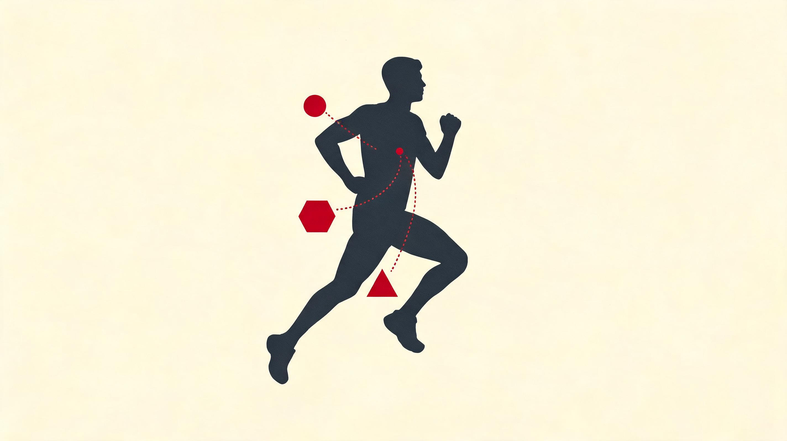
不是能量耗尽 · 脂肪还剩好几万卡 · 是糖出料太慢喂不上
不是存了多少 · 是糖一分钟能烧多快 · 赛中能往里加多快
能往里加多快有上限 · 双糖能翻倍 · 而且能练
不是吃错某一餐 · 是常年亏本 · 拖垮的是骨头和五年后的成绩
营养 · 一口随身带的灶,和它的进货速度
营养这块最容易被讲成一张吓人的清单——几十种营养素、几十个剂量。这一章只想让你带走一件事:决定你能不能跑完的,从来不是身上存了多少燃料,是燃料往里加、往外烧的速度跟不跟得上。其余的剂量细节,都是为了让你看懂这笔出料账。
▾ 本章 8 节 · 点击跳转
把身体想成一口正在赶饭点的灶:糖是切好的快菜,够烧两小时;脂肪是后院堆成山的存货,管够却切得慢。撞墙不是没料了,是快菜断了货、慢菜接不上,大厨(你的大脑)怕翻车,自己把火关小了。所以你真正要练的不是「存多少」,是「往灶上加得有多快、烧得有多顺」。
先讲一个把整个赛事补给产业催生出来的实验。
1986 年,得克萨斯大学的 Edward Coyle 让 7 个训练有素的车手在 70% VO₂max 功率下骑到力竭。一组每 20 分钟喝糖水,一组喝同样味道但没碳水的甜味剂水。喝水那组三小时撞墙,血糖跌到 2.5,头晕、眼花、动作变形;喝糖水那组撑到四小时八分,多了整整四成,终点还能维持功率。最有意思的是,两组终点的肌糖原几乎一样——糖水救的根本不是肌肉里那点存货,是一路往灶上添的那点快菜,直接喂着大脑和腿。从早年的 Gatorade 到今天 Maurten 那管 80 g/h 的凝胶,整条产业都是这一个实验长出来的。
所以这一章讲的就是这件事:你赛中加进去的每一克糖,对应着能多跑的一段路;每一个错过的补给点,对应着断货那一刻来得更早。下面把这口灶拆开看——先看它一天到底烧多少、料怎么配,再看赛场上那堵墙怎么来、怎么推开。
9.1一天该往灶上添多少
跑者最爱问「我今天该吃多少」,又最容易只盯着跑步那一笔。其实一天的支出是四笔钱加起来的,跑步只是其中浮动最大的一笔。
四笔账,从大到小:基础代谢占六七成——你躺着不动,光维持这台身体运转就烧掉的,大头在这。食物热效应占一成上下,是消化吸收本身的开销,蛋白质最费(吃进去的能量约四分之一花在消化它上,所以蛋白纸面上的热量,实际能用的打了折)。训练消耗就是跑步那一笔,业余一周四十公里大概两千五百卡,精英能到八千往上。最后是非运动活动——站、走、做家务、抖腿,占一两成,而它有个坑:你练得越狠,这一笔会不自觉地往下掉,练完一天反而坐得更死。
顺手把一个流传最广的误会掐掉:跑步不是减脂神技。多项研究都指向同一件事——新加的有氧训练对体重的影响远小于你按热量算出来的预期。身体会从三条路把你烧掉的卡找回来一部分:活动量悄悄下调、食欲悄悄上调、基础代谢悄悄收紧。Pontzer 那套「约束型能量支出」模型是当下最被认可的解释。跑步是改善代谢健康的好工具,但拿它当高效减脂器,大概率失望。真要减,跑量、吃的量化、力量训练三条腿一起上才有戏,单押哪条收益都薄。
至于具体怎么烧脂肪、怎么烧糖,跑得越快烧糖的比例越高,跑得越慢烧脂肪的比例越高——这条曲线第四章那笔能量账已经讲透,这里不重复。你只要记住一个量级:糖原这口快菜,满打满算够你以马拉松配速烧两小时出头。这个数,是后面整堵墙的伏笔。
9.2料怎么配:碳水是主菜,不是配菜
耐力跑者的饭,和健身房那套「三七开」不一样。差别就一条:碳水的位置高得多。
过去那种「百分之多少碳、百分之多少蛋」的算法已经被淘汰了,因为它分不出你今天是歇着还是要跑三十公里。现在的算法是按体重和当天的量来配:蛋白和脂肪基本是定量的(每公斤体重蛋白一克六上下、脂肪一克上下),真正随训练量浮动的是碳水——休息日每公斤五到七克,大跑量日七到十克,赛前囤货能到十二克。这是国际奥委会 2018 那份共识声明的方法。
这张表只要记住一句:蛋白和脂肪是稳的,碳水是动的。把碳水按今天跑多少来加减,而不是天天一个量,这是这一节唯一的功夫。
9.3肠道是块肌肉,加料速度也能练
超过 75 分钟的高强度跑,赛中补糖能实打实提成绩。但卡住你的从来不是「吃不吃得下」,是肠道往血里搬糖的速度有个硬上限。这是过去十年运动营养学最值钱的一个认知更新。
糖往血里搬有两条道。葡萄糖走的那条,单走它每小时六十克就堵死了。果糖走的是另一条独立的道,两条并行不打架——所以葡萄糖加果糖按 2:1 配,总量能推到每小时九十克。再往上,得花六到十二周专门去练这口肠道,有人能练到一百二。Kipchoge 团队报告的赛中补给值大约一百克——这是过去五年精英成绩往前蹿的最大外因之一。
落到你身上就一句话:超过 75 分钟的比赛,补给目标别再停在老教科书那个每小时三十到六十克,往六十到九十去,精英九十到一百二。而这口加料的本事,跟练腿一样得提前练——直接在比赛日上九十克,大概率是恶心、腹胀、跑着跑着窜稀。靠谱的办法是拿平时的长距离当训练场,六周左右一档档往上加:头两周每小时补四十克,中间升到六十、八十,最后才在一次模拟比赛配速的长跑里试九十克。同时把喝水的量也练上——每十五分钟一小口,而不是赛日突然猛灌。肠道这块肌肉,你怎么对它,它就怎么还你。
9.4那堵 30 公里的墙,到底是什么断了
现在到正主。撞墙是马拉松最有名的现象,通常在 30 到 32 公里突然崩。这一节是整章真正想让你带走的事——前面三节都是为了让它立得住。
先把那个最大的误会翻过来:撞墙不是你身上没能量了。那一刻你身上还挂着好几万卡的脂肪没动——脂肪是后院那座堆成山的存货,管够。问题出在它切得太慢:脂肪最快只够供你六七分配速的速度,你要跑五分、四分半,差的那一截只能靠糖来填。而糖这口快菜,满打满算两小时出头就见底。
所以真实的崩盘是这样:跑到三十公里,切好的快菜快没了;大脑一感到血糖往下走,立刻判断「再这么烧下去要出人命」,于是悄悄把火关小——少招募一批肌纤维,把你的配速硬压到脂肪那口慢菜能跟上的速度。那一下腿不是没劲,是大厨怕你低血糖晕过去,自己替你松了油门。典型表现你大概率体会过:三十公里后配速莫名掉三十到六十秒,腿不听使唤,喘得比心跳还累,忽然就想哭想停。那不是你软弱,是你自己的中枢替你按下的安全阀。
这件事好在哪?好在它是个能被你提前安排的物理过程。下面这张图把三种安排画在了一起:
三条线读下来,三招防墙就清楚了,而且它们是叠加的,叠起来比任何一招单用都狠。一是赛前囤货:开赛前三天把碳水拉到每公斤八到十克,能把糖原从基础四百克囤到五百克。每克糖原拴着三克水,所以那两天你会莫名重一两公斤——别慌,那是糖和水的物理信号,不是发胖。二是赛中持续加料:一路每小时补六十到九十克,等于多塞进去两三百克外源糖,把见底那条线一路往后推。三是提前练肠道,也就是上一节那件事,让你赛中真能舒服地吃下这么多糖。三招叠满,那堵三十公里的墙能推到四十公里之后,甚至彻底消失。
9.5水合:真正要盯的是钠,不是水
脱水两个百分点表现就开始掉,脱水五个百分点掉三成。但「喝够水」这件事比「多喝水」复杂——跑者真正该盯的,是钠。
很多人不知道,喝水喝过头,比脱水还危险。这在马拉松急诊室是个老问题了。长时间跑、又猛灌纯水、身体偏偏又分泌激素不让你把水排出去,血里的钠就被稀释到危险线以下——头痛、恶心、意识模糊,严重的抽搐、脑水肿。1990 年代后期那波「多喝水防中暑」的宣传过了头,直接把马拉松完赛者里这种低钠血症的发生率推到一成三上下。每年都有人因此送命。
所以当代共识就三句话:长跑按口渴喝,补给里必须加钠,别超量灌水。换个说法——补给站随手抓水猛灌是错的,核心从来不是「水够不够」,是「水和钠配不配套」。你流的汗有多咸是天生的,差别能差三四倍:跑完衣服上一圈白盐渍、容易抽筋、嘴角发咸的,就是高钠流失体质,长跑得主动多补电解质。这个自己跑一趟就能大致摸清,不必精测。
9.6铁、维 D:看不见的两块短板
大量跑者(尤其女性)常年缺铁或缺维 D。它们坏就坏在初期没症状,只以「莫名训练不动、老觉得累」的样子,悄悄把你的成绩曲线往下压。
跑者缺铁有三条别人没有的路,叠在一起威力惊人:每次落地都有红细胞被压破、铁从尿里漏走;训练后身体会分泌一种激素直接掐住肠道对铁的吸收;女性每个月还有月经失血。三条叠起来,哪怕你「看着吃得不错」,铁的存款也可能见底。
这里有个最该记住的区分:铁蛋白是你的存款余额,血红蛋白是账户里能马上花的现金。存款耗光之前,现金看着还正常——所以光查血红蛋白不够,必须查铁蛋白。女跑者大概三成长期低铁,男跑者也有一两成。低铁直接拉低 VO₂max,让你「莫名练不动」。别拿感觉判断,每年至少抽一次血。真要补,几条容易被忽略的:训练后六小时内别补(那会儿吸收率最低)、隔天吃反而比天天吃吸收更好、别和钙咖啡茶同服、配维 C 吸收翻倍。维 D 同理——中高纬度的冬天大半人都缺,缺到一定程度应力骨折风险翻倍,每年十一月到三月补一千到两千国际单位几乎是默认动作。
9.7最贵的错:常年亏本
前面都在说「怎么吃对」。但跑者营养最伤人的错,不是某一餐吃错,是常年给身体留的钱不够——这件事有个名字,叫低能量可用性。
道理不绕:把你吃进去的能量,扣掉跑步这张账单,剩下的才是留给身体「养房子」的钱——修肌肉、维持骨密度、撑住激素。常年留得太少,身体就开始关灯省电:女性月经先停,骨密度往下掉,代谢收紧,免疫变弱,练得越狠反而越不进步。这就是为什么有些人看着特别拼、又特别瘦,成绩却一直卡着不动——不是练少了,是常年吃成了赤字。
男跑者尤其容易漏诊,因为没有月经这个信号灯。要看替代信号:晨勃消失、性欲下降、状态长期停滞、动不动感冒,占上三条就该高度怀疑。过去那个老术语只盯着女性,但 2018 年以后的证据很明确——男性长跑者里睾酮下降、反复应力骨折、心境变差,全是同一回事。所以但凡身边有「过瘦 + 特别努力 + 进步停滞」的跑者,这件事可能比任何一条训练建议都重要:让他停掉加量,先把饭吃够,去查个血。一杯凝胶救不了不够的日常,一次囤货也补不回六个月的亏空。
9.8把这口灶接到你的赛季上
原理讲完,顺手把整章拧成一张你能照着做的优先级表。读完一整章最大的危险是知识落不了地——所以只留三层,大多数人把第一层做对就赢了一半。
第一层,也是唯一不能塌的一层:总量吃够、三大主料稳住、水和钠配套。别陷进常年亏本,训练量加了就主动加餐而不是硬扛;碳水按今天跑多少在每公斤五到十克之间浮动,蛋白一克六、脂肪一克稳着;长跑加电解质,别无脑灌水。这三件做对,你已经超过大多数业余跑者。
第二层是训后那一小时和定期体检。训练一结束身体最听话,趁这一小时补上一克每公斤的碳水加零点三克每公斤的蛋白——最便宜也最有效的方案就是一杯低脂巧克力奶加根香蕉,碳蛋比正好。再加上每年一次抽血查铁蛋白和维 D。第三层才轮到那些进阶的:把肠道当肌肉练、选两样循证最硬的补剂(咖啡因和硝酸盐先试)。至于市面上九成九的新补剂——外源酮体、各种氨基酸——基本是营销噪声,预算有限的话,这些钱花在双糖凝胶和电解质上,回报率高十倍。还有一条反着来的红线:训练后别大剂量吞维 C/E 抗氧化,它会把训练带来的有氧适应钝化掉,你以为在帮身体,其实在拖后腿。
我全马 PR 3:20,目标是把它推进 sub-3。营养这章读下来,真正要我动手的不是去背几十个剂量,是把赛日这口灶提前调顺——尤其是赛中加料这件事,得在平时长距离里练到不假思索。
做法不复杂。赛前三天开始囤货,碳水按每公斤八到十克往里塞,体重涨个一两公斤我已经知道那是糖加水,不再瞎紧张。赛前那顿只吃练过无数次的老搭配,绝不碰新东西。开跑后不等饿,用表计时:大约每半小时一根凝胶顶住每小时六十克往上,水按口渴喝、汗咸就多带电解质。最关键的是后半程——三十公里之后哪怕一点不饿,也逼自己再补一根,因为那是大脑关火之前我能塞进去的最后弹药。Coros 全程记着配速和心率,赛后一拉曲线,哪一段掉速、是不是漏补了,一目了然。
多数业余跑者栽就栽在这:训练堆得很足,补给却还停在「渴了才喝、饿了才吃」。可撞墙的信号一到就已经晚了。我盯着这口灶的进货节奏,比盯任何花哨补剂都管用——训练和营养是两条腿,缺一条,这场 sub-3 就得跛着跑完。
这一章就到这。前面的章节讲了引擎怎么烧料、心肺怎么供氧,这一章补上的是料从哪来、怎么不断供。其余那些剂量小数点,知道得再细,也都是为这口灶服务的——你只要带走一句话就够本:
撞墙不是力气用完,是糖这口快菜断了货、脂肪那口慢菜接不上;你能跑多远,看的不是身上存了多少,是你往灶上加料、烧料的速度跟不跟得上。
营养经济学要点
- 能量需求公式:跑步约 1 kcal/kg/km;耐力运动员碳水 5-10 g/kg/d、蛋白 1.4-2.0 g/kg/d、脂肪 20-30%。
- 赛中补给上限被推到 120 g/h:葡萄糖+果糖 2:1 双糖通过 GLUT5+SGLT1 双转运,需要'训练肠道'。
- EAH 是长距致命风险:大量饮水 + 不补钠 → 低钠血症 → 脑水肿。补钠 300-700 mg/L,汗钠高者更多。
- 女性铁缺乏机制:月经失血 + 足底溶血 + IL-6 → hepcidin → 抑制铁吸收。补铁与高强度训练日错开 ≥6h。
- 补剂 GRADE 分级:A 级证据 = 咖啡因 3-6 mg/kg、硝酸盐 6.4 mmol、β-丙氨酸、肌酸、碳酸氢钠。大剂量抗氧化剂会抑制线粒体适应,反伤。
主要参考:[Coyle 1986 · J Appl Physiol][Thomas 2016 · IOC 共识][Jeukendrup 2014 · Sports Med][Burke 2017 · J Physiol][Stellingwerff 2014][Hew-Butler 2015][Peeling 2008][Mountjoy 2018 · IOC RED-S][Pontzer 2016][Areta 2013]
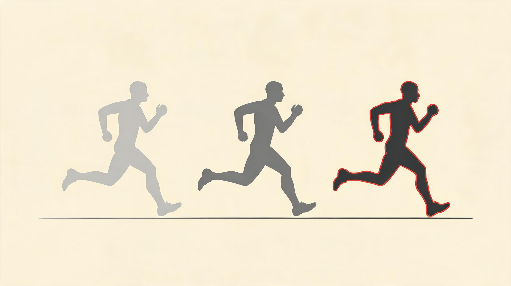
精英的强度分布 · 中间灰区几乎为零
手机上就能看 · 别再凭感觉判断累不累
最划算的省油器 · 提 5% 经济性顶堆一堆跑量
赛前最后一课 · 做对多挣 2-5 分钟
身体怎么被练得更强
练得多不等于强得多。这章不堆训练科学模型——你来这章是想知道「我下周该怎么练」,不是「训练学有哪些公式」。我把它砍成你真用得上的八件事,数字全讲成「怎么看」,不讲「怎么算」。
▾ 本章 7 节 · 点击跳转
变量是「训练 + 恢复」,不是「训练」。最强的跑者不是练得最多的,是把「够狠的刺激」和「够久的恢复」反复堆叠的。业余通病:卡在中间——刺激不够狠,恢复也不够久。
这章的底子,是 Seiler 那个发现:他跟踪挪威国家队耐力运动员一整年的心率和血乳酸,算完发现精英的强度分布不是钟形,是 U 形——大约 80% 时间在轻松区,15-20% 在高强度区,中间那片不上不下的灰区几乎没人去。而大多数业余跑者反过来,一半以上的时间挂在灰区:慢的不够慢,快的不够快,累得要命却进步缓慢。整章就讲一件事——怎么把你的训练从这片灰区里捞出来。
10.1你不是在跑步时变强,是在恢复里变强
这是整章最该先扭过来的认知:训练那一下是「撕」,变强发生在之后的恢复里。练完不是终点,是刚埋下种子。
身体被一节质量课刺激之后,不会只回到原点,会「修过头一点点」,长出一个比原来高一截的新基线——这叫超量恢复。但有个时间窗:大约 48-96 小时。窗口里你补上下一次刺激,就在新台阶上继续往上垒;错过了,新基线慢慢掉回去,等于白练一场。
这条曲线有两个反直觉的地方,值得记一辈子。一是练完当下你是变弱的——质量课跑完去测体能,数据更差,那不是退步,是疲劳还压着。很多人这时慌了乱加练,等于在伤口上再撕一刀。二是不同零件恢复速度差很远:
所以「每周固定两次质量课」比「想跑就跑」进步快——不是纪律好看,是固定节奏正好卡在超量恢复的窗口上。刺激讲完了,下一个问题马上来:刺激到底该多大?这就是 80/20 要回答的。
10.2业余最大的坑,是中间那片灰区
如果这章你只带走一条,带这条:80% 的训练要真慢,20% 要真快,最忌讳的是一大半时间挂在不上不下的中间。
「80/20」最大的误读,是把它听成「80% 跑得慢一点」。于是很多人把心率 160、比半马配速慢 20 秒那种节奏当成「轻松跑」。这不是 80,这是 100% 的灰区。 Seiler 说的那个 80,是真·轻松——慢到你能全程用鼻子呼吸、能一口气说完一整句话、累的程度打分十分制不超过三分。多数人所谓的轻松跑,其实一直在四到六分这个灰区里晃。
灰区为什么坑?因为它两头不讨好:慢得不够,得不到纯有氧那套适应(线粒体、毛细血管);快得不够,又够不到高强度该有的代谢冲击。你只换来一身慢性疲劳,跑量看着不少,身体没真正长进。这就是「累得要命却进步缓慢」的根。
怎么确认你真在轻松区?三个土办法,任意一个不达标就是太快了:
- 鼻呼吸:全程能只用鼻子呼吸不憋气。一改用嘴大喘,就已经超了。
- 说整句:能完整说完一句三十来字的话,中间不用停下来换气。
- 心率盖子:大致锁在最大心率的 70-75% 以下,超了就主动走 30 秒或者拐上坡压一压。
还有两个实操要点。一是按时间算不按公里算——同样一小时,慢跑能跑七八公里,间歇课算上歇着可能只跑六公里,按公里会严重高估你的高强度占比。二是按周看不按单次看——不是每节课都 80/20,是一周平均下来 80/20。一个典型周大概长这样:四次轻松跑垫底,一次阈值课,一次间歇课,算下来轻松占八成出头,刚好。新手别急着上 80/20,先 90/10 跑几个月,有氧底子厚了再加快的比例。
所以回头问自己一句:你上周那几次「轻松跑」,真的是轻松吗?还是其实一直在灰区里硬扛?这个问题想清楚,比这章别的都重要。
10.3三个数字,看懂你现在什么状态
别再凭感觉判断「我今天该冲还是该歇」了。有三个数字能把你的状态摊开看,手机上免费就能调出来。我把公式全砍了,只讲怎么看。
把每天的训练折算成一个「疲劳分」(跑表自动算,Coros、Garmin、intervals.icu 都有,叫法不同),再拿这些分按两个时间尺度一平均,就得到三个数:
- 体能(存款)——过去六周的平均负荷。它涨得慢、掉得也慢,代表你长期攒下的家底。
- 疲劳(信用卡欠款)——最近一周的平均负荷。它蹿得快、还得也快,代表你眼下扛着多少累。
- 状态(净资产)——存款减欠款。这才是你今天能发挥多少的真实指标。
关键就在第三个:状态 = 体能 − 疲劳。体能高不等于能跑好——家底再厚,要是信用卡刷爆了,你照样腿沉。比赛要的不是体能最高那天,是状态最正那天。业余的甜区大致是状态值落在 +5 到 +15:再高说明你减太狠、家底开始流失;低到 −10 以下,说明你还扛着疲劳上赛道。
还有一条线要盯紧:体能别涨太猛。经验值是每周涨幅别超过 5-7 分。我自己备 sub-3,Coros 每周日给我看这三个数,体能那条只要一周蹿超过 7,我下周必定主动压一压。从一个中等水平堆到马拉松备赛水平,理想用九到十三周慢慢爬——非要四到六周冲上去,头两个月也许 PB 涨得猛,第三个月大概率躺在康复师那儿。这三个数最大的价值,是把「我感觉还行」换成「数据说该歇了」——感觉会骗人,尤其在你最上头的时候。
10.4四种课,各干各的活
轻松跑垫底之外,真正让你变快的是几种「质量课」。别贪多,搞懂四种、各司其职就够。
长距离慢跑(LSD)——地基
每周一次,75 到 180 分钟,配速就用你 80% 那档的低端(大概马拉松配速再慢 45-90 秒)。它练的是最底层的有氧机器:线粒体、毛细血管、烧脂肪的能力,还有心脏被撑大。关键是时长不是公里——慢跑的人两小时跑 14 公里,快的人两小时跑 22 公里,两人拿到的有氧适应差不多,因为身体在乎的是「在有氧区待了多久」,不是「跑了多远」。所以配速慢的人在这节课反而占便宜:同样时间花的代价更小,长期能堆更多。唯一的红线:跑完别累到第二天没法训练,那就是跑太快或太长了。
阈值跑——性价比之王
如果只能加一节质量课,加这个。阈值配速大概等于你一小时全力比赛的配速(土算法:十公里比赛配速再慢 10-15 秒)。每周一次,持续六到十周,你那个「能撑住的最快配速」能提 5-10 秒/公里——折算到半马就是 2 到 5 分钟。剂量随便挑一种:连续跑 20-40 分钟、或者切成 2×15 分钟中间歇 3 分钟、或者 5-8 个 1000 米。对冲 sub-3 的人我得多说一句:你的 VO2max 大概率早就够用了,真正卡你的是这个阈值能撑多久——所以阈值课对你比间歇更值钱。
间歇——抬天花板
间歇练的是 VO2max,也就是发动机的功率上限。最有效的格式之一是 30 秒快 / 30 秒慢,做 20 组左右——每个 30 秒都逼近最大摄氧,又不会因为歇太久错过刺激窗口。但间歇是最容易过量的:每周一次收益巨大,加到两次还行,三次基本只剩坏处。一周三次高强度课,是把自己练进过度训练的标准配方。记住这条边际收益曲线:从零到一陡得吓人,从二到三是断崖往下。
恢复跑——它的任务就是别有任务
慢到不能再慢的那种。它不为变强,只为促进血液循环、不耽误下一节质量课。很多人毁就毁在「恢复跑」上——一不留神又跑进灰区,把本该恢复的一天变成了又一次半吊子刺激。
| 课 | 练什么 | 每周 | 一句话剂量 |
|---|---|---|---|
| 长距离慢跑 | 有氧地基 | 1 次 | 75-180 min,追时长不追公里 |
| 阈值跑 | 能撑住的最快配速 | 1 次 | 20-40 min,或 2×15 min |
| 间歇 | 发动机上限 | ≤1 次 | 30s/30s × 20,绝不三次 |
| 恢复跑 | 什么都不练 | 按需 | 慢到像散步,别跑进灰区 |
10.5力量训练:最划算的省油器
「跑者不用练力量」是上个世纪的老黄历,被 30 年研究反复打脸。今天的共识很硬:每周两次力量,5K 提 2-4%、跑步经济性提 4-8%,还不长肌肉块。
先打消顾虑:用大重量低次数(每组三到六下)那种练法,肌肉不会变粗——长块头的那条通路在这个剂量下基本不启动。变强的不是肌肉量,是别的四样:神经驱动更高效(同样力量调动更少肌纤维)、肌腱更硬更弹(跟腱回弹效率上升)、肌纤维往耐力型转、跑姿更稳少漏力。合起来就是一个词:省油。同样配速心率低三到五跳。
算笔账你就知道多划算:一个 PR 3:30 的跑者,把经济性提 5%,等于直接跑进 3:20;而吭哧吭哧多堆 50 公里月跑量,大概只能换来 2-3 分钟。 性价比差着数量级。所以力量训练不是「有空再练」,是跟长跑、间歇一个优先级的必修课。
没时间去健身房也别躺平。一套 30 分钟的极简方案,一对哑铃加个跳箱在家就能做,做了比不做强七成:高脚杯深蹲、单腿硬拉、单腿跳箱、慢放的单腿提踵,再加平板撑收尾。每周两次。唯一要躲的坑叫「撞日」——力量课和高强度跑别挤同一天,至少隔 6 小时,最好隔开一天;真要同天就先力量后慢跑,千万别「早上阈值跑、晚上大重量深蹲」,那是两头都练不好的最差组合。
10.6别把自己练废:两条红线
进步的反面不是不努力,是练过头。过度训练几乎都不是「某天练太狠」,是「日复一日没有真正的轻重之分」。
第一条红线:别让每天都一样累。有个反直觉的事实——「每天稳定跑 8 公里」这种看着自律的习惯,其实是风险最高的模式之一。因为它没有波动,身体一天都没真正歇过,深度恢复的窗口永远打不开。更聪明的是高低分离:质量课就往狠里上,轻松课就往死里慢,每周留一天彻底休息。表面上「不规律」,身体反而能在这种节奏下堆出更高的总量还不崩。
第二条红线:盯住总负荷的天花板。前面那个「疲劳分」按周加起来,业余常见区间是一周三五百;一旦冲到七百往上还居高不下,基本就踩进伤病雷区了。配合三个最便宜的身体信号一起看:早上起床的静息心率、跑表给的心率变异性(HRV)、还有睡眠质量。这三个一起往坏走,不管数字多好看,都是身体在喊停。
这里得承认个矛盾:我一边让你看数据,一边让你听身体。因为两个都会骗你——数据有滞后,身体在你最上头时会嘴硬。所以不是二选一,是两个对照着看:数据说该歇、身体也发虚,那就老实歇;只有一个报警,再用另一个掂量掂量。
10.7赛前最后一课:减量,别把训练白练了
堆了几个月,最后两三周怎么收尾,直接决定你站上起跑线时是「锋利」还是「钝」。这一步叫减量,做对了凭空多挣几分钟,做错了前功尽弃。
减量的原理,正是 10.1 那条曲线的延伸:你攒的体能掉得慢、扛的疲劳掉得快。所以赛前停掉大部分量、让疲劳泄掉,体能基本还留着——两者一拉开,状态就冲上甜区。Mujika 的经典综述给了四条铁律,记死:
- 量砍 40-60%——这是减量的主战场,放心大胆砍。
- 强度一点不能降——最容易错的地方。一降速,身体就开始「忘记」怎么快跑,等于脱训。
- 频率别怎么动——还是隔三差五出门,保持神经的手感。
- 持续 1-3 周——5K、10K 一周够,马拉松要两到三周。
具体到马拉松三周减量:赛前三周量降到平时七成、保两次强度课;前两周降到一半、强度课减半量;最后一周只剩三四成,赛前三天就轻松跑加几个加速带带感觉。那句老派的「赛前一周彻底休息」是错的——完全停跑会让体能也开始掉、神经变迟钝,你会带着一身「生锈」上赛道。减量是「少跑」,不是「不跑」。
把上面八件事拼起来,一个冲 sub-3 的人在建造期的典型一周,大概是这样(我自己这套节奏跑下来,Coros 上三个数最稳):
周一:全休。不是偷懒,是给周末的长跑还债。
周二:间歇,30s/30s × 20 左右,练发动机上限。课前后各留 10 分钟慢跑垫着。
周三:轻松跑 60 分钟,严格压心率,鼻呼吸全程能聊天。+ 力量课(和间歇隔了一天,不撞)。
周四:阈值,2×15 分钟,你的性价比之王。sub-3 就靠它把「能撑住的最快配速」往上顶。
周五:恢复跑或全休,慢到像散步。
周六:轻松跑 50 分钟 + 第二次力量。
周日:长距离慢跑 120-150 分钟,地基课。跑完不能累到周一还缓不过来。
算下来轻松占八成出头,两次质量课(间歇+阈值)、两次力量、一个长跑、一天全休。注意没有一天是「中等强度凑跑量」——那正是要躲的灰区。
① 测分布:翻最近 4 周训练,每节课按心率标一下「真慢 / 灰区 / 真快」,算时间占比。大概率你会看到一大块灰区——那就是你的改造重点。
② 锁轻松跑:下周开始,轻松跑用心率上限(约最大心率 70-75%)硬锁,超了就走 30 秒。头两三周会「慢得不甘心」,正常,扛过去。
③ 看三个数:把跑表连上 intervals.icu(免费),每周日晚看一眼体能/疲劳/状态。重点盯两件事:体能每周别涨超 7;比赛那周把状态调到 +5 到 +15。
训练这章就到这。如果你只记住一句,记这个:把慢的跑得更慢,把快的跑得更快,中间那片灰区——能躲多远躲多远。 剩下的七件事,都是给这一句话当注脚。
训练适应要点
- GAS + 超量恢复:应激→疲劳→恢复→超量恢复→回归基线。训练就是反复在超量恢复点叠加新刺激。
- CTL/ATL/TSB 模型:CTL = 42d EMA (健身)、ATL = 7d EMA (疲劳)、TSB = CTL - ATL (形态)。比赛前 TSB +5~+25。
- 80/20 极化训练:Seiler 精英分布 80% Z1 + 5% Z2 + 15% Z3。业余通病是 Z3 灰区,疲累却进步慢。
- 力量训练让跑步更快:RE 提升 4-8%、5K 提升 2-4% (Beattie 2014 / Blagrove 2018 元分析)。重磅低次数 + 增强式,每周 2 次。
- 训练单调性是过训关键风险:'每天均匀跑'不如'高强度日 + 恢复日交替'。Monotony = 平均/SD,Strain = 周量 × Monotony。
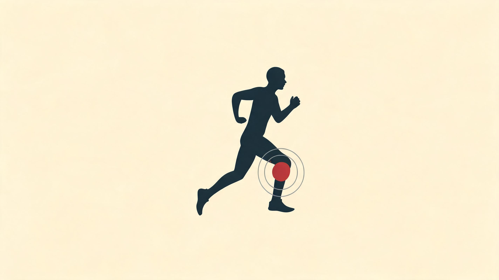
每两个跑者一个停跑 · 八成是攒出来的,不是踩出来的
不是跑得多 · 是这周比上几周快了多少
娱乐跑者关节炎率比久坐的人低 · 中等剂量滋养软骨
力量降总伤率三四成 · 腱病靠慢慢加负荷,不靠消炎
伤不是踩坏的,是修复欠了债
每年每两个跑者就有一个伤到停跑。这一章只想让你带走一件事:身体每跑一步都在借给你一点微损伤,修复就是你还的债——还得上,十亿步都安全;还不上,才出伤。其余细节,都是为了让你认出自己这周欠没欠债。
▾ 本章 11 节 · 点击跳转
跑步不伤膝盖,伤膝盖的是上周跑量突然翻倍。把身体想成一个债主:你每落一次地,它就借给你一点微损伤当本金,修复是你的还款。还款跟得上,这债永远滚得动;某一周睡不够、休不够、加得太猛,还款断了一截,债就开始记账——攒到临界点,就是一处伤。所以预防伤的本质不是改跑姿、不是换鞋,是别让任何一周的还款掉链子。
这事 2014 年 Gabbett 在布里斯班用橄榄球队的数据看明白了。他翻了五年里数千名运动员的训练负荷和受伤时间,发现真正的元凶不是「跑得多」,是「加得猛」。他做了个比值:本周练了多少,除以过去四周平均练了多少,叫急慢性负荷比(ACWR)。这个数落在 0.8 到 1.3 之间,伤得最少;一过 1.5,风险翻到二到五倍。一个常年每周稳稳跑 80 公里的人可以一直跑下去,一个从 30 突然蹦到 60 的人风险陡升——哪怕他的绝对量小得多。说白了,身体不在乎你跑了多远,在乎你这周还款的进度有没有甩开它放贷的速度。这个比值,这一章后面会反复回来。
11.150% 这个数为什么这么稳
跑步的年损伤率长年卡在 50% 上下,放在游泳的一成、骑车的两成旁边,扎眼得很。它之所以稳,是因为它说的不是「摔了一跤」,是「训练被打断至少一周」。
这是 van Gent 2007 那篇系统综述和 Videbæk 2015 那篇 meta 共同的口径。同一把尺子量下来:随便跑跑的人四到五成,备马拉松的人五到八成,新手第一年五到六成,跑了多年的老手反而降到三成——不是他们抗造,是不抗造的早就退出了。
这堆数字里最该记的,是它的构成:八成是攒出来的,肌腱、骨膜、软骨在长期反复负荷下慢慢欠出来的债;只有两成是急性的,扭脚、拉伤、摔跤。这个八二开正好对上跑步的本质——它是一遍遍重复的周期性负荷,不是球场上那种对抗碰撞。所以这一章九成的篇幅都给那八成:怎么别让债越滚越大。
男女总量差不多,但欠债的方式不一样。男的更容易跟腱、腘绳肌、外侧膝痛;女的更容易髂胫束、髌股关节痛、应力骨折。背后是骨盆宽窄、肌肉横截面、激素周期对韧带松紧的影响。但最要命的一项是能量不够——长期吃得比练得少(第 8 章那个 RED-S),在女跑者里更常见,等于一边借债一边断了还款的资金,这里还会回来几次。
先砸一个误解:跑步不伤膝盖。Alentorn-Geli 2017 那篇 meta 看下来,长年娱乐跑者的膝关节炎率约 3.5%,反而比久坐的人(10%)低,也比天天往死里堆量的精英(13%)低。中等剂量的跑步对软骨是「一压一松」的滋养,反而促进它合成。真正伤膝的,从来不是跑步本身,是上周跑量翻倍、缺力量、痛了还硬跑这三件事撞一起。
11.2「我为什么会伤」——三层证据,中间那层最容易弄反
这个问题流行病学的答案不像 X 光片那么直观,得分清关联和因果。下面按证据强度排三层:前两层几乎都能改,最后一层全是被推翻过的「常识」。
第一层,几乎所有研究都同方向的,有三个。最强的单一预测因素是既往伤史:一年内同一个地方伤过,今年再伤那儿的概率比没伤过的高两到四倍。道理不复杂——疤痕组织的纤维排得乱,弹性打折;本体感觉因为养伤变迟钝;人又总高估自己「好利索了」,过早跑回原来的量。三件事单拎出来都不致命,撞一起就是复发。第二个是跑量和加量的速度:Macera 1989 那条经典 U 形曲线后来反复被复现,周跑量 30–60 公里风险最低,过 100 显著升高——但比绝对量更要命的是加速度,同样这一周跑 50,从 10 蹦上来和从 45 走上来,风险差好几倍。第三个是训练太单调(Foster 1998):天天 8 公里、强度一模一样,比有难有易的计划伤得明显多。身体需要起伏才有还款的间隙。
第二层,部分研究支持的,也有几个。跑姿里证据最硬的是落地时的垂直冲击——这个值高,在胫骨应力骨折和膝痛的前瞻队列里预测力较强(步频本身预测力不强,但低步频加大跨步那个组合明显加重膝负荷,后面单讲)。不练力量是个一直被低估的因子:Lauersen 2014 那篇 meta 看下来,每周两次以上力量训练能把伤病率压下三到四成,比拉伸、比改跑姿都强,是所有干预里证据最硬的一项。还有睡不够(Milewski 2014):睡不到 8 小时,伤病风险升约 1.7 倍——睡眠就是还款的黄金时段,生长激素的脉冲、组织修复全在那几个钟头里,断一截,债就开始记账。
第三层,被推翻的常识。按脚型选鞋——「扁平足穿稳定鞋」当过三十年零售圣经,Knapik 2010 那场三千美军新兵的随机对照,按脚型分的鞋和随机分的鞋,伤病率没差别,后面 Ryan、Malisoux 全部复现,连 Nike 自己都从「匹配你的脚型」改口成「匹配你的偏好」。静态拉伸防伤——Yeung 2011 那篇 Cochrane 明确否定,更尴尬的是赛前拉久了还掉力量;它能改善柔韧和拉完的舒服感,这没错,但防伤是另一个命题。后跟着地伤膝——Daoud 2012 那份哈佛队列是这说法的源头,Hamill 2017 把它推翻了一半:改前掌的人膝痛是少了,跟腱和小腿痛却起来了,总伤率没变,只是把债换了个地方记。
| 风险因素 | 证据等级 | 大致风险倍数 | 能不能改 | 本周怎么做 |
|---|---|---|---|---|
| 既往损伤史 | 强 | 2.5–4.0× | 已发生 | 同部位力量长期维持;复发第一周内就医,别「再观察一下」 |
| 跑量陡增 >30%/周 | 强 | 1.8–2.5× | 能 | 周末算 ACWR;过 1.5 下周必减到 1.0;新手卡 10% |
| 训练太单调 | 强 | 1.5–2.2× | 能 | 每周固定 1 天全休 + 1 长 1 快;别「每天 8 公里」 |
| 不练力量 | 中 | 1.5–2.0× | 能 | 每周 2 个 30 分钟力量时段:深蹲 + 单腿桥 + 北欧腘绳 + 提踵 |
| 睡眠 <7h | 中 | 1.3–1.7× | 中 | 睡眠目标 7.5–8h,训练日加 30 分钟 |
| 垂直冲击高 | 中 | 1.4–2.1× | 中 | 步频提 5–10%;跑前 4×100 m 加速训神经 |
| 女性吃得不够 / 月经紊乱 | 强(应力骨折) | 2.0–4.5× | 能 | 能量吃够;月经一乱直接看运动医学 + 查骨密度 |
| 脚型不匹配跑鞋 | 弱 / 被否 | ~1.0× | — | 忽略;按穿着舒服选;2–3 双轮换降 39% 伤率 |
| 静态拉伸不足 | 弱 / 被否 | ~1.0× | — | 赛前改动态拉伸 + 加速跑;静态留到训练后 |
| 着地方式 | 弱 / 争议 | ~1.0× | — | 不刻意改;只在顽固膝痛时由专业人士指导 |
11.3「每周加不过 10%」的现代版,叫 ACWR
每周跑量加不过 10%,是跑步教练界最老的拇指法则。它有数据撑——只是精度比拇指高一档,叫急慢性负荷比 ACWR:本周练了多少,除以过去四周平均练了多少。
Nielsen 2014 那份丹麦 874 人的队列把代价算清了:跑量周增超 30% 的人,伤病风险是周增 10% 以内的 1.59 倍。换句话说——10% 以内相对安全,10% 到 30% 是滑坡,过 30% 就是悬崖。更有意思的是,加猛了不是均匀地把所有伤都拉高,是分部位的:胫骨应力骨折、髌腱、髂胫束对加量最敏感;跟腱和足底更吃总量和坡道;腘绳肌主要被高强度的间歇和节奏跑拉起来。所以哪个地方先抗议,常常就泄露了你这周到底加在了哪。
这个比值落在 0.8 到 1.3 之间最安全,1.3 到 1.5 是警戒,过 1.5 风险翻一到几倍。Gabbett 在橄榄球、板球、好几个项目里测出来都是同一条稳定的 U 形:
这条曲线为什么是 U 形而不是一路往上,关键就在那个「除以四周平均」。比值小于 0.8,是你跑得比身体习惯的还少,体能在掉,重启时反而容易拉伤;0.8 到 1.3,是还款刚好跟得上放贷,债健康地滚着;过 1.5,是放贷一下子甩开了还款,持续两周以上,债就开始失控。也正因为它是个比值,「加 10%」从来不是个绝对数:过去四周平均 40 公里,这周加到 52(比值约 1.3)还行;但过去四周平均才 10 公里(刚开始练),这周加到 13 同样是 1.3,绝对增量只有 3 公里。这就解释了新手最容易栽的那个坑——明明只加了一点点,负荷比照样爆了。
用起来就三件事。测:翻 Strava 过去四周每周跑量算个平均,周日晚拿本周累计一除,就是 ACWR,Google Sheets 五分钟搞定,嫌烦装个 elevate 插件自动算。改:比值到了 1.5,下周强制减三四成;低于 0.8 又不在赛前减量期,慢慢加回 1.0。最忌「补量」——上周少跑了不等于这周可以多跑;感冒、出差、压力大那周,把上限暂时压到 1.2。看:把它写进周日晚的体检清单,和睡眠、晨脉记在一起。跑三四周回头看,你会发现那些小不适,几乎都对应着比值异常的那一周——这就是负荷管理最便宜的一台雷达。
当然别把它当唯一的安全锚,它只看负荷的相对变化,看不见你今天睡了几小时、上周跟老板吵了几架。但它是目前最便宜也最稳的单一变量。下一节说说,为什么这债是攒出来的,不是哪一步踩出来的。
11.4十亿步,和那本修复欠债的账
跑步伤不是哪一步踩坏的,是哪一周还款没跟上。全马约 5 万步,5 公里约 5000 步;每周 50 公里的人一年累计 250 万步,十年 2500 万步。Stanish 1986 那个「跑者的十亿步」说的就是这事:人这辈子大概会跑十亿步,微损伤一直在生成,只要修复跟得上,十亿步都安全;跟不上,就是伤。
难就难在,不同组织还款的速度差得离谱,而你身上这几本账是分开记的。骨头还得最快:它在应力下走 Wolff 定律那条曲线,负荷不大时维持稳态,中等时变厚变强,一旦微裂纹攒得比修复快,就开始往应力骨折滑。骨的修复周期大约三四个月——这就是为什么应力骨折总在加量后六到十周才「突然」冒出来,前几周其实一直在攒裂纹,临界点一过才贯通。肌腱比骨还慢一倍,适应窗口半年到一年,胶原一天才合成一两个百分点,净增量爬得极慢——所以跟腱的早期信号常被忽略三到六个月,等真去看医生,组织已经从单纯刺激退化成纤维化的腱病了。软骨最尴尬:成年后几乎不再分裂,真坏了不可逆;但它偏偏靠「一压一松」吃饭,长期不负重(卧床、上太空)反而萎缩,中等剂量负重才促进它合成——这正是「跑步护膝」那条反常识的力学根源。
所以「十亿步」的重点从来不在「步」那个总数,而在每一周还款的时间够不够。预防伤不是改跑姿、不是换鞋,是给组织留出还款的窗口——睡够、歇够、吃够、力量够。任何一项被压一周,这本账就开始记债。下一节,把这本债欠到极致会长成什么样,一种一种拆开看。
11.5八种最常见的跑步伤,逐一拆
下面这八种,占了跑步医学大约八成的就诊量。每种只讲你真用得上的四件事:伤在哪、为什么伤、什么信号该警惕、怎么处理。数据底盘来自 Taunton 2002 那份 2002 例队列和 Lopes 2012 的系统综述。
这八种里有三个反复出现的共同主题,先记住,后面就好懂:很多膝痛的根其实在髋和脚,膝盖只是在中间被迫歪着走;很多「腱炎」根本不是炎,是退变,所以消炎药没用;几乎每一种,触发都是同一句话——上周加得太猛。
① 跑者膝(髌股关节疼痛 PFPS)· 占 20%,稳居榜首
膝盖骨本该在股骨那条沟里上下滑。当外侧的拉力(髂胫束、股外侧肌)压过内侧(那块叫 VMO 的内侧斜肌),它就往外偏,关节面某一处被反复挤压,软骨遭殃。再往深追,根子常在髋外展太弱和脚过度内翻——它们改变大腿的内旋角度,把那个外偏放大。所以跑者膝不是膝盖坏了,是髋和脚没管好,膝盖夹在中间替它们还债。信号很典型:膝盖骨下方隐痛,下楼、深蹲、久坐起身加重(教科书叫「电影院征」——看完电影站起来膝痛),跑步开头痛、跑开缓解、跑后又痛。解药也清楚:先练髋外展(单腿桥、侧卧蚌式),再把步频提 5–10%(缩小跨步,膝负荷降约一成),配合减量直到不痛。贴扎和护具能短期顶一下,消炎药能止两周痛但不改病。预防就一句:髋臀力量当长期基建,步频长年维持在 175 以上。
② 髂胫束综合征(ITBS)· 占 12%
髂胫束是大腿外侧那条厚带,从髋一直走到小腿外侧。老理论说它在膝盖屈伸时「摩擦」股骨,Fairclough 2006 那项解剖研究推翻了:它其实是反复挤压下面的脂肪垫,不是滑动摩擦,膝屈 30 度左右(着地负重那一刻)挤得最狠——这就是为什么下坡跑特别容易犯。一个让很多人不爽的推论是:拉伸髂胫束没用,它本来就拉不动,位移过 3 毫米就会受伤。信号是膝盖外侧偏上两三厘米一个很精确的痛点,下坡加重,通常跑五到十分钟后突然冒出来。解药还是髋外展力量(单腿桥、单腿硬拉),严重的要短期停跑;滚泡沫轴主观舒服,证据弱,愿意做就做。
③ 跟腱病(Achilles Tendinopathy)· 占 11%
跟腱是小腿三头肌的共同止点,扎在脚后跟上。这是现代运动医学最重要的一次翻案——跟腱「炎」其实不是炎。显微镜下几乎找不到经典炎症细胞,真正的病变是胶原排得乱、新生血管乱长,所以更准的叫法是腱病。直接的推论是:消炎药几乎没用,没有炎可消;真正有效的是反复给它可控的力学刺激,把胶原重新捋顺。信号是跟腱晨起僵紧、下床头几步痛、跑后第二天最痛,能摸到一个增厚的压痛点。金标准是 Alfredson 离心训练:站在台阶边缘,脚跟悬空,慢慢往下放(3 秒),一组 15 次,每天两次,连做 12 周——多项随机对照测下来有效率约八成,赢过针灸、超声波、消炎药。高危的是 40 岁以上、加量太猛、坡道练太多、突然换极简鞋的人。
④ 足底筋膜炎(Plantar Fasciitis)· 占 8%
足底筋膜从脚跟扇形铺到前脚掌,是足弓的主要被动支撑。跟跟腱一样,这也不是真「炎」,是退变。深层根源常常不在脚底——小腿太紧导致踝背屈不够,蹬地时足弓异常旋转,把筋膜过度拉扯。最教科书的诊断标志:晨起前几步剧痛(踩下去筋膜被猛地拉开),久坐起身第一步也痛。解药是 Rathleff 2014 那套渐进负荷(脚趾下垫毛巾,在台阶上慢速提踵),效果优于单纯拉伸;夜间夹板短期减晨痛。九成病例一年内自然好转,先做保守的,别急着打针——类固醇短期止痛但破坏胶原。
⑤ 胫骨夹痛(内侧胫骨应力综合征 MTSS)· 占 13%,新手重灾区
痛在胫骨内缘中下三分之一。老理论叫骨膜炎,MRI 看下来其实是骨膜和骨皮质交界处的应力反应——它和应力骨折在同一条连续谱上,从轻到重排成:夹痛 → 应力反应 → 应力骨折。触发是加量超出骨的还款能力,叠加脚过度内翻和维 D 缺乏。新手第一年六成以上会碰一次。信号的关键是「一长条」不是「一个点」——痛沿胫骨内缘五厘米以上线性分布;一旦缩成三厘米以内的局灶点痛、或者夜里也痛,警惕已经滑向应力骨折,去做 MRI。解药:减量五到八成,严重的停跑两到四周转游泳骑车;强化小腿后侧;查维 D 和铁,缺就补。
⑥ 应力骨折(Stress Fracture)· 占 5–10%,最该敬畏的一种
累积微损伤越过了骨的修复极限,裂纹合并成真骨折。常见部位:胫骨一半,跖骨两成,股骨颈虽只占 5% 却最危险。整个过程通常六到十周——这就是为什么它看起来像「突然」发生,其实前两个月一直在攒。临床上最要紧的是分高低风险:胫骨干、腓骨、第二三跖骨这些低风险的,保守治疗六到八周能愈,预后好;股骨颈、舟骨、第五跖骨基底(Jones 骨折)这些高风险的,容易移位、不愈合甚至要手术,马虎不得。信号:局灶痛(三厘米以内)、夜间痛或休息痛、跳起来痛。诊断的坑是:X 光要两三周才看得出骨痂,MRI 一周内就能显示——所以 X 光阴性不能排除应力骨折,别拿它当挡箭牌。女性月经一异常就去看医生,别拖,因为吃得不够 + 低骨密度 + 闭经那套组合,是应力骨折最硬的推手。
⑦ 半月板与软骨损伤 · 占 5–8%
半月板是膝关节的纤维软骨垫,这一类急性多于慢性。大多是扭转伤——脚固定着、上身一拧,剪切力撕裂它。慢跑本身极少引发,反倒是越野、不平地形、变向急停时高发。这里正好再回那句反常识:跑步护膝。同一份 meta 看下来,娱乐跑者关节炎率 3.5%,远低于久坐的 10%,中等剂量的跑步反而是软骨的「一压一松」滋养,完全不跑才最伤膝。处理上,退变性的撕裂,随机对照测出来关节镜和物理治疗长期效果相当——保守优先。
⑧ 腘绳肌拉伤(Hamstring Strain)· 占 6%
出事几乎都在高速跑(超过六成最大速度)。瞬间是摆动相的末尾:大腿前抛、小腿前甩,腘绳肌正使劲离心收缩去刹住小腿,此刻它被拉到最长还要发最大力,张力一超过组织强度就拉伤——正好踩在它离心控制最弱那个力学软肋上。预防有个证据极硬的单项:北欧腘绳(跪姿、固定脚踝,身体缓慢前倾下放)。Petersen 2011 那份 942 人的随机对照测下来,每周两次,能把腘绳肌伤风险降七到八成。任何有冲刺需求的跑者都该练。
讲完八种,再砸一个被滥用的误解:消炎药对腱病几乎没用。布洛芬、萘普生在跑步圈被吃得太随便,但跟腱病、足底筋膜炎、髌腱病全是退变不是炎症,既无炎可消,动物模型里还可能拖慢胶原合成。三天内止个急痛可以,长期吃害多于利。真正治本的是慢慢加负荷——离心训练、那套 Alfredson 协议。
八种伤路径各异,但你不必背全。任何持续超过五天的小不适,只要测三件事就能归到一档处理:痛点多长、什么时候痛、有没有肿热。绿区——痛是一长条(超 5 厘米)、只运动时痛、跑开能缓解、不肿不热:减量三到五成 + 针对性力量,四周复评。黄区——痛收成 3–5 厘米的一团、跑前两公里就痛、跑后第二天还残留、或一年内同处复发两次以上:减量五到八成 + 系统康复,两周复评,不好就升红区。红区,立刻就医别再观察——夜里也痛、痛点小于 3 厘米加跳起来痛(应力骨折嫌疑)、关节肿加卡顿、急性剧痛加瘀斑跛行、跟腱摸到凹陷加提踵无力(可能断裂,急诊),女性闭经超三个月又骨痛,跑步中晕厥胸痛心悸。一条心法:判不准就往严重那档放——错过自助窗口最多多耽误四周,错过红区可能多耽误半年甚至留终生影响。
这八种都是某个零件欠了债。下一节看一种更可怕的:不是哪个零件坏,是整个债主把账一次收了。
11.6过度训练:不是零件坏,是整个债主把账收了
单一肌骨损伤是某个零件坏了。过度训练综合征(OTS)是另一回事——成绩陡降、情绪抑郁、激素紊乱、免疫塌方,恢复期能拖到数月乃至数年。这是耐力运动员最严重也最难逆转的状态:相当于你欠债欠到全面违约,债主一次把账全收了。
它是一条连续谱,ECSS 和 ACSM 的联合声明分成三档。功能性过载是健康的:短期几天到一周猛练一下,成绩暂时下降,减量一两周就反弹超过原水平——训练营、冲击周用的就是它。非功能性过载已经过线:累积负荷加恢复不足,成绩往下掉两周到几个月,人明显疲,激素轻度乱,但停训几周到几个月能缓过来。过度训练综合征是极端版:成绩塌陷能持续半年到数年,激素轴大幅失代偿、免疫崩、情绪重度抑郁、月经停、性欲没——已经接近慢性疲劳综合征的样子。
难就难在它没有药,处方只有时间——通常六周到六个月。最初两到四周完全停结构化训练,只散步、做点温和瑜伽;然后极慢地引回低强度耐力;高强度一概不碰,直到 HRV、晨脉、情绪连续四周以上回到基线。绝大多数人都严重低估了恢复时间——以为两周能搞定,反复跑回去再塌,反而把病程拖长一倍。这跟伤后回归是同一个心魔。
所以日常监测尤其值钱,而且和上面那台 ACWR 雷达正好配对——ACWR 看你借了多少,下面这几项看身体扛不扛得住:晨起 HRV 和静息心率连着两周低于基线一成、同配速慢跑心率比四周前高 5 拍以上、一个月内反复两次以上感冒、女性月经一乱(直接红旗)。任意两项同时亮,立刻减量五成,塞进一两周全休。别咬牙——咬牙在这件事上只会让账越滚越大。
11.7跑鞋的真相:三件事真有用,一件是神话
跑鞋是跑步装备里争议最多、营销最重的一件。从 1970 年代到今天的碳板鞋,鞋的演化一路伴着跑步医学的反复打脸。这里只看一件事:哪些变量真能改变伤病率或成绩,哪些只是话术。
先说真有用的三件。多双鞋轮换是性价比最高的预防——Malisoux 2015 那份 264 人、5 个月的队列里最该记的一个数字:同时用两双以上不同跑鞋的人,伤病率比只穿一双的低 39%。机制大概是不同鞋的几何和缓冲让不同肌群轮着担负荷,任何单一组织过载的概率都降了下来。实操就一条:训练鞋、比赛鞋、慢跑鞋三双转着穿,哪双都别天天连穿。别突然换落差是第二件:从厚跟的高落差鞋猛切到接近赤足的低落差或极简鞋,是跟腱炎和小腿拉伤的高发原因——Ridge 2013 那份随机对照里,操之过急的人足部应力骨折显著增加,过渡期得给足半年到一年。碳板鞋别天天穿是第三件,这要从它为什么快说起。
2017 年 Nike 把超临界泡棉和全长碳板装进一双鞋,力学上做对了两件事:那种泡棉的能量回返超过 85%,比传统材料高一档;碳板在蹬地瞬间给一个硬支点,省下脚踝变形那部分耗能。两件叠起来,Hoogkamer 2018 等实验测到跑步经济性提升约 4%。实战看得见:这几年精英马拉松成绩系统性快了 1–3%,业余跑者实测改善 1–4%(也有约 5–10% 的人穿了反而变慢,所以试穿比跟风重要)。但这里有个还债的隐患:肌腱长期靠碳板省力会被惯坏,真到比赛日反而少了一份力学储备。所以碳板鞋只放在重要比赛和长距模拟课,平日用两三双普通鞋轮换。我自己冲 sub-3 也是这么排的——碳板鞋当成赛日才动用的那张牌,平时让小腿和跟腱老老实实自己干活。
至于那件神话,前面已经砸过了:按脚型选鞋。零售员那张足部扫描图很有仪式感,但和你的伤病率无关。Nigg 2015 提的那条「舒适过滤器」才是对的——穿着最不别扭、不疼、不滑的,就是最适合你的鞋。
| 跑鞋变量 | 力学影响 | 损伤证据 |
|---|---|---|
| 高落差 (10–12 mm) | 降跟腱负荷、增膝负荷 | 无明显总伤率差异 |
| 低落差 (0–4 mm) | 增跟腱负荷、降膝负荷 | 突然转换→跟腱炎风险升 |
| 缓冲厚 (Hoka 类) | 降冲击峰、增刚度感 | 踝扭伤略升,膝伤略降 |
| 超临界 + 碳板 | +4% 经济性 | 个别报告胫骨负荷异常增 |
| 鞋按足型匹配 | — | 无效(Knapik 2010 等) |
| 多鞋轮换 | 不同肌群轮换负荷 | -39% 损伤率(Malisoux) |
| 主观舒适度 comfort | — | 预测损伤优于足型 |
11.8跑姿能调的边界,比你想的小
调跑姿能减伤——跑步教练界经常这么承诺。流行病学没那么乐观。四个常见干预里,只有一个证据较硬,其余的都该把话收回去。
那个证据最硬的是提高步频:在原步频上提 5–10%(典型从 160 提到 175–180),能缩小过大的跨步,把落地点拉回身体重心下方,膝关节力矩降一成多,对跑者膝、髂胫束、髌腱都有积极证据。代价只是小腿能量代价微升约 3%,从 5% 起步、两三周适应就好。这是跑姿这一摊里唯一我会主动建议的事。
其余三个都得打折。改着地策略——从后跟切前掌,初始冲击峰确实降一大截,但接触时间变长,累积冲量反而上升;膝负荷降了,跟腱和小腿负荷却升三到五成;总伤率没降,只是把债换了个地方记。所以它只在某些顽固膝痛里当治疗手段有意义,不该当成一刀切的预防。刻意压低垂直振幅——理论上越小越省能,实测它和经济性的相关只有微弱的程度,业余跑者硬压反而增加做功,顺其自然别折腾。追求教科书完美跑姿——根本不存在:综述一致发现精英之间的跑姿差异巨大,几乎找不到共同的「理想模式」。每个人被长期跑量打磨出来的跑姿,通常就是他个体的最优解,强行改未必有收益,反而可能引入新的代偿伤。
所以跑姿这件事如果有什么秘诀,那就是分清哪种人值得调:有明确力学缺陷(严重跨步过大、明显膝内扣)又恰好伴着特定伤的,值得在专业人士指导下精修;别的人,无症状无瓶颈,不必折腾。
11.9把账还利索 · 一份循证预防清单
前面几节浓缩成一份清单。它不承诺「避免一切伤」——50% 的年发生率意味着再小心也有概率。它只做一件事:把你能控的那些还款变量用足,让债别失控。
训练管理
- 周跑量增加 <10%(新手)或 ACWR <1.3(进阶)
- 每周至少 1 天完全休息,每 3–4 周减量周(跑量 -30%)
- 跑量分布 80/20:80% 慢跑,20% 中高强度
- 让强度有起伏(别天天一个配速)
- 连续两天高强度训练
- 从零到马拉松 <16 周
力量训练
- 每周 2 次,30 分钟/次,与跑步日错开或跑后
- 核心动作:深蹲、硬拉、单腿桥、北欧腘绳
- 部位重点:髋外展、臀大肌、小腿、核心
- 提踵(双腿 + 单腿)每周 60+ 次
- 不在重要比赛前 3 天做新动作
- 「我跑步就是力量训练」——错
恢复管理
- 睡眠 >7 小时
- 蛋白质 1.6–2.2 g/kg 体重/日
- 能量吃够(女性尤其别长期亏空)
- 维 D、铁蛋白别缺
- 水分 + 钠 + 钾充足(尤其热环境)
- 晨脉 / HRV 连续两周异常 → 减量
环境与装备
- 2–3 双鞋轮换(-39% 损伤率)
- 按穿着舒服选鞋,不按足型
- 柏油 > 混凝土;偶尔越野/草地
- 冰雪严寒不做准备活动别跑
- 突然换极低落差或极简鞋
- 慢跑也穿碳板鞋(惯坏肌腱)
11.10伤后回归 · 别从你离开时的状态接着跑
伤后回归是损伤管理里最被低估的一环。三成的伤一年内复发,绝大多数是因为回得太急,或者抱着「一定要从我停跑那天的状态接着跑」的执念。这一节给一份循证的回归框架。
开始结构化回归前,先过一份「绿灯清单」,得全满足:静止时不痛至少三天;受伤处不肿;关节活动度左右差不超一成;受伤肌群力量恢复到健侧八成以上;走 30 分钟不痛;连续跳 30 次、单脚跳 20 次都不痛;最后试跑 5 分钟不痛、24 小时不反弹。全勾上,才动第一步。
然后照这条曲线慢慢还款式地加回去——把伤前的量当 100%:
| 周 | 跑量(占伤前) | 强度 | 触发回退的信号 |
|---|---|---|---|
| 1 | 0–10% | 跑 / 走交替(1 跑 / 4 走 × 8 次) | 任何疼痛 >2/10 |
| 2 | 20% | 连续慢跑 | 跑后 24h 不退的酸痛 |
| 3 | 30% | + 1 次轻短的节奏跑 | 同部位炎症复发 |
| 4 | 50% | 恢复正常训练分布 | — |
| 6 | 70% | 恢复轻量间歇 | — |
| 8 | 90% | — | — |
| 10 | 100% | 正常训练 | — |
核心就一条疼痛原则:跑步时痛在 2/10 以内、5 分钟内消失,继续;痛到 2–5/10 但跑着跑着减轻,减速继续、盯紧;痛过 5/10 或越跑越痛,立刻停、退一格;跑后 24 小时又冒出痛或肿,下次直接回退一格。
这套框架简单,难的全在心态——你已经停了六周,看着别人跑会发慌,想偷一周往上蹦。那三成的复发率,就是从这种偷蹦来的。把 0-10-20-30-50-70-90-100 这串数字写到日历上做成回归地图,每周末问自己一句:这周触发过回退信号吗?有,下周就自动退一格,别往上爬。再加一个最敏感、也最便宜的内部仪表——晨起摸一下:跟腱僵紧或足底踩地痛持续多久,5 秒以内正常,5 到 30 秒是还在适应,超过一分钟就退一格。这是你自己能拿到的、最准的一台还债进度表。
11.11辅助治疗 · 真正治本的只有一类
从冰敷到打针,跑步医学辅助治疗的市场极大,证据强度差得也极大。下面这张表把常见干预按证据强度排一遍——你会发现真正治本的只挤在最下面那两行。
| 干预 | 证据强度 | 适用场景 | 实际作用 |
|---|---|---|---|
| 冰敷 | 中(急性) | 急性损伤 24–48h | 减肿、止痛(短期);慢性损伤无效甚至延愈 |
| 热疗 | 低-中 | 慢性僵硬 | 缓解症状,不改变病程 |
| 泡沫轴 | 低 | 跑前 / 跑后 | 短期改善活动度,无长期防伤证据 |
| 筋膜枪 | 低 | 肌张力高 | 类似按摩,主观舒缓显著,证据有限 |
| 按摩 / 推拿 | 中 | 训练后 | 促恢复主观感受,减轻酸痛 |
| 静态拉伸 | 低 / 不防伤 | 柔韧不足者 | 提活动度;赛前久拉降力量,不防伤 |
| 动态拉伸 | 中 | 跑前热身 | 提表现,降急性肌伤风险 |
| 消炎药 NSAID | 中(急性) / 低(慢性) | 急性炎症 | 短期止痛;长期使用抑制组织修复 |
| 类固醇注射 | 低(腱病) | 顽固症状 | 短期止痛,长期可能加重退变 |
| PRP 注射 | 中(部分) | 慢性跟腱/髌腱病 | 有部分阳性证据,效果不戏剧化 |
| 冲击波 ESWT | 中-强 | 跟腱病、足底筋膜炎 | 六到七成成功率,顽固病例可考虑 |
| 离心训练 | 强(腱病) | 跟腱病、足底筋膜炎、髌腱病 | 治本金标准,约八成成功率 |
| HSR 慢速重负荷 | 强(腱病) | 同上 | 与离心同等有效,部分研究更优 |
这张表里真正能记一辈子的,就最下面两行:离心训练和慢速重负荷,所有「腱—止点」类伤的金标准。Alfredson 离心训练 12 周成功率约八成,和消炎药、超声波、按摩、打针全比一遍仍然最强——但前提是肯做满 12 周。具体动作:站台阶边缘,前掌着地、脚跟悬空,健侧推上去,然后患侧脚踝慢慢下放三到五秒。这套设计里最反直觉、也最关键的一条是:允许疼痛在 4/10 以内做。如果你「等不痛了再练」,组织从没被重塑过,复发率会接近回到原点。头三四周症状可能反而加重,那是正常的组织响应;六到八周开始改善,12 周完成。它最反直觉的内核,其实和这一章从头讲到尾是同一句话——还债没有捷径,你得让组织在受控的负荷下,一遍遍把胶原重新捋顺。
这一章拆了八种伤、一种系统性崩塌、跑鞋和跑姿的真真假假,但底层只有一句话:某一周修复欠了债。其余细节会落在别处——怎么把力量和恢复排进一周的课表,训练那章讲;吃得够不够、女跑者那条能量红线,补给那章讲。但伤病这一章你只要带走这一句就够本——
伤不是某一步踩坏的,是某一周修复没还上债;别让任何一周的睡眠、休息、力量掉链子,这债就永远滚得动。
伤病机制要点
- 跑步年伤病率 ~50%:80% 累积过载,20% 急性。最强预测因子:之前伤病史 > 跑量改变速度 > 跑量本身。
- ACWR sweet spot 0.8-1.3:>1.5 伤病风险陡升。跑量增加 <10%/周是粗糙但方向正确的旧规则。
- 8 大伤病按发生率排序:PFPS (跑者膝) 20% > MTSS (胫骨夹痛) 13-20% > 跟腱病 10% > 足底筋膜炎 5-10% > ITBS 5-15%。
- 跑姿干预对伤病预防证据极弱:RCT 几乎无支持。真正有用的是步频 +5-10% 减小 overstride,以及避免明显 overstride。
- '按足型选鞋'是营销神话:Knapik 2014 推翻,Malisoux 2015 显示鞋款轮换降伤病 39%。原则:穿着舒适 + 轮换。
主要参考:[Gabbett 2016 · BJSM][Nielsen 2014][van Gent 2007][Videbæk 2015][Taunton 2002][Lopes 2012][Lauersen 2014][Alfredson 1998][Petersen 2011][Malisoux 2015][Hoogkamer 2018][Alentorn-Geli 2017][Knapik 2010][Fairclough 2006]
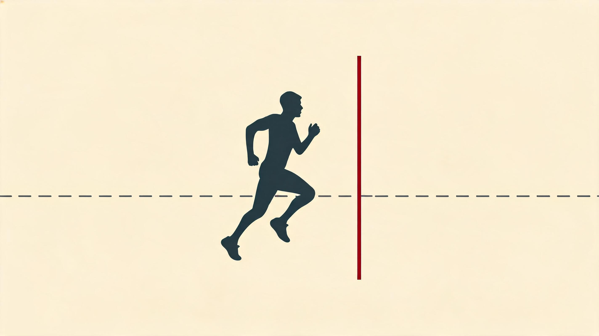
练着的人每十年掉 5% · 停了的掉 10% · 65 岁能跟 40 岁久坐的打平
5K 到全马男快一成 · 跑到三百英里以上女性常赢
划天花板的高度 · 不决定你爬多高 · 测表型比测基因准
Kipchoge 1:59:40 · 三个普通变量同一天推到峰值 · 不是超能力
个体差异与人类极限
前面十一章讲的是跑步本身怎么运转。最后这一章只想把一件事说透:同一份训练计划,放到两个人身上,跑出的成绩可能差出十几分钟。年龄、性别、基因把每个人的身体调成了不一样的样子;而所谓人类极限,也从来不是一个数字,是一条每个人各占一段、还在往前挪的边界。
▾ 本章 7 节 · 点击跳转
没有放之四海的最优训练——只有适合你这副身体、这个年龄、这段基因的那一种。别人脚上的鞋再贵再快,不是你的码,硬塞进去只会磨破脚。这一章讲的就是怎么认出自己的码,以及这副身体的天花板到底能抻多高。
先讲一个被工程化逼出来的边界。
2019 年 10 月 12 日清晨,维也纳的 Prater 公园,气温 9°C、湿度 90%,对马拉松接近完美的凉湿天。Kipchoge 站在起跑线上,前方 41 名世界级选手排成 V 字给他挡风。1 小时 59 分 40 秒后他冲线——人类第一次在 42.195 公里上跑进 2 小时。这场比赛后面还要细说,这里先记住一个数:早在 1991 年,生理学家 Joyner 就用一个公式算过马拉松的理论极限,1:57:58;二十八年后 Kipchoge 离那个数还剩 1 分 42 秒。这一章讲的,就是这条边界上正在发生什么,以及它为什么在你我身上,各落在一个不同的位置。
12.1年龄:这条下坡的斜率,你能选
把有氧能力画成一条随年龄走的线,你会看到它在 25 岁后一路下行。这看着像宿命,其实不是——同样往下走,坡有陡有缓,而缓那一条,是练出来的。
25 岁后,VO₂max 大概每十年掉一截:不练的人掉一成,坚持练的人只掉半成。差别藏在掉的是哪一段。最大心率几乎拦不住,每年雷打不动往下退个零点几拍,跟你练不练没关系;但每跳射出多少血、肌肉把氧从血里捞出来烧的本事——这些训练能按住一大半。
这半成和一成的差,几十年累下来吓人。一个 25 岁 VO₂max 55 的业余跑者,一直练到 65 岁还在 45 上下;要是中途停了,65 岁掉到 36,差不多就是「日常爬个楼都费劲」的门槛了。两个人寿命可能一样长,差的是 healthspan——能跑能跳能去爬山的那段有效年限。下面这张图把这两条坡并排放着:
红线那头有个反直觉的事实:一个坚持练的 70 岁跑者,VO₂max 跟久坐的 40 岁人差不多。第一次听很离谱,但它在大样本里反复被验出来。这不是返老还童,是把「70 岁该是什么样」这件事改写了。Ed Whitlock 73 岁跑出 2:54 的马拉松,Gene Dykes 71 岁也是 2:54——都不是孤例,是训练剂量给够时,身体真实可塑性的边界。
但有一样跑步按不住,得专门防:肌肉量。30 岁后骨骼肌每年掉约 1%,60 岁后加速,而且专挑快肌纤维下手——这就是「人老了爆发力垮得比耐力快」的细胞学原因。光跑步保得住慢肌,保不住快肌。所以中老年跑者必须加力量,而且得有跳的成分(跳绳、跳箱),光匀速跑不够。配套的还有蛋白:年纪越大身体对蛋白的反应越钝,65 岁以上得吃到每公斤体重 1.2 到 1.6 克,还要分餐,每餐至少 30 克才点得着肌肉合成。
所以这条坡真正的含义不是「衰老躲不掉」,是坡的斜率你能选。同一个 45 岁的人,坚持练,通向 65 岁还揣着一台 40 岁的发动机;停了练,通向 65 岁坐着就喘。下一节看另一个被普遍误读的差距——男女。
12.2性别:那条差距,跑得越长越合拢
男女在成绩上确实有统计差距,但它的来源和大小都被人想偏了。它不是「女性弱」,是几个能测量的生理变量在起作用——而且这些变量随距离改变方向。
差距的底子,是几样实打实的硬件差:男性心脏更大、血红蛋白更高、肌肉占比更大、必需体脂更低。换算到 VO₂max 上,按绝对值算女性低三四成,但那大半是体型撑大的;一旦按每公斤体重算,差距缩到一成上下;再扣掉脂肪、只看每公斤瘦体重,差距只剩半成到一成。光这一串就说明:你看到的「差距」有多大,全看你拿什么去除。
更有意思的是,这条差距会随距离一路合拢,最后还反转。5K 到全马,男比女快 11% 到 12%;到 50K 缩到 8%;100K 缩到 4%;跑到 300 英里以上的超马,基本持平,甚至女性赢。距离越长,女性脂肪利用率高、配速稳、能量平衡好的优势越能兑现;男性那身肌肉、那点血红蛋白、那股瞬时功率,在短距是碾压,到超长距反倒成了负担——多出来的肌肉本身要供血供氧,多出来的体重要一步步扛过去。下面这张图把这条合拢线画了出来:
反转不是图上的纸面推论。2019 年 Jasmin Paris 拿下 268 英里的 Spine Race 总冠军、破纪录 12 小时,2024 年又成了史上第一个跑完 Barkley Marathons 的女性;Courtney Dauwalter 多次在 200 英里以上的赛事里把男子总冠军甩在身后。统计上,赛距过了约 195 英里,女子拿总冠军的概率明显往上走。所以如果你是女跑者,长距和超长距才是你的相对优势区——别拿「男比女快一成」这种短距数据,去给自己的天花板画线。
性别这一节还有个被忽视了快一个世纪的变量:月经周期。过去九成的运动科学研究只用男性被试,所谓「标准」建议是照男性生理画的,这盲区到 2020 年代才被正经讨论。周期里卵泡期糖代谢效率高、适合上强度,黄体期核心体温升、热耐受降、同样强度感觉更累——但这套别照搬成「严格分段课表」。周期长度个体差异极大,激素峰值的精确时间没法靠 App 猜,套别人的模板大概率错。能落地的只有一条:把周期、训练 RPE、当天表现一起记进日志,几个周期下来摸自己的规律。这又是「别人的最优解不是你的」的一个缩影。
顺带说一个不分男女的红线——REDs(运动相对能量不足)。老名字叫「女性运动员三联征」:吃得不够、月经乱、骨密度掉。2014 年才搞清楚男性也一样会中招。机制不绕:每公斤瘦体重每天可用的能量掉到 30 千卡以下,下丘脑就当闹饥荒,把生殖这套「非急需」的开销全关掉以求活命。所以闭经从来不是「练得狠的勋章」,是身体亮的红旗——出现闭经的女跑者,骨密度可能 30 岁就等同 70 岁老人,而且这种流失往往补不回来。你最近一次有意识地算过自己每天到底吃够没有,是什么时候?
12.3基因:它画线,但不替你填线
「认真练,你最后能到什么水平,是基因定的」——这是冷静的事实。「基因定一切,所以练也白练」——这是错的。基因划天花板的高度,训练决定你爬多高;两者吵完架,才得出你真能跑到的成绩。
那项把这件事钉死的研究叫 HERITAGE:用同一份 20 周计划,练了 99 个家庭共 481 人,把家系和训练反应摆一起看。结论有几条很扎实:VO₂max 的起点水平,约一半看遗传;同一份计划练下来,有人涨 0、有人涨 60%,而这个「涨幅」本身也有约一半是遗传的;还有约一两成的人是「低反应者」,怎么练 VO₂max 都几乎不动——但他们的乳酸阈、跑步经济性、体重,往往还在改善。换句话说,就算你抽到 VO₂max 这条不爱涨的签,别的门照样开着。
被研究得最多的两个基因,顺带认一下脸。ACTN3 管快肌纤维的一个结构蛋白:RR 型快肌结构完整、爆发力强,XX 型偏耐力。西非人群 RR 高频,这是肯尼亚和牙买加短跑霸权的部分遗传底色;世界顶级短跑选手里 RR 比例超过 99%。但长跑精英里 RR 和 XX 都有——基因从不是单一开关。ACE 那个 I/D 多态也类似:I 型关联耐力,珠峰登顶者里高频;D 型关联力量爆发。同样,它只是众多关联基因里的一个,不是判决书。
所以市面上九十九美元起的「运动天赋基因报告」,基本是噪音。它通常只测十几到几十个位点,然后给你贴个「力量型/耐力型」的标签。可运动表现是几千个位点加表观遗传加训练史加营养加心理一起搅出来的——HERITAGE 用挑得最好的 21 个位点,也只解释了不到一半的训练反应,商业报告靠十几个位点贴的标签,预测力更低。真想搞清自己的天花板,该测的不是基因,是表型:VO₂max、乳酸阈、5K 成绩——这些是基因和训练已经打完架的结果,比任何基因检测都准。基因划线,训练填的是线底下那片面积;而面积有多大,几乎全攥在你自己手里。
12.4极限:Kipchoge 那 1:59,不是超能力
把开头那场 1:59:40 放回 Joyner 的公式里看,它就是「一个生理学公式,在最优条件下,被推到了边界」的现场。
Joyner 1991 年那个三因子模型简单得很:马拉松成绩 ≈ 发动机多大(VO₂max)× 油门能压多深(能维持的 %VO₂max)× 油耗多省(1/跑步经济性)。三个相乘,动一个会被另外两个放大。同样 VO₂max 都是 60 的两个人,一个维持 80%、油耗 230,一个维持 88%、油耗 200,马拉松能差出二十多分钟。关键在于:VO₂max 五年就顶到天花板,但「能维持的百分比」和「油耗」可以连着改善十年以上——这就是「老跑者越跑越快」的账,也是 Kipchoge VO₂max 只有 84(根本不是历史最高)却能跑 1:59 的解释。
而这场 1:59 不算官方纪录,是因为它压根不是普通比赛,是一次系统优化的工程试验。V 字队形挡风一项就省下每公里七到九秒,激光在地上标着配速线,补给员骑车把凝胶送到手上不用停,脚上那双特制 Alphafly 又把油耗抬了约 4%。这些加起来大概贡献了 1.5 到 2.5 分钟。所以它不能等同于无辅助的官方破二——但作为「人类潜能此刻能到哪」的证明,分量没掉:它把生理加工程的总和能摸到的那条线,实打实划了出来。
Kipchoge 那天的体内,无非是三个普通变量被工程化地推到了个人极限:VO₂max 约 85、能维持约 85%、油耗约 190,三者一乘,正好是 2:50/km × 42.195 公里 = 1:59:40。数学就这么对上了。他不是有超能力,是把三个再普通不过的生理零件,在同一天同时顶满。这是过程的纪律,不是基因的奇迹。
这同一个公式,落到我身上一样成立。全马 PR 3:20、目标 2026 上马 sub-3。年龄这关我暂时还在「能选」的一侧——但「能选」不等于「轻松」。我能撬动的,恰恰也是这三个零件里后两个:
- 发动机(VO₂max):三十出头,大概率早够用了,再榨空间有限。这一项不是我的主战场。
- 油门(能维持的百分比):这是真能动的——靠阈值课把乳酸阈往上抬,前面几章反复讲的那根排水管。
- 油耗(跑步经济性):慢变量,靠力量、靠步频微调、比赛日穿碳板鞋,一年年偷偷涨。它是复利。
所以对一个冲 sub-3 的业余跑者,真正的杠杆从来不是把某一项练爆,是三项一起往前拱一点点——相乘之后,那个「一点点」会被放大成十几分钟。这就是为什么全维度推进,比死磕单点划算。Coros 我盯的也是这套:乳酸阈配速和静息心率每月拉一次曲线,看的就是后两个零件有没有在动。
跑步极限其实分两类:软边界是工程和装备能往前推的部分(挡风、碳板鞋、补给),过去二十年的进步主要来自这儿,光一双超临界泡棉鞋就推了 2% 到 4%;硬边界是生物学定死的部分(肌肉效率上限、心脏每跳射多少血、骨骼扛多重)。软边界的红利会慢慢吃完,之后每一秒都更贴近硬边界。有人 2022 年照现有模型估,物理极限大概在 1:57:58——跟 Joyner 1991 年那个数几乎一模一样。三十年过去,我们对极限的估计基本没动,这件事本身就值得记一笔。
12.5跨物种:这副身体,本就是为长跑造的
百米冲刺里,人类被几乎所有大型陆生哺乳动物碾压:猎豹一秒 33 米,马 22 米,人才 12 米。但把赛道拉到 30 公里、40°C、不许停——人能跑赢马。
威尔士那个每年办的「人马拉松」(35 公里越野),从 1980 年起人类已经多次拿总冠军,天越热越占优。这不是侥幸,是 200 万年演化攒下的本钱。Bramble 和 Lieberman 2004 年在《Nature》提的「天生会跑」假说说得很清楚:200 万年前的直立人,身上就已经长齐了一套为耐力跑准备的硬件——长跟腱、足弓、颈韧带、汗腺、发达的臀大肌、偏多的慢肌纤维——而这套配置,原封不动地传到了今天的你身上。
换个说法你可能更有体感:你晨跑时出的那身汗,是一百万年前祖先在卡拉哈里追羚羊用的同一套散热系统;你跑步时呼吸能随便切换节奏、不必死锁在步幅上,是猫科动物没有的演化特权;你能在 30°C 下连跑一小时、而马只能撑十五分钟,靠的就是这套散热架构。早期人类追猎物,靠的正是这个:速度上追不过,但能在大中午持续追——猎物每冲一次就过热一次(它们靠喘气散热,效率低),人靠汗液蒸发能撑好几个钟头,最后把猎物追到中暑倒下。这种打法在卡拉哈里的桑人那里至今还活着。
所以「人的身体不是设计来跑这么多的」这种话,其实把方向说反了。从演化的时间尺度看,我们 99.5% 的存在都是狩猎采集者,日均移动十来公里、动不动就得跑。是久坐才反常,马拉松是回归。把跑步说成一种「健康干预」,是工业化两百年逼出来的临时说法——这副身体的默认状态,本来就是在动。
12.6剂量:你到底在追哪条曲线
最后一个该拆的问题:运动量和健康、寿命之间是什么关系?越多越好吗?
过去十年一堆大规模流行病学研究给的答案基本一致:运动量和全因死亡率是一条 U 形曲线。从久坐起步,每周加到 150 到 300 分钟中等强度,死亡率往下掉三四成,收益最甜;再往上加到四五百分钟,还有益,但边际收益开始递减;到了极量,有些研究看到死亡率重新抬头,但也有研究没看到。
其中最常被拿来说事的是哥本哈根那项 2015 年的研究:跟久坐比,「轻量跑者」(每周一两个钟头慢跑)死亡率降得最狠,而「重量跑者」(每周 4 小时以上快跑)跟久坐没显著差别。但这一组样本只有 40 人,后来多数研究没能复制出来,所以「极量有害」目前只能算证据偏弱,别拿它当判定标准。更稳妥的说法是:对寿命的边际收益过了每周 150 到 300 分钟就开始降,但「降」不等于「负」——极量运动者的全因死亡率并不显著高于久坐者,而健身和表现的收益是巨大的。
所以这件事真正要回答的不是「极量好不好」,是你在追哪一条曲线。破三需要每周八九十到一百二十公里、严格周期化、忍受疲劳和伤病——这是把表现拉满的剂量。可如果你要的是健康拉满(降低死亡风险、延长 healthspan),每周 30 公里慢跑加两次力量,就已经吃掉了收益曲线 85% 以上。这是两条路,成本和收益结构都不一样。很多业余跑者默认把「破三」「跑完一场马」当成目标,但你得先问清楚自己到底在追哪条——表现是激情,健康是基线,两者不冲突,可权衡的算法完全不同。这也是这一章从头到尾那句话的最后一个落点:连「该跑多少」都没有标准答案,只有适合你那个目标的答案。
12.7收束:最深的训练不是公里数,是理解力
十二章读到这儿,你其实是从十二个不同的截面,看了同一件事。
它是一步路里的七个事件、是地面反作用力的三条曲线、是一整条发力链的肌肉协奏、是三套供能系统的接力、是氧从肺到腿那条物流线、是组织一层层的适应、是神经的反复校准、是激素与免疫这把双刃剑、是糖和脂肪的一笔死账、是训练学的一轮轮迭代、是伤病划出的那条边界——到这最后一章,是每副身体各不相同的那条极限。这十二个截面不是十二个独立模块,是一个咬在一起的系统:力学决定能量需求,能量决定烧什么料,料决定怎么恢复,恢复决定能扛多大负荷,负荷决定身体怎么适应,适应又回头改写下一次的力学。你每跑一次,都在这个系统里描出一条小小的轨迹。
而这一章想让你带走的,是把这套系统接回你自己身上的那把钥匙——别人脚上那双鞋,数据再漂亮,不是你的码。Kipchoge 的三角、肯尼亚人的基因、邻居跑团那套课表,都是别人的码。这份报告给不了你一个标准答案,它只能递给你一组更好的问题:你的发动机现在多大、你的油门能压多深、你这副身体在这个年纪斜率有多陡、你到底在追哪条曲线。问题问对了,训练日里的每一步、每一次心率读数、每一次撞墙与突破,才都嵌进一个看得懂的框架。
极限是流动的,每代人往前推一点;但每一次个人的推进都值得被认真对待——它不只关乎成绩,关乎一个人在他自己这副生理上,到底能成为什么样的人。任何训练计划都是起点,不是终点。最深的训练,从来不是跑了多少公里,是你愿意把多少个变量当真。
个体差异与极限要点
- VO2max 衰退率:未训练 -10%/decade,训练有素 -5%/decade。训练能延展'生理年龄'25-30 年。
- 男女表现差距随距离收敛甚至反转:5K 11% → 马拉松 11-12% → 100K 4-8% → 300mi+ 女性可能赢男性。
- 月经周期需写进训练日记:黄体期核心温度 +0.3-0.6°C、热耐受↓、糖原利用增。卵泡期是高强度黄金窗口。
- VO2max 遗传度 ~50%:HERITAGE 训练响应 0-60%,21 个基因位点解释 49% 变异。商业基因测试报告大多是噱头。
- 表现最大化 ≠ 健康最大化:破三需 80-120 km/周,但降低死亡率的剂量甜点只是 30-150 min/周。两条不同路径。
主要参考:[Joyner 1991 · J Appl Physiol][Tanaka 2008 · J Physiol][Bramble & Lieberman 2004 · Nature][HERITAGE Family Study · Bouchard 1998–2011][Yang 2003 · ACTN3][Montgomery 1998 · ACE][Tiller 2021 · Sports Med][Schnohr 2015 · JACC CCHS][Sandford 2022 · Front Physiol][Mountjoy 2018, 2023 · IOC REDs Consensus][Sims 2016 ROAR][Lieberman 2010 · Nature]
反共识总览 What the Textbook Says vs What the Research Says
运动科学领域有大量「流传已久但被研究推翻」的常识。这份报告里所有 反共识洞察 都用红色「✕」标记的 callout 集中展示。这一页是它们的索引页——按章节顺序排列,每条带短描述和跳转链接。如果你想快速校准自己的「运动常识库」,从这一页开始。
读完全报告,你会发现真正最有价值的不是新知识,是把已经「觉得自己知道」但其实错误的认知更正。这一页把这些更正集中起来,是报告里信息密度最高的部分。
★30 条反共识洞察
按章节顺序排列,点击任何一条跳到原章节深度解释。
这 30 条反共识不是为了「打脸」任何人或派别——绝大多数都是 1970-2010 年代的研究纠正了 1900-1970 年代的早期假说。这本身就是科学方法的胜利——任何领域的常识都应该随着研究演进而更新,运动科学也不例外。下次你听到一个「听起来很合理」的运动建议时,问一句「这个共识的循证基础是哪一年的研究」,可能会发现答案是 1907。